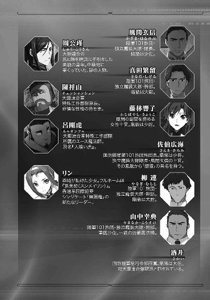
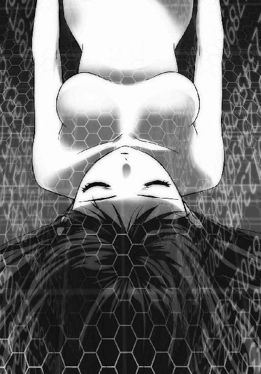

| 魔法科高校の劣等生(16) 四葉継承編 (電撃文庫) | |
| 佐島 勤 | |
| (2016) | |

本書（電子版）に掲載されているコンテンツ（ソフトウェア／プログラム／データ／情報を含む）の著作権およびその他の権利は、すべて株式会社ＫＡＤＯＫＡＷＡおよび正当な権利を有する第三者に帰属しています。
法律の定めがある場合または権利者の明示的な承諾がある場合を除き、これらのコンテンツを複製・転載、改変・編集、翻案・翻訳、放送・出版、公衆送信（送信可能化を含む）・再配信、販売・頒布、貸与等に使用することはできません。



［１］
授業終了の鐘。
授業のオンライン化によって教壇から生徒を見張る教師の目がなくなった今も、放課後の解放感は変わらない。
今日はとりわけ、校内がざわついている。
それも当然のことだろう。今日は西暦二〇九六年十二月二十五日、火曜日。二〇九六年度二学期最後の日だ。
いつもと違うのは授業が午前中で終わることのみ。終業式に該当するセレモニーは無い。
成績表が渡されるということも無い。成績については完全な自己責任で、進級・卒業が危ぶまれる生徒についてのみ保護者に呼び出しが掛かる。
それでも定期試験が行われない一般教科の評価点を含めた総合評価に自分でアクセスして、上機嫌になる生徒、肩を落とす生徒と一高内では二通りの表情が見られていた。
それは新設された魔法工学科クラスという、ある意味特殊な二年Ｅ組も例外ではなかったし、成績を確認する行動において、達也もクラスメイトと変わらない。魔工科コースに入ったことで実技の成績をそれほど気にしなくて済むようになったとはいえ、卒業に必要な単位が揃っているかどうかは彼も気になるのである。
取り敢えず満足できる結果だったことを確認し、自分の評価データを携帯端末に落として席を立とうとした達也は、隣から強い視線を感じて振り向いた。
「美月、何か用か？」
達也の問い掛けに対する美月の答えは、歯切れの悪いものだった。
「いえ......何でもありません」
美月は達也に成績はどうだったかという定番の質問をしたかったのだが、それを訊くと自分も答えなければならなくなってしまうと思い直したのだった。美月の成績もクラス平均を上回る立派なものだったが、達也の成績を聞いた直後に自分の成績を開示する勇気はなかった。
「そうか？ では、また後でな」
「はい、後ほど」
そうあいさつを交わして、達也は生徒会室へ、美月は美術室へ向かった。
すっかり暗くなった午後五時半。クラブ活動、生徒会活動を終えた達也たちはアイネブリーゼに集まっていた。通学路から一本脇道に入ったこの喫茶店は、すっかり達也たちのたまり場になっていた。とはいえ普段は下校時に短時間集まるだけだし、中で騒いだり調度品を汚したりすることはないので、店としても彼らは良いお得意様と言えるだろう。
「それでは一日遅れになりましたが、気にせずご唱和ください！」
エリカの音頭で、
「メリー・クリスマス！」
一斉に声が上がる。
「メリー・クリスマス！」
この時間、アイネブリーゼは貸し切りで達也たちによる一日遅れのクリスマスパーティーが開催されていた。
「ご唱和ありがとう！ 欲を言えば日がある内にやりたかったけどねぇ」
「仕方ないわよ。エリカだってクラブがあったんでしょう？」
深雪の一言に、エリカが苦笑いを浮かべる。
「うちの部は途中で抜けてもあんまり厳しいことを言われないんだけどね。深雪はそうもいかないか。生徒会長だもんね」
「わたしだけではないわよ。吉田君は風紀委員長だし、雫だって風紀委員の当番だったんでしょう？」
深雪に話を振られて、幹比古は照れ臭そうに笑い、雫は短く「ウン」と頷いた。
「そうよねぇ。レオはともかく」
「ともかくって何だよ!?」
「ほのかも生徒会役員だし、達也くんは『書記長』だもんね」
レオの抗議を聞き流して、エリカはほのかから達也へ視線を移した。
「良いじゃないか。一日遅れとはいえ、こうして皆で集まることができたんだ」
達也の回答は微妙に論点をずらしたものだったが、エリカはそれに気づかず「まあね」と頷いた。
「昨日は予定が入っている人が多かったもんね」
雫は昨日、父親の経営する会社のパーティーに出席していた。ほのかは「娘同然」ということでそれに引っ張り出された。
幹比古は一門の若手で開いたパーティーに引きずり込まれた。参加メンバーは女性比率が高く、幹比古は最後まで抵抗したのだが、兄に「監督役を手伝ってくれ」と頼まれては強情を貫けなかった。
かくいうエリカ自身、家の都合で引っ張り回された口だ。彼女の場合は千葉家主催のクリスマスパーティーではなく関東地方警察のパーティーに、長兄の寿和と共に送り込まれた。当主である父親が有力政治家のパーティーに出席するのでその代理だ。本音では今まで散々日陰者扱いしておきながらと思っていたが、それを口にするのは父親に対する負けのような気がしたので渋々寿和に付き添ったのだ。寿和に配偶者または婚約者がいれば回ってこなかった役目であり、そのことについて長兄に向かい嫌味の雨を降らせることでエリカは鬱憤を晴らした。
そんなわけで昨日できなかったクリスマスパーティーを、今日開催することにしたのである。
ちなみに参加メンバーは達也、深雪、エリカ、レオ、美月、幹比古、ほのか、雫の二年生のみ。水波は一年Ｃ組のクラスメイトに誘われて別のパーティーに加わっている。こちらもエリカたちと似たような事情でクリスマス・イブにパーティーができなかった口だ。場所は某有名レストランで、出て来る料理は達也たちのパーティーよりも数段ゴージャス。そこには同じ一年Ｃ組の香澄も参加していて、泉美は香澄に連行された。
香澄と泉美は昨晩、七草家の傘下企業の役員を招いたパーティーでずっと愛想を振りまいていたので、今日は存分に羽を伸ばすことだろう。羽目を外しすぎることが懸念されるほどだが、そこは同級生の気安さ、多少のやりすぎは目をつぶってもらえるだろうと考えていた。泉美が深雪と同じパーティーに固執しなかったのは、そういう計算があったからだと思われる。
そういうわけで、達也たちの方も同級生のみの気が置けないお茶会になっていた。
水波たちと違って本格的な夕食は帰ってからの予定だ。ケーキも一人一切れずつ、量より味重視でマスターに用意してもらっている。飲み食いに口を使わない分だけ会話が弾んだ。──と言えばレオあたりから異議申し立てがあったかもしれないが、午後七時までの一時間半、ほとんどお喋りが途切れなかったのは紛れもない事実である。
「今年も、もう終わりですね......」
もうすぐお開き、という時間になって美月がしみじみとこういうことを言い出したのは、わいわいと交わした他愛もないお喋りが楽しいものだったからに違いなかった。
「今年は平和だったね」
感傷的な雰囲気を嫌ったのか、エリカが陽気な声でそう答える。
「そうかなぁ......結構大変だったと思うけど」
幹比古のセリフは、反射的に本心がこぼれ落ちたものだった。
「吸血鬼騒動なんかもあったしね」
「ピクシー告白事件とか」
しかし幹比古のこのセリフが、ほのかの何気ない一言に続く雫の鋭いツッコミの呼び水となって一同の笑いを誘った。
「雫！ それ、言わないで！」
ほのかには気の毒にしても結果的にナイスプレーだったと言えるだろう。
「エリカの肩を持つつもりはねえけど、それでも去年に比べりゃ平和だろ。横浜事変みたいな騒動に巻き込まれなかったからな」
「あんなことが毎年起こってたまるものか」
レオのセリフに、達也が笑いながらすかさず反論する。
「そりゃそうか」
レオだけでなく皆から、賛同の笑い声が上がった。
「達也さん」
午後七時、予定時刻になりお行儀良く──グズグズと居座らないという意味で──全員が店の外に出た直後、達也はほのかに声を掛けられた。
「来年も初詣に行きませんか」
振り返った達也が応答するより早く、ほのかが彼を初詣に誘った。
「初詣か」
達也のセリフに過剰反応したほのかが、慌てて手を振り始める。
「あっ、みんなで、みんなでです。今回は雫も一緒ですし、エリカも参加できるって言ってます」
どうやらほのかは根回しを済ませているようだ。感情だけが先走っているのではなく、その場限りでない意気込みが感じられる。
「......すまない」
だから、こう答えなければならないのが、達也はとても心苦しかった。
「俺と深雪は今度の正月、どうしても外せない用事が入っているんだ」
まさか断られるとは思っていなかったのだろう。ほのかはかなりショックを受けていた。
「せっかく誘ってもらったのに」「いいえ」
だが達也が謝罪を終える前に、強張った顔を笑顔に変えてそのセリフを遮った。
「大切なご用事なんでしょう？ だったら仕方ないですよ」
決して自然な笑顔とは言えないが、とにかく、湿っぽくならずにほのかは最後まで言い切った。
ここまであからさまな気遣いを見せられては、それを無下にすることはできない。
「また今度誘ってくれ」
達也は謝る代わりに、そう言い直した。
達也とほのかの間は、こうして気まずい空気になることもなく収まった。だが達也の隣では、深雪が暗い顔で俯いていた。
「深雪、どうしたの？」
真っ先に気づいた雫が、心配そうな声でそう問い掛ける。ただでさえ白い深雪の肌が血の気を失って、まるで病人のようだ。
「気分、悪い？」
雫はまさに、急病の可能性を疑っていた。
「......いえ、大丈夫よ。ありがとう」
そう答える深雪の顔は青ざめたままで、微笑みも弱々しかった。これぞ手弱女といった風情はある意味で深雪の容姿にとてもマッチしていたが、友人としてはそんなことを言っていられない、いきなりの変調だ。
しかし一方で、エリカは深雪の顔色を見てもそれほど深刻には受けとっていなかった。
「やだなぁ、初詣に行かないくらい、そんなに気にしなくて良いって。あたしなんて大した用でもなかったのに、今年、不義理しちゃってるし。ほのかも言ったように、深雪は大事な用事なんでしょう？ だったら、そっちが終わってから連絡ちょうだい。改めてみんなでどっか行こう」
エリカが雫より薄情なのではない。深雪が治療を要するほどの肉体的不調に陥ったならば、達也が何らかのアクションを起こすはず。それが無い以上、深雪の様子が変なのは精神的な要因によるものだとエリカは考えて、気持ちが楽になるよう励ますことを選んだのである。
「そうね。一段落ついたら連絡するわ」
深雪は幾分ましな微笑みで頷いた。それでも、彼女の肌は依然として不健康に血の気を失ったままだった。
◇ ◇ ◇
深雪の失調は一時的なもので、家に着く頃には顔の色も元に戻っていた。
エリカの推理は当たっていた。深雪が弱って見えたのは肉体的な疾患によるものではない。達也にはそれが一目瞭然だった。
深雪が青くなっていたのは精神的なショックによるものだ。ここ数日思い悩んでいたことが「正月の予定」というキーワードによって自動的に──つまり彼女自身の意思によらず思い出されてしまったことが原因だった。それも達也には分かっていた。
「深雪、しばらく部屋で休んでいたらどうだ。食事の支度は後でいいから」
だから、仮にパーティーの軽食とデザートである程度食欲が満たされていなくても、達也はこう指示したに違いない。
「そういうわけには！」
深雪は反射的に反論の声を上げかけたが、
「......いえ、分かりました」
自分の体調が、兄に最良の奉仕を提供できる状態にはほど遠いと、すぐに自覚した。
「一時間ほど休ませていただいてもよろしいでしょうか」
それでも深雪は達也の言葉にただ甘えるのではなく、兄を待たせてしまうことへの許しを請うた。
「もちろんだ。休んだ方が良いと言ったのは俺だからな」
達也は笑いながらそう答えて、
「いや......深雪、体調が元に戻るまで部屋で休みなさい」
すぐに言い方を変えた。
「はい、お兄様。お言いつけのとおりにいたします」
深雪が軽く一礼する。「休んで良い」ではなく「休め」と命令されたことにより、彼女の罪悪感は大きく減じられた。
二階の自室は真冬の寒気に冷え切っていた。断熱材を駆使した現代建築も、十二月下旬に十二時間以上室内の暖気を保つことは難しい。
もっとも、帰宅に合わせて部屋を暖めておくよう、外からホームオートメーションに命じることはできる。今では当たり前の技術だ。
だが深雪は、その機能を使ったことが無い。
彼女には、その必要が無いからだ。
深雪は扉を開けて、冷え冷えとした自分の部屋を一瞥した。
それだけで、室内温度は適度なレベルまで上昇する。
この程度の魔法に、深雪はＣＡＤの助けを必要としない。
深雪は中に入って扉を閉め、改めて暖房をつけた。継続的に室内の空気を暖める為ならば、魔法よりもエアコンが適しているからだ。
そうしてコートと制服を脱ぐ。
彼女はどんなに疲れていても、ベッドや椅子に服を脱ぎ捨てるような真似はしない。ロングコート、ブレザー、インナーガウン、ワンピースをハンガーに掛け、今日はどの服にしようかとクローゼットを物色する。家の中で着るのは珍しい、丈の長いルーズフィットのワンピースを手に取り袖を通している最中、ふと鏡に映ったレターラックが目に留まる。
着替えを終えた深雪は、机の前に座った。手を伸ばし、レターラックから一通の封筒を取り出す。
中に入っている便箋を実際に目で見なくても、何が書いてあるかは分かっている。それこそ一字一句、暗記するほどに読み込んでいたが、何かに操られるように深雪はその手紙を封筒から出して広げた。
招待状の体裁を取っているその手紙の内容は、四葉本家で開かれる元旦の集まり「慶春会」への参加を命じるものだった。
去年も一昨年も、深雪は新年のあいさつに本家を訪れている。しかし、分家の当主が勢揃いする慶春会には顔を出していない。出席しなかった第一の理由は「招かれていなかった」からだが、それを幸いに深雪は慶春会を、分家の当主と顔を合わせるのを避けていた。分家当主たちの達也に対する不遜な言行が、彼女には耐えられなかった。
だが今年は真夜から直々に招待、いや、出席を命じられた。しかも真夜の直筆のサインが入った書面で、だ。どんなに気が進まなくても、避けて通ることはできない。分家の面々が達也に対してどんな態度を取っても、彼らを「止めてしまう」ことは許されない。自分が何処まで我慢できるか、深雪は今から不安だった。
しかしそれも、出口の見えないこの悩みからすれば些細なことだ。
深雪は自分が何故一族勢揃いの席に呼ばれたのか、薄々ではなくかなり強い確信を持って察していた。
──叔母は遂に、次期当主を指名するつもりなのだ。
──叔母は自分を、次期当主に指名するつもりなのだ。
今の深雪に、当主の座そのものを望む気持ちは無い。
昔は当主に相応しくありたいと思っていたこともある。だが四年前のあの夏の日を境に、それも無くなっていた。
彼女には元々「当主になりたい」という気持ちは無く、ただ周りの大人から「貴方が当主に相応しい」と言われ続けてその気になっていただけだった。いや、「その気になっている」という意味では今も変わらない。
四葉家の当主は、その世代で最も優れた──最も強い、ではなく──魔法師が就くことになっている。篩に掛けられて残っている次期当主候補は四人。司波深雪、黒羽文弥、津久葉夕歌、新発田勝成。そして残った四人の中で、深雪こそが最優の魔法師。彼女は本家の使用人たちからずっとそう言われ続けている。
さすがに筆頭執事の葉山や荒事面の手配を担当する第二位の花菱、魔法師調整施設を管理する第三位の紅林といった、使用人の中でも四葉の中枢に近い者たちは軽々しくそのようなことを口にしない。だがそれ以下の者たちは、深雪に阿るでもなく無邪気に、彼女こそが最優秀だと褒め称える。
深雪自身も、次期当主候補四人の中で自分の魔法力が最も優れていると思っていた。煽てられて舞い上がっているのではなく、客観的な判断だという自信がある。だが「自分が一族同世代中最優秀の魔法師だから自分が次期当主に指名される」という考え方自体が、四葉的価値観を刷り込まれて「その気になっている」証拠だ。
ただ、「当主になりたいか？」と問われたならば、深雪は「興味が無い」と答えるだろう。次期当主の座を辞退しても良いという選択肢が示されたならば、深雪はきっと、それを選ぶ。当主の仕事は、兄に尽くす時間を奪い取るに違いないのだから。
しかし同時に「四葉家当主の地位などお断り」とも、深雪は思っていなかった。自分の為だけなら何の価値も無いものだが、自分が当主となることで兄の待遇が改善されるなら、当主になるのも悪くないと深雪は考えている。
一族当主の守護役ならば、少なくとも使用人から軽んじられることは無くなるだろう。分家の人間にも一定の敬意を要求できるようになるだろう。自分の為でなく兄の為なら当主の地位も我慢できると深雪は思っている。
深雪は、次の当主に指名されること自体が憂鬱なのではなかった。問題は、当主の座に必ず付随するであろう結婚相手だった。
ただでさえ魔法師は早婚が奨励されている。叔母の真夜や五輪澪のように特殊な事情を抱えていない限り、独身を貫くことは許されない。魔法師にも建前として基本的人権は認められているので、結婚しないからといって法令に基づく罰則を受けることはない。だが、魔法師のコミュニティから爪弾きにあうことは必至だ。部外者からは孤高の存在と見られている四葉だが、日本魔法界のリーダーを自認する十師族の一員である以上、魔法師仲間の評判を気にしないわけにはいかない。
その意味では、真夜が独身でいるから尚更、次の当主は早々に結婚することを同じ十師族から求められるだろう。次期当主指名後すぐに結婚を強要されるということはなくても、婚約者は押し付けられるに違いない。
──自分が兄以外の誰かと結婚する。
──自分が兄以外の誰かの妻になる。
そのこと自体についてなら、深雪は既に割り切っている。実の兄妹で結婚を認められない以上、そして魔法師である自分に独身を貫く自由が無い以上、自分が兄以外の男性と結婚するのは深雪にとって仕方の無いことだった。
深雪は便箋を畳んで封筒に戻し、封筒をレターラックに戻して立ち上がる。
彼女は鏡台の前に座って、鏡の中の自分に心の中で語り掛けた。
（......そうよ、これは仕方が無いこと。わたしにはどうすることもできない）
鏡の中の深雪が、心の中に話し掛ける。
《本当に、仕方が無いこと？ 本当にそれで、納得できるの？》
鏡の中から返る声は、今の自分より少し幼く聞こえた。
（ええ......。わたしとお兄様が兄妹だという事実は、どうしようもないことだもの。納得するしかないし、納得しているわ）
深雪は鏡の中の少女へ、自分自身へそう言い聞かせる。
《噓よ！ わたしは納得なんかしていないわ！》
鏡の中の「深雪」は、自分より少しだけ幼い分、少しだけ素直だった。
（たとえどんなに納得したくなくても、納得しなければならないのよ、「深雪」。だってわたしとお兄様は実の兄妹だもの）
《実の兄妹だから諦めなければならないの!?》
（諦めるとか諦めないとか、そんな問題じゃ無いわ。兄妹で結婚はできない。それは最初から分かっていたことだし、わたしはお兄様に、女として愛してもらうことを望んでなんかいない。望んでいないことを諦めるというのはおかしいでしょう？）
《噓！ だったら『深雪』は何故そんなに、見ず知らずの、いるのかいないのかも分からない婚約者を嫌がっているのよ！》
（結婚して子供を産めば、母親としての義務を果たさなければならないでしょう？ お兄様にだけお仕えするわけにはいかなくなってしまうわ）
《子育てなんて使用人に任せれば良いじゃないの。四葉の当主は片手間で務まる役目じゃない。ずっと子供についていることなんて、どうせできないんだから》
深雪は鏡に映る自分の顔をまじまじと見詰めた。自分の言い訳がこんなに容易く論破されてしまうお粗末なものだと、彼女は気づいていなかった。
鏡の中の少女はなおも彼女に語り掛ける。建前ばかりで自分の本心に向き合おうとしない深雪を詰る。
《他の男と結婚しても、お兄様のお役に立つ方法は幾らでもあるわ。魔法師の義務を果たす為だけに結婚する相手を、夫として愛する必要なんて無い。子供を作るという義務さえ果たしておけば、誰も文句は言わない。『深雪』、貴女が本当に嫌なのは、結婚することそのものではないはずよ》
（止めて）
深雪は耳を塞ぎたかった。
《『深雪』、貴女の本心は》
（止めて！）
鏡の中の自分から、顔を背けたかった。
《貴女が本当に嫌なのは》
（止めて......！）
だが、彼女は激しく頭を振りながらも、鏡の前から立ち上がることができなかった。
《お兄様以外の男性の妻になること》
彼女の心は、最早自分自身に対する制止の声すら放てない。
《お兄様以外の男に抱かれること》
鏡に映る、怯えた目の自分。ずっと考えないようにしていた、己の本心に怯える自分。
《お兄様の花嫁になれないこと。お兄様に抱いてもらえないこと。お兄様に女として愛していただけないことよ！》
「ああっ......！」
悲嘆が唇から漏れ、身体が鏡台の椅子から床に崩れ落ちる。
鏡が視界から外れ、呪縛が解ける。
「だって、仕方が無いじゃない」
想いが声となって自分の外へと放たれたことで、分裂していた感情は一つになった。
「わたしはお兄様の妹なのだもの。お兄様とわたしは実の兄妹なのだもの」
心の中だけで抱えていることができなくなった感情が、次々と唇からあふれ出す。
「実の兄を女として愛するなんて許されない。世間が許さない。お兄様だってきっと、アブノーマルだとお思いになるわ。そんなの気持ち悪いってお感じになるわ」
一人きりの部屋の中で、深雪は思いの丈を正直に告白した。誰も聞いていないからこそ、正直になることができた。
彼女の言葉は、誰にも、何者にも、伝えるものではなかった。
彼女の言葉は、懺悔ではなかった。
「世間からどう思われようと構わない。後ろ指をさされても、村八分にされても良い。でも、お兄様に気持ちの悪い子だと拒まれるようなことになったら......わたし、耐えられない......！」
彼女は自分の想いを罪だと思っていない。
彼女に許しを与えることができるのは唯一人で、それは神ではない。
「だから、仕方の無いことなのよ」
深雪の告白が止まる。あふれ出す想いは言葉から涙に替わって、彼女の目からこぼれ落ちた。
［２］
冬休み初日、達也は朝からＦＬＴ開発第三課へ足を運んでいた。
深雪は水波と共に家で留守番だ。開発第三課は彼のホームグラウンドとも言える場所、深雪を同伴しても歓迎されこそすれ邪魔者扱いされることはない。それは達也にも分かっている。ただ今日は、開発ラボに連れてきても全く構ってやれないことが予想された。ならば家でゆっくりさせた方が良いと達也は考えたのだ。
彼は今日から新しい仕事に取り掛かる予定だ。新作ＣＡＤの開発ではなく、魔法工学技術をフルに使った大規模システムの設計。実現するのは何年先になるのか分からない。達也が作ろうとしているのは、そもそもＦＬＴの力だけでは実現できない大型エネルギー・資源・環境プラントだ。
プロジェクト名は「ＥＳＣＡＰＥＳ」。「恒星炉による太平洋沿海地域の海中資源抽出及び海中有害物質除去（Extract both useful and harmful Substances from the Coastal Area of the Pacific using Electricity generated by Stellar-generator）」を短縮した名称だが、このプロジェクト名は「脱出手段」という意味も持っている。
今の段階で着手できるのは、あくまでプラントの企画書作成とそこに組み込むシステムの設計まで。それでも、ようやく第一歩を踏み出せる所までこぎ着けた。
彼がこの構想を立てたのはおよそ三年前、あの沖縄の日からちょうど一年経った二〇九三年八月のことだ。ループキャストも飛行デバイスも恒星炉も、このシステムの為のパーツだった。そしてつい先日最後のピースに目処がついた。プロジェクトの実現性から見ても達也の年齢から見ても、まだまだ先は長い。とはいえ、彼がこのプロジェクトに置いている意義を考えれば、かつてなく気合が入ってしまうのもやむを得ないことだった。
だが彼の熱意は、仕事開始から一時間でいきなり水を差されてしまう。
『お邪魔して申し訳ございません、御曹司』
量子暗号による送信も禁止、記録用ソリッドキューブにコピーして家に持ち帰ることすらできない秘密性の高いデータに囲まれて企画書のアウトラインを作成している最中、達也は開発第三課の女性職員からインターホンで呼び掛けを受けた。
「何でしょうか」
正直に言って、今、手を止めたくなかった。だが、一人で部屋にこもっている彼にあえて声を掛けたからには、重要な用事なのだろう。達也はキーボードから指を引き、インターホンに応答した。
『はい、黒羽貢様と仰る方が御曹司にご面会をご希望です。如何なさいますか？』
我知らず、達也は眉を顰めた。
達也の知る限り、貢がＦＬＴを訪れたことはない。四葉における貢の仕事は諜報工作であり、純然たる資金源（の一つ）であるＦＬＴは彼の管轄外。達也に用があるとしても、ここに来る必要は無いはずだった。
「お目に掛かります。オフラインの応接にお通ししてください」
貢の目的を推測するには材料が足りない。達也はすぐにそう見切った。
何が目的なのか、会って確かめる必要がある。そう判断した達也は、貢をオンライン監視システムの備わっていない応接室へ案内するよう指示した。
応接室に入った達也は、あいさつより先に鍵を掛けた。
彼が改めて身体を向けても、貢はソファから立ち上がろうとしない。達也の入室に貢が見せた反応はといえば、落ち着かなげに両手で弄っていたソフト帽をソファに置いたくらいだ。
「お久し振りですね、黒羽さん。夏以来でしょうか」
「ああ」
貢が不機嫌そうに頷いたのは、「夏以来」というフレーズにより周公瑾に深手を負わされた苦い記憶を呼び起こされた所為ばかりではなかった。貢は達也が姿を見せる前から、ずっと不景気な顔をしていた。
「座っても？」
貢が無言で頷き、達也がその正面に腰を下ろす。
達也が貢の顔を正面から見詰めた。二人の間にはまさしく親子の年齢差がある。だが達也の顔に、気後れを窺わせるものは全く無い。肩肘を張る虚勢も無い。
貢が忌々しげに唇を歪める。今にも舌打ちが漏れそうだ。
もっとも、貢には達也を「たかが護衛風情」と見下す気持ちはない。達也は四葉家現当主・四葉真夜の甥であり、次期当主候補である深雪の兄だが、四葉家の内部、特に実戦から遠い使用人たちの間では「四葉の血を引きながらそれに相応しい魔法力を備えていない出来損ない」で「お情けで妹のガーディアンの役目をもらっている」と軽んじられている。
しかし貢は、達也が「出来損ない」などではないことを知っている。確かに普通の意味では魔法師として欠陥品だが、その欠点を補って余りある異常な能力が達也には備わっている。それを貢は、良く知っていた。
達也の態度に貢が不快感を見せたのは、単に、自分の息子と同じ年頃の少年が自分を同格の存在として見ていることに対して苛立ちを覚えたからだった。
表情に余裕が無い。自分を大きく見せようと虚勢を張っているのは、むしろ貢の方かもしれなかった。
「ご用件をうかがってもよろしいでしょうか」
何時までも口を開こうとしない貢に対して、達也がそう促す。「俺も忙しいんですが」とは言わなかったが、そのニュアンスは声に出ていた。無論、わざとだ。
聞き様によっては、ではなく、年長者に対して間違いなく失礼な口振りだが、ここは貢が自制した。押し掛けたのは自分であり、この程度で逆上するのはみっともないと判断する程度の分別は、貢の中に残っていた。
「慶春会は、欠席したまえ」
ただ形を取り繕う必要性は認めなかったようで、貢の発したセリフは本当に用件だけのぶっきらぼうなものだった。
「最初から出席する予定はありません」
「なに......？」
しかし達也のこの回答は、貢にとって完全に予想外のものだったのだろう。達也が応接室に入ってからずっと貫かれていた貢の仏頂面がはがれ落ちる。貢は今、意外感という生の表情を無防備に曝していた。
「俺は最初から、慶春会に出席する予定になっていません。ご当主様に出席を命じられたのは深雪だけですから」
達也は真夜のことを「叔母上」ではなく「ご当主様」と呼んだ。そこには暗に、深雪が慶春会へ出席することは四葉家当主の決定であり、貢が口を差し挟むのは筋違いだという反論が込められていた。
「屁理屈を......！」
貢の口から舌打ちが漏れる。一度素顔を見せてしまったからか、彼は苛立ちを取り繕う努力を放棄していた。
「では君から妹さんに、慶春会出席を思い止まるよう説得してもらいたい」
ただ、それがガス抜きになったのか、貢は達也相手に逆上することなく、口調も多少落ち着いたものになった。
丁寧に告げたからといって、それが達也に受容可能な要求かどうかは別問題だが。
「何故本人に直接言わないんですか？」
拒絶されることは貢にも分かっていた。だが達也の回答は、貢が予想したものとは少し方向性が違っていた。
「私が言っても、妹さんは納得しないだろう。だから君に説得を頼んでいる」
「深雪に対してではありませんよ。何故ご当主様に出席命令の撤回を進言しないのですか？」
貢が一瞬、返事に詰まる。
「......君に言われるまでもない。真夜さんには、時期尚早であると何度も翻意を促した」
「ならば俺が深雪に慶春会を欠席するよう言っても意味は無いでしょう。辞退を伝えても、ご当主様がそれを受け容れるはずがない」
達也の言い分をもっともだと考えたのか、貢が押し黙った。
達也が意味ありげな、それでいて人の悪い笑みを浮かべる。
「文弥を当主に推す為にはもう少し実績が欲しいでしょうから、時期尚早というのは理解できますが」
「邪推だ！」
貢が強い声で言い返す。肘掛けに置かれていた右手がわずかに持ち上げられた所できつく握り締められて止まったのは、反射的にテーブルを叩こうとして自制した結果だった。
「元々私は、文弥を四葉の当主とすることに乗り気ではなかった。四葉家を率いていくには、あの子は気性が優しすぎる。魔法力の面から見ても、次の当主は深雪が相応しいと私は考えている」
貢の反論に、達也は内心、意外感を禁じ得なかった。貢は文弥を四葉の当主にしたがっていると、達也は今の今までそう思っていたのだった。
「では、どういう意味で時期尚早と仰っているんですか？」
しかし、自分自身の思い違いは取り敢えず棚に上げておくことにする。それより貢の真意を探る方が優先された。
貢が答えを躊躇ったのは、息を一つ吞み込む間だけだった。彼は開き直ったような顔を達也へ向けた。
「次の慶春会は、次期当主指名の場になる。そして真夜さんは、深雪を指名するつもりだ」
「そうでしたか」
今初めて知ったようなセリフで相槌を打ったが、それは達也も予想していた。
「しかし私は、一つの重要な案件が片付くまで深雪の当主指名を延期すべきだと考えている。私だけではないぞ。椎葉、真柴、新発田、静の四家も同じ考えのはずだ」
「武倉と津久葉を除く分家当主の一致した意見ということですか。それで、重要な案件とは？」
「君の処遇だ」
貢がニヤリと笑った。タールのようなドロドロとした闇を瞳に宿した、暗い笑みだった。
「あと二年もすれば、調整体『桜シリーズ』の桜井水波は、四葉のガーディアンとして十分な力を身に着ける。あの娘は四葉の召し抱える調整体の中でも特に優秀な素質を持っているからな。そうなれば君は、ガーディアンとして用済みだ」
貢は彼らしくもなく、自分の言葉に酔っているような趣があった。
「心配するな。魔法大学は卒業させてやろう。その後は『トーラス・シルバー』として四葉の活動資金獲得に貢献してもらう。国防軍の仕事もする必要は無い。特務士官の地位から解放してやろう」
貢は瞳に闇を宿したまま、更に唇の端を吊り上げた。
「ああ、そうだ。君の父親に預けたＦＬＴの持ち株を、君の名義に変えてやろう。君の存在を対外的に公表するわけにはいかないから社長にはしてやれないが、ＦＬＴの最大株主だぞ」
「そんなものに興味はありませんが」
うんざりした声で、達也が貢の言葉を遮る。
「今仰ったことは全て黒羽さんの一存では決められないでしょう」
決めるのは真夜だと、達也が言外に示唆する。
「そのような口約束をしては、叛逆の意思ありと誤解されかねませんよ」
「......いや、そんなつもりはない」
憑き物が落ちたように、貢の顔から闇色の笑みが消えた。
自分が普通ではなかったと自覚したのか、貢は俯いて再び黙り込む。
「黒羽さん、深雪の慶春会出席を決めたのはご当主様──叔母上だ。俺や深雪の一存で欠席できるものではない。その程度のことは理解されているでしょう」
「それでもだ」
応接テーブルに目を向けたまま、貢は低い声で呟いた。
「文弥や亜夜子を悲しませたくない」
達也の目が鋭く細められた。
「本気ですか」
貢は顔を上げて、達也の視線を迎え撃った。
「悲しませたくない、と言ったはずだ。私は何もしない」
「日和見ということですか」
「私は中立だ。心情的には君の敵だが、子供たちの為に手は出さない」
貢はいけしゃあしゃあと敵対を宣言した。
達也はそれを既知の事実として受け止めた。
「何故そこまでして深雪から俺を遠ざけたいのか......理由を訊いても、答えていただけないでしょうね」
貢が立ち上がる。
「期限内に本家へたどり着けたら答えてやろう」
貢は達也を見下ろしながら、別れのあいさつ代わりにそう告げた。
◇ ◇ ◇
冬休みの初日を高校生らしく（？）宿題の処理に費やしていた深雪の許へ予定外の客が訪れたのは、昼食を済ませてしばらく経ってからのことだった。
「深雪さん、お久し振り。お元気そうで何よりだわ」
「夕歌さんもお変わりなく。どうぞお掛けください」
リビングの応接セットで深雪の対面に腰を下ろした客の名は津久葉夕歌。彼女は四葉の分家である津久葉家の長女であり、加えて四葉の次期当主候補でもある。
年齢は二十二歳。元第一高校の生徒会副会長で、現在は魔法大学の四年生。肩に掛かる程度のストレートの黒髪を六：四分けのワンレングスにし、露わにした右耳にピアスを光らせている。メイクもばっちり決まった、大学生らしい垢抜けた女性だ。
深雪と夕歌の関係は一言で表現すれば中立的。あるいは相互不干渉。亜夜子のようにライバル心を向けあうでもなく、文弥のように親しくもなく、もう一人の当主候補である新発田家の長男・勝成のように敵対的でもない。こうして家を訪ねてくるのが、ある意味で最も意外な人物だった。勝成が宣戦布告に押し掛ける方が、事態としてはまだありそうだ。
とは言っても、夕歌は深雪と敵対しているわけではない。立場的にも同じ四葉家次期当主候補同士だ。家を訪ねてこられれば、余程非常識な時間でもない限り中に入れないわけにはいかない。
「お正月以来、約一年ぶりかしら」
「ええ、そうですね」
「同じ東京に住んでいるのに、案外顔を合わせる機会は無いものね」
「東京も広いですから」
「そうね。こういう時に、それを感じるわ。深雪さんは一高の二年生でしたね？ 生徒会長ですって？」
「ええ。よくご存じですね」
「一応、母校ですからね。派手に活躍しているみたいじゃない」
「今の段階で目立つのはあまり好ましくないと分かっているのですが、手を抜くのは相手に対して失礼だと思うと、つい......。夕歌さんはもうすぐご卒業でしたね？」
「ええ。といっても、大学院に進むのだけど」
「本家のお手伝いをされるのではなかったのですか？」
「少しくらい箔をつけておけ、ということみたい。今更よねぇ」
深雪が当たり障りのない受け答えをしている内に、水波がお茶を持って来た。
当たり障りが無いと言ってもそれは言葉遣いだけで、内容は結構ぎすぎすしたものだった。派手に活躍している、という夕歌のセリフは「そんなに目立っても良いのか」という含みを持たせたものだったし、それを受けて深雪は「分かっているけど手を抜くのは失礼でしょう」と返して、夕歌が高校生時代に実力をひた隠しにしていたことを暗に批判している。
その後に深雪が口にした本家を手伝わないのか、という質問には「四葉の秘匿技術を大学に漏洩して良いのか」という意味が込められていた。
こういう陰険な駆け引きは、できるできないは別にして、深雪の好みに合わない。だからお茶で仕切り直しができるのは裏も表もなくありがたかった。
「それで夕歌さん。本日はどのようなご用件でしょうか」
深雪と夕歌、二人同時にカップをソーサーへ戻したところで、深雪が夕歌に本題を訊ねる。
深雪の単刀直入な質問に、夕歌は回りくどい態度を止めた。
「今度の慶春会だけど、本家までご一緒しない？」
「......それは、東京から本家まで同行しないかというお誘いですか？」
「そっ。私が車を出すから、乗っていって」
「理由をうかがってもよろしいでしょうか」
深雪は心の中に湧き上がった警戒感を隠せなかった。それは、やむを得ないことかもしれない。夕歌は次期当主の座を争うライバルであり、普段ほとんど交流の無い、血縁と言ってもほとんど他人同然の、せいぜい顔見知りでしかない相手なのだ。
交渉の態度としては未熟なものだが、夕歌にそれを気にした様子はない。夕歌は他の多くの人々のように、深雪をハロー効果で過大評価しない。極上の魔法力と類い希な美貌を持っていても深雪はまだ十六歳の、夕歌より六歳も年下の女の子だ。それを夕歌は上辺だけでなく理解していた。
「理由ねぇ。言わなきゃダメ？」
上目遣いに甘えるような口調で有耶無耶にしようとする夕歌。それを深雪は冷たい眼差しで見詰める。
「分かった」
夕歌も本気で誤魔化そうとしたのではないようで、すぐにふざけた態度を引っ込めた。
「理由は私の護衛がいなくなっちゃったから」
「いなくなった？ 夕歌さんにはガーディアンが」
ソファから身を乗り出そうとした深雪を押し止めるように、夕歌が目を閉じて首を数回、横に振った。
「いなくなっちゃったのよ。私の目の前で。死んじゃった、とも言うんだけどね」
深雪が口を押さえたのは、瞬きを再開するまでの短い時間だった。
深雪は自分の不明を恥じた。「いなくなった」という言葉が「殺された」ことを意味していると理解して然るべきだったと考えて。
夕歌は成人済みの、四葉の魔法師だ。その魔法特性上、本家から危険な仕事を命じられることは少ないが、皆無ではない。それはつまり、ガーディアンが夕歌の任務中に殉職する可能性がゼロではなかったということだ。
それに彼女は稀少な、精神干渉系魔法に高い適性を持つ魔法師だ。その魔法資質を知った者に遺伝子を狙われるというのも十分あり得ることだった。
「それは......御愁傷様です」
丁寧に一礼した深雪に、夕歌はもう一度首を左右に振った。
「その表現は適当じゃないわ。命を懸けて私を守るのが彼女の仕事であり、彼女はその責務を全うした。彼女はもうこれ以上、私の身代わりとなることに怯える必要は無い。もしもあの世が実在するなら、彼女はそこでホッと一息ついていることでしょう。もう、あの我が侭娘の都合に振り回されないで済むと」
夕歌の正直すぎる感想は、深雪を不快にさせた。
「たとえガーディアンという役目を負っていたからとはいえ、ご自分を守って亡くなられた方に対して......冗談であっても不謹慎ではないでしょうか」
夕歌は意外なことを言われた顔で、目を何度も瞬かせた。
「......深雪さんのガーディアンはお兄様ですものね。不愉快な思いをさせたのならごめんなさい」
表面上、夕歌は素直に頭を下げている。だが、彼女の言葉の端々にまだ何か含みがあるように感じられて、深雪は夕歌の謝罪を素直に受け取れない。
「わたしと兄に限ったことではありません。事実上ガーディアンを持っていない文弥君は別にして、勝成さんも琴鳴さんのことは大切にされているではありませんか」
堤琴鳴は新発田勝成のガーディアンで、勝成が琴鳴を大事にしているのは紛れもない事実だ。しかしこの場合は例として不適当だったのか、反省を促すつもりだった深雪の意図に反して夕歌は和んだ笑い声を上げた。
「勝成さんと琴鳴さんは、ほら、あれだから」
なおも横を向いてクスクスと笑い続ける夕歌を深雪は憮然と見詰める。自分の失策を深雪は否定できなかった。
「それにお兄様とわたしが同行しなくても、護衛くらいはすぐに手配できるのではありませんか？ わたしたちと違って、夕歌さんには津久葉家がついているのですから」
夕歌が笑うのを止めて、流し目に深雪を見た。
「それはそうだけど」
夕歌が正面を向いて座り直す。
「貴女のお兄様ほど腕の立つ方は中々ね......。それに、深雪さんたちにとっても悪い話じゃないはずよ？ 本家までタクシーは論外だし、達也さんも二輪の免許しか持っていないでしょう？」
確かに、地図に載っていない四葉の本拠地をタクシーの運転手に教えるわけにはいかないし、持っていく物が色々とあるので二輪車では無理だ。
しかし、それは最初から問題にならない。
「あらかじめ連絡しておけば、駅まで迎えに来てもらえます。去年までそうしていましたし、今年もそのつもりです」
深雪は次期当主候補であり現当主の姪。駅まで迎えに来る程度の重要人物待遇は当然だった。
「夕歌さんだって、去年まではそうしていたのではありませんか？」
自走車の運行制御技術はセミオートドライブのレベルまで進歩している。交通管制システムのサポートがなくても、ドライバーの負担は前世紀の比ではない。
とはいえ、自走車を運転して全く疲労しないという域には至っていない。東京から本家まで二時間もあれば走破できる距離だが、迎えを呼べるなら最寄り駅まで個型電車を使ってそこから車に乗り換える方がずっと楽だ。わざわざ自分で車の運転をする必要は無いはずだった。
「私はそれでも構わないんだけど。深雪さんは止めた方が良いんじゃないかな」
「何故でしょう？ 今までそれで不都合はありませんでしたが」
「前回まではね。でも今回は止めた方が良いと思うよ。理由は言えないけど」
理由は言えない、ということは漠然とした懸念ではなく、夕歌には明確な根拠があるのに違いなかった。
「夕歌さん、貴女は何をご存じなのですか？」
「それは言えない」
「......何故、去年までと同じでは駄目なのですか？ 夕歌さんとご一緒することで、どんなメリットがあるのですか？」
「それも言えない」
じっと見詰める深雪の眼差しを、夕歌はとぼけた瞳で受け流す。
「......そうですか」
この場で折れたのは、深雪の方だった。
弱気になったのではない。深雪には、夕歌を白状させる手段が無いのだ。
たとえ、魔法を使っても。
四葉の魔法師は精神干渉系魔法を得意とするタイプと、極めて強力でユニークな魔法を得意とするタイプに分かれる。深雪は極めて強力でユニークな精神干渉系魔法を得意とする、両方のタイプに当てはまる魔法師。そして夕歌は典型的な精神干渉系魔法を得意とするタイプだ。
相手を叩きのめすならともかく、暗示を掛けて秘密を白状させる類のテクニックは夕歌の方が遥かに上手。表面上は敵対していない以上、力尽くで情報を引き出す選択肢は採れなかった。
「お申し出の件は、兄に相談した上でご回答いたします」
「そう？ 良いお返事を期待しているわ。お互いの為にね」
夕歌がソファから立ち上がる。
玄関の扉を開けた水波に「お茶、美味しかったわ」と声を掛け、見送る深雪に「またね」とラフなあいさつを残して夕歌は司波家を後にした。
◇ ◇ ◇
「夕歌さんがそんなことを......」
帰宅した達也は深雪から夕歌の訪問と彼女の申し出を聞かされて、しばらく考え込んでしまった。もちろん彼も、たったこれだけの材料で夕歌の、いや、津久葉家の真意を読み取ることはできない。だが夕歌のオファーと貢の理不尽な要求の間に、何か密接な関係があるということだけは間違いないように思われた。
「彼女は理由を曖昧にぼかすのではなく、何を知っているのか『言えない』と言ったんだな？」
「はい。何かを知っているということを隠すつもりはないようでした」
つまり、何かがあるということだ。推測のレベルではなく、確定情報のレベルで。それも慶春会のその席で、ではなく、ここから本家に向かうまでの間に。
夕歌の発言が達也たちに疑心暗鬼を起こさせて慶春会を欠席するように仕向ける為のものである、という可能性もゼロではない。だが、
（俺たちに対する襲撃が企てられている、ということだろうな）
貢の脅迫も併せて考えれば、その可能性が最も高いように達也には思われた。
（何処で狙うつもりだ？ それ以前に、ターゲットは誰だ？ 深雪か？ それとも、俺か？）
標的が達也なら、心当たりは少なくない。裏の仕事をするのに当たり、彼は常に自分の素性を知られないよう細心の注意を払ってきた。目撃者は全て消しているはずだ。しかし何かの手違いで彼の仕業だと知られたならば、リスクを度外視して報復を誓う組織は一つや二つではないだろう。
だが仮に非合法組織の報復だとすれば、何故わざわざこの機会を狙うのかが納得できない。人目につかない場所を選ぶのは、相手が魔法師の場合逆効果だ。襲われた側が「身を守る為」を口実に魔法で反撃できるから、襲撃する側のリスクが高くなる。
一方、標的が深雪なら、相手の目的はほぼ一つに絞り込める。四葉家当主継承がらみだろう。四葉の当主の地位に他人を蹴落としてまで固執する価値は無い、と達也は思っている。深雪が辞退を希望するなら、達也は一切引き留めないだろう。彼の目には、他の当主候補者もそれほど乗り気でないように見える。熱心なのはむしろ大人たちの方だ。
だがそれだけに、大人の都合で思い切った行動にでる者がいないとも限らない。駅から本家までの途上は、四葉のお膝元であるのと同時に分家にとってもホームグラウンドだ。見て見ぬ振りをさせるとか暴行事件をもみ消すとかの裏工作にはもってこいと言える。
仮に深雪が狙われているのなら、夕歌の申し出を受けるべきだろう。夕歌が一緒にいることで襲撃を思い止まるかもしれないし、実際に襲われた場合は津久葉家を味方につけることが期待できる。
逆に達也が標的の場合は、夕歌を巻き込んだとして不利な立場に追い込まれる可能性がある。同行は夕歌からの申し出によるとはいえ、巻き添えにしてしまったという事実の方が重く見られてしまうだろう。
そうでなくても夕歌の提案を受けた場合、一定の譲歩を強いられる可能性がある。夕歌が同行することで襲撃を指示した者の立場は追い込まれるかもしれない。だが、達也たちにも夕歌を巻き添えにしたという負い目が残る。結局、最も得をするのは夕歌だ。次期当主の地位にメリットを感じないとはいえ、次の当主になるかもしれない相手に今の段階から借りを作るのは明らかなデメリットだ。
「......お断りしよう」
長考の末、達也が出した結論はこれだった。彼の心の中では、夕歌の申し出を受けた方が良いという声がずっと聞こえていた。彼の直感は夕歌と同行すべきだと囁いている。だが不透明すぎる状況をメリット、デメリットで整理して、夕歌の申し出を受けることによるデメリットの方が大きいと判断したのだった。
「分かりました。それでは夕歌さんに連絡して参ります」
リビングの大型ディスプレイ付き端末から電話するのではなく、部屋に置いてある小型ヴィジホンから連絡するつもりなのだろう。深雪は兄に一礼して二階へ昇っていった。
◇ ◇ ◇
『......すみません、せっかくお声を掛けていただきましたのに』
「私も残念だけど、気にしないでね。自分でも急な話だと思うし」
『申し訳ございません』
「良いって。でも、気が変わったら何時でも声を掛けてね」
『はい、ありがとうございます』
「じゃあね。ご連絡、待っているわ」
動画電話機をテーブルの中に収納して、夕歌はリビングのソファに大きく背中を預けた。ついでに思い切り足を延ばす。若い女性としては少々はしたない格好だが、このマンションは現在彼女の一人暮らしだ。くどくどとお行儀を説く使用人も、お説教好きな母親もいない。
二十歳になるまでは母親と家政婦が交互に泊まっていたが、二十歳以降はそれも無くなった。夕歌の認識的には、この二年で二十年分の自由を満喫していた。──夕歌のプライベートにほとんど口を出さなかった同居人がいなくなってからは、自由気ままな生活も良いことばかりではないと思い始めていたが。
彼女はリラックスした姿勢のまま、深雪の返事について考えていた。
断られることは想定内だ。むしろあの程度の情報しか与えていないにも拘わらずこちらの提案に食い付いてくるようでは興醒めだった。その時は、本当に巻き込まれたことを理由として次期当主の座を要求してやろう、と考えたかもしれない。
夕歌は別に、四葉家当主の地位など欲しくないのだが。
そもそも候補者が何人もいること自体が、体裁を整える以上の意味を持っていない。最も優れた魔法師が当主になるという四葉のルールを忠実に遵守するなら、次期当主は司波深雪で決まりなのだ。今の四葉に深雪以上の魔法師は存在しない。現当主の真夜を含めて、四葉最高の魔法師は深雪だ。少なくとも津久葉家はそう認識している。
夕歌は、いや、津久葉家は、二年前から深雪を次期当主に推すことを決めている。夕歌が口うるさい監視の目から解放されたのは、四葉の当主にならないことが前提だった。次期当主候補の地位を返上しなかったのは他の分家に対する取引材料に使えるからでしかなかった。
「それに、深雪さんにはあの『お兄様』がいるしねぇ......」
夕歌は去年の十月三十一日に対馬と朝鮮半島南端で何があったのか知っている。四年前の八月に沖縄で何が起こったのかも知っている。
「深雪さん一人だけでも勝てる気がしないのに、あの人間兵器まで味方についているなんて反則だわ」
夕歌には飲酒の習慣が無い。だがこんな時は、お酒が飲めれば良いのに、と思ってしまう。一度気分だけでワインに手を出してひどい思いをして以来（幸い薬が発達しているので二日酔いはすぐに治った）、酒杯に口をつけたことはないが。
「それにしても......達也さんに手を出そうなんて、正気の沙汰とは思えない。彼がいつまでも大人しくしていてくれるなんて保証は無いのに」
ワインの入ったグラスの代わりに、せめて見た目だけでも真似ようと考えたのか鮮やかな赤に淹れたローズヒップティーをガラスのティーカップに注ぎ、目の前に掲げて夕歌は独りごちた。
「新発田の伯父様も黒羽の伯父様も静の叔父様も、何故あんなに達也さんのことを目の敵にするのかしら？ 達也さんは四葉にとって重要な戦力だと思うんだけど......」
ガラスのティーカップを傾けて、夕歌がわずかに顔を顰めた。まだ熱すぎた上に、色を重視して濃く淹れすぎたのだ。
「いえ、伯父様方だけではないわね......。本家は何故使用人にまで達也さんを出来損ないだと思わせているのかしら。彼のことをぞんざいに扱うよう使用人に刷り込んで、一体何の意味があるというの？」
夕歌がローズヒップティーを一口飲んだ。酸味に慣れたのか、今度は顔を顰めなかった。
「達也さんが何故あのような扱いを受けているのか、お母様も頑として教えてくださらないし......余程根深い因縁があるのかしら？」
夕歌は中身が半分残ったティーカップをテーブルにおいて立ち上がった。浴室に向かう彼女の背後で、天井から降りてきたＨＡＲのマニピュレーターがカップをキッチンへ送る。
今度の慶春会で深雪が次の当主に指名されれば、達也が不自然に貶められている理由も明かされるかもしれない。夕歌は声に出さずに、そう考えた。
◇ ◇ ◇
夕歌との電話の後、深雪は本家に電話を掛けて、十二月二十九日に駅まで迎えに来て欲しいと頼んだ。出席を命じられているのは元旦の慶春会だから、身支度に掛かる時間を考えても本来であれば三十一日に本家へ出向けば良い。それを二十九日にしたのは、間違いなく起こるであろうアクシデントで足止めされるリスクを考慮してのことだった。
電話に出たのは小原という交通機動隊上がりの執事で、こうした車の手配をいつもやってくれる人物だ。
小原との打ち合わせの結果、午後一時に駅まで迎えが来ることに決まった。この予定は別段秘密にしておくことではない。むしろ深雪が到着した時に粗相がないよう、本家の使用人全員に通達された。
◇ ◇ ◇
新発田勝成は今年入省したばかりの、防衛省の職員だ。定期的に休日出勤を強いられるとはいえ勤務は概ね規則的だが、学生のように長い冬休みはない。今日も新人に与えられる充実した──雑多な、とも言う──仕事を終えて、マンションへ戻ってきたところだった。
まるでそのタイミングを見計らっていたように、ヴィジホンの呼び出し音が鳴った。
「勝成さん、あたしが」
「いや、いい」
玄関で帰宅した彼を出迎えた琴鳴がリビングへ戻ろうとするのを制止して、勝成は壁面埋め込み式のターミナルを操作した。
「父さん......何か御用ですか？」
ディスプレイに現れたのは、三日前に会ったばかりの父親、四葉分家の一つ、新発田家当主の新発田理だった。
『勝成、帰っていたか』
「ええ。たった今、帰ったところですよ」
『そうか。まあ、座りなさい』
画面の向こう側から、理がそう語り掛ける。
長くなるということだな、と勝成は判断して、ディスプレイと正対する位置のソファへ腰を下ろした。
身長百八十八センチ、体重八十キロという事務職にはもったいないような体格を誇る勝成に、市販のソファセットは少し狭い。だが勝成は慣れているのか、ソファと応接テーブルの間に長い足を差し込んで器用に身体を落ち着かせた。
『勝成、仕事の方はどうだ』
「まだまだ新米ですから......三日前にも同じ質問を受けましたよ」
『むっ、そうか......』
勝成の父親は武断派気質で、こんな風に口ごもるのは珍しいと言える。それだけ、言い出しにくい用件なのだろう。
「父さん、今度の慶春会に関する話ですか？」
だから勝成は、自分の方から訊ねることにした。あと三日もすれば顔を合わせる自分にわざわざ電話をしてきたほどだ。この時期に、他の用件は思いつかなかった。
『そうだ。実は先ほど、司波深雪から小原に連絡があった。二十九日に本家へ来るそうだ』
「深雪さんも二十九日ですか」
防衛省に限らず現代の中央省庁に正月休みというものはない。不測の事態に備えて一定数の職員が役所に詰めている。特に防衛省は世界群発戦争の勃発以来、年中無休体制だ。だが新米の勝成には、二十九日からの伝統的な休暇が与えられていた。
「しかし、それが何か？」
人間離れした美貌を持つ年下の親戚の女の子の顔を思い浮かべながら、勝成が不思議そうに問い掛ける。今回の慶春会には次期当主候補全員が出席することになっているから、深雪が年末から本家に滞在することに何の不思議もない。何故父親がわざわざ深雪の都合を勝成に電話してくるのか、彼には理解できなかった。
『勝成』
「はい......？」
改まって自分の名を呼ぶ父親に、勝成はますます不審を覚える。しかし次の一言で、そんな些細な疑問は全て吹き飛んでしまった。
『深雪を、慶春会に出席させてはならない』
勝成は咄嗟に言葉が出なかった。言葉を無くしたのではなく、心の中に疑問が一気に湧き出て、何から訊けば良いのか混乱してしまったのである。
「......理由を訊いても良いですか？」
結局彼が選び取ったのは、月並みで汎用性が高いこの質問だった。
『慶春会で真夜さんは深雪を次期当主に指名するつもりだ』
「そうですか。残念です」
そう答えながら勝成は、自分があまりショックを受けていないことに驚いていた。
確かに深雪は優れた魔法師であり、同時に四葉家の特徴である精神干渉系魔法への高い適性も持っている。深雪が次の当主の最有力候補であることは勝成にも分かっていた。
だが四葉家当主の資質として精神干渉系魔法への適性が重視されるといっても、それは絶対的な条件ではない。先々代の元造、先代の英作は高度な精神干渉系魔法の使い手だったが、現当主には「精神構造干渉」の使い手である深夜ではなく、精神干渉系への適性を持っていない真夜が選ばれている。それに直接的な戦闘力でいえば、自分の方が深雪よりも優っていると勝成は思っている。
自分が次期当主に選ばれる可能性は決して低くない、と勝成は考えていた。しかしこうして、選ばれなかったと告げられてそれほどショックを受けていないということは......。
（本当は自分でも分かっていたんだろうな。深雪さんの方が、四葉の魔法師として優れていると）
「父さん、もしかして気を遣ってくれたんですか？ 大丈夫ですよ。私ももう大人ですから、きちんと祝福くらいできます」
笑顔を形作るのに、勝成はそれほど労力を要しなかった。
『そうではない』
しかし父親の理から返ってきたのは強い否定の言葉と、
『慶春会で真夜さんは深雪を次期当主に指名するつもりだ。だが、それをさせてはならない』
思いがけないセリフだった。
「父さん......まさかご当主様に、四葉に叛逆するつもりですか」
勝成が強い口調で非難する。
「次期当主は本家当主と分家当主の話し合いで決める建前になっていますが、一族に対する本家当主の影響力を考えれば、実質的には本家当主の指名で次期当主は決まります。たとえ分家当主が一致して私を次期当主に推したところで、一族の支持を得られるとは思えません。その程度のことは、父さんにも分かっているはずだ」
勝成の予想に反して、理は画面の中で頷いた。
『分かっている。私も深雪が次期当主となることそのものに反対するつもりはない。お前の方が当主に相応しいと考えてはいるがな』
「......どういうことです？」
『深雪が次の当主になるのは仕方が無い。だが、今はまだ早い』
「深雪さんが次期当主に指名されたところで、真夜様がすぐに引退されるわけではないと思いますが」
『深雪を次の当主に決めてしまうのが早すぎると言っているのだ』
「彼女はまだ十六歳ですから、未熟な部分があるのは当然だと思いますが......」
勝成には父の真意が分からなかった。当主を継承するのが早すぎるというなら理解できる。だが後継者として指名することに、何の不都合があるのだろうか。
『深雪本人に問題は無い。あの子は四葉の当主に相応しい魔法師になるだろう』
理のセリフは、勝成をますます混乱させた。
「......では何が問題なのですか？」
『問題は深雪のガーディアンであるヤツだ』
「達也君が、ですか？ 確かに魔法師としては問題があるかもしれませんが、戦闘魔法師としての実力は疑う余地がありませんよ。彼はトーラス・シルバーとして四葉の資金面にも大きく貢献していますし、何より今後日本の切り札となり得る戦略級魔法師です。彼の『マテリアル・バースト』に比べれば、五輪澪さんの『アビス』は威力面でも投入可能な条件面でも限定的です」
『そのマテリアル・バーストが問題だ。あの魔法は威力が大きすぎる。朝鮮半島南端に使ったあの魔法が原因で、秘密裏に対日軍事同盟の交渉が持たれていることは、私よりも防衛省に勤めているお前の方が良く知っているはずだ』
「確かにそのような動きはありますが、同時に水面下で我が国に対して安全保障条約の締結を求める接触も活発化しています。我が国との同盟関係を打診してきた国の中にはあの新ソ連も含まれています。ＵＳＮＡとの間に緊張が高まっているというマイナス面もありますが、周辺国に対する牽制というプラス効果の方が大きいと省内では考えられています」
『そのように政治的な取引材料としての価値が高まっているというならなおのこと、政治家の思惑に巻き込まれぬ為にもあの男を四葉の中枢から切り離しておく必要がある。その為にはもう少し時間が必要だ。今、次の当主に深雪を指名すれば、必然的にあの男は次期当主の側近ということになる。それは四葉の将来にとって、必ずや禍根となる』
理の主張は一見、論理的だった。だが勝成にはその言葉が、感情的な忌避感を正当化する理論武装に思えてならない。
「父さん......父さんは、いえ、父さんを含めた分家当主の皆様方は、何故それ程までにして達也君を排除しようと望むのですか？」
理の顔から表情が消えた。動揺を隠す為という意図もあったかもしれない。だがその無表情の仮面には、昨日今日作られたものではない、何年にもわたって蓄積された情念の澱が付着しているように勝成には見えた。
『大きすぎる力は世界の安定を損なう。我々が求めているのは何者にも害されない力だ。世界を揺るがす力など望んではいない』
「しかしそれは、達也君の責任ではないでしょう」
『あの男に責任を負わせるつもりはない。我々は、我々の責任において、あの男を、あの魔法を封印する』
説得は無意味だと、勝成は覚った。
「──私は何をすれば良いのですか？」
自分にできるのは、無意味な同士討ちを避けることだけだと勝成は心に決めた。
『既に真柴と静が足止めに動いている』
「黒羽殿は動いていないのですか？」
勝成の質問は意外感によるものだった。真柴家も静家も諜報工作は専門ではない。能力的に他の十師族と同程度のことはできるだろうが、四葉一族における諜報工作の専門家は黒羽家だ。足止め工作という微妙なさじ加減を要求される仕事に黒羽家が絡んでいないのは不自然に思われた。
『黒羽家も司波達也排除の趣旨には賛同している。ただ黒羽殿の子供たちがあの男に強い好意を懐いている為、手出しは控えると言ってきた』
「そうですか......それで、具体的にはどうするのですか」
分家が一致団結しているような説明の後で、最も有効な戦力となる分家が実働段階で脱落する。先行きに不安しか感じない話だが、自分の役目は被害を最小限に食い止めることだと勝成は決めている。その為にも、段取りを知っておく必要があった。
『深雪に怪我をさせる必要は無い。目的はあくまでも足止め。元旦に間に合わなくなれば、それで十分だ』
思ったより穏便な方針に、勝成は少しだが安堵した。
『お前の出番は三十一日。それまでに足止めが成功すれば良し、真柴殿と静殿が失敗した場合、お前が最後の砦となる』
「詳細を教えてください。分かっているなら、真柴殿と静殿の作戦についても」
勝成の問いに答えて、父親の口から陰謀の詳細が語られた。
◇ ◇ ◇
十二月二十七日、木曜日の夜。
国防陸軍松本基地の矢口中尉は訓練でへとへとになった身体をベッドに投げ出した。
士官は身だしなみの面でも兵卒の範となるべし、という士官教育の賜で何とか入浴までは済ませたが、矢口はそれ以上、何もする気が起こらなかった。
彼が無気力状態に陥ったのは今年の夏、彼の尊敬する上官が失脚したとある事件でのことだ。
その事件まで、矢口中尉は「対大亜連合強硬派」という派閥に属していた。酒井大佐を長とするその派閥は清廉な愛国者の集団であり、国防軍の中でどれほど冷遇されても決して不法行為に手を染めようとはせず、正々堂々、粘り強く大亜連合の脅威とあの国に対して妥協することの危うさを訴えていた。世に言う「灼熱のハロウィン」で千載一遇のチャンスを摑んだにも拘わらず首脳部が早期停戦を決めてしまった時も、酒井大佐やその腹心は決して腐らず、自分たちの主張を説き続けた。
そうしてようやく国防軍内に理解者が広がり始めた、その矢先の出来事だった。
新兵器の開発に民間人、しかも未成年の高校生を実験台にした容疑。
しかしあれは元々、九島家の企てたことだ。酒井大佐たちにとっては陥れられたとしか思えないあの事件で、対大亜連合強硬派の主立った士官は軍事刑務所に収監された。最長で禁固五年の判決だが、刑期が終了しても軍務への復帰は不可能だろう。それどころか、生きて刑務所を出られるかどうかも疑わしかった。現に収監前、幹部が何人も変死している。
矢口中尉は年齢も若く階級も低いということで連座を免れた。あの時、現場にいなかったことも大きかった。彼は機械化装甲、つまりパワードスーツの実戦配備を研究する特殊機械化歩兵試験隊のテストパイロットから松本の連隊に配置換えになった。ただそれは決して左遷ではなく、むしろ通常の軍務を学ばせる士官教育の一環という性格が強かったのだが、本人はこれを都落ちと捉えやる気を失っていた。
それでも彼は手を抜くことなく、模範的な軍人として訓練に参加していた。濡れ衣を着せられた強硬派幹部の顔に泥を塗らないことが自分にできる精一杯だと彼は思い込んでいた。
矢口は疲れていた。第三者から見て、彼は無理をしていた。やる気が低下しているのに、意地で身体を動かし続けているのだ。肉体以上に、精神が疲弊していた。彼が怪しげな囁きに耳を貸したのは、きっとその所為だったに違いない。
「誰だ！」
彼は自分しかいないはずの部屋に人の気配を感じて、ベッドから勢いよく起き上がった。どんなに疲れていても、訓練で刷り込まれた身のこなしは隙の無いものだった。
『酒井大佐をはじめとする対大亜連合強硬派を陥れたのは十師族・四葉家だ』
部屋の隅から妙に枯れた声が発せられた。生命感の無い、ともすれば冬の雑木林を吹き抜ける木枯らしと聞き間違えてしまいそうな声だった。
「......それは本当か？ そもそもお前は何者だ。その話に根拠はあるのか」
『証拠は見せられないが、事実だ』
矢口が猜疑心をむき出しにしていたのは、軍人として以前に人として当然の反応だった。
「......しかし何故十師族、それも四葉が」
だがその声が語った内容は、矢口中尉にとり決して聞き流すことのできないものでもあった。
『四葉に酒井大佐粛正を指示した黒幕は、まだ満足していない』
目を凝らしてみれば、部屋の隅、暗がりの中に人の形をした影が蟠っている。
木枯らしのような声は、その影から放たれていた。
「黒幕......？ それは誰だ!? 誰が大佐を陥れた!?」
隣人に聞かれぬよう声量を抑えながら、矢口中尉は強い口調で問い掛ける。
だが答えは返ってこなかった。
『軍事刑務所に収監された酒井大佐をはじめとする強硬派幹部を暗殺するつもりだ』
影は自分の用件だけを伝えるつもりのようだ。
あるいは録音メッセージか、とも矢口は疑ったが、すぐにそれが思い違いであると分かった。
「馬鹿な。軍事刑務所は外部と厳重に遮断されている。その警備レベルは首相官邸にも引けを取らない。侵入などできるはずがない」
『それを可能とするのが四葉だ』
矢口が思わず口にした反論を、影は一言で切り捨てた。
『軍事刑務所の壁も鉄格子も警備システムも哨戒兵も、四葉の魔手を阻むことはできない。暗殺を阻止する為には、実力以外の手段が必要だ』
矢口が影の言葉に反応する前に、
『十二月二十九日午後一時』
影はメッセージの続きを語る。
『四葉の重要人物が少数の護衛を連れて、小淵沢駅に降りる。そこで迎えの車に乗り換えて、四葉の息が掛かった温泉に滞在する予定になっている』
「......何が言いたい」
『その重要人物は、若い娘だ』
影のセリフが矢口の問いに答えたものか、それともあらかじめ用意されていたものか、その区別はつかなかった。
『四葉家に、その娘を見捨てることはできない。人質に取れば、酒井大佐を釈放させることも可能だ』
「そんなことが......」
できるはずはない、と矢口は断言したかった。冤罪とはいえ大佐は軍事法廷で正式に有罪判決を受けて収監されたのだ。幾らあの四葉でも、それを覆せるとは思えなかった。否、思いたくなかった。
『できるのだ』
だが矢口は「できない」と口にできなかった。『できる』と言わせてしまった。その言葉を聞いてしまった。
「しかし、人質に取るといってもどうやって......」
彼は既に、正体不明の影の口車に乗っていた。矢口は自分がそれを、非合法な手段に手を染めても大佐を、幹部を救い出すことを望んでいると認めてしまった。
「俺には、その手段が無い！」
『この松本には強化超能力者の収容施設がある』
「なに!? まさか彼らを......」
二十年世界群発戦争当時、魔法師開発研究の一環として手っ取り早く戦力を作り出す為、特定の異能力に目的を絞って強化措置を施した強化サイキック。国防軍の暗部である彼らは、戦後能力の脅威度に応じていくつかの国防軍研究機関に軟禁されていた。松本基地の近くにもその一つがあって、そこには比較的脅威度が低い、身体強化処置が施された強化サイキックが収容されている。
『強化サイキックは十師族に対して怨恨にも似た嫉妬を懐いている。四葉家に一矢報いる為ならば、手駒にするのは容易だ』
影の教唆に、矢口は項垂れて頭を振った。
「いや、やはり無理だ。俺の権限では研究所に入ることもできない」
『我々がその手段を提供する。無論、正規の命令書は準備できないが』
「......犯罪者になれというのか」
矢口の声には苦悩が滲んでいた。しかし、非合法の手段を即座に拒絶しなかった時点で、彼の選ぶ道は決まっていた。
『酒井大佐の罪状自体が非合法な手段によって捏造されたものだ。標的を確保できれば、超法規的な措置も勝ち取ることが可能だ』
つまり酒井大佐を救うことができるだけでなく、矢口自身の犯罪行為も無かったことにできるということだ。
『司法の過ちによりねじ曲げられた正義を、あるべき姿に正すだけだ。犯罪ではあっても悪ではない』
「......分かった。どうすればいい」
実体のない影が、目も鼻も口もない顔でニヤリと笑ったように矢口には感じられた。
◇ ◇ ◇
松本基地の矢口中尉が軍法に背く決意を固めたのと同じ頃。
国防軍宇治第二補給基地にも同じ影が出現していた。影が姿を見せた相手は対大亜連合宥和派のリーダー、波多江大尉。
波多江は十月末、敵性外国人魔法師を基地の中に招き入れた罪に問われたが、精神干渉系魔法により意識操作を受けていたと診断され罪が減じられた。基地司令の命令を待たず戦闘用車輌を動かしたことも併せて半年の減俸処分。経済的には厳しい処分だが、降格処分とならなかったことについてはかなりの温情措置だと見られていたし、波多江自身もそう思っていた。
もっとも、だからといって彼のスタンスに変化はなかった。休戦が成立したとはいえ大亜連合との敵対関係は続いており、あの国の人間に肩入れしすぎるのは国防軍内における自身の立場を悪化させると、波多江は上官からも同僚からも忠告を受けている。それでも彼は、自分の主張を曲げなかった。
信念に殉じることに躊躇いは無かったが、自分の立場が日々悪化していることを彼は感じていた。このままでは遠からず、粛正まではされなくても飼い殺しの憂き目を見るだろうと考えて焦りを覚えていた。
影が彼の前に姿を現したのは、そんな時だった。
「幻像の投影体か」
波多江は松本基地の矢口中尉より魔法に通じている。彼が突如出現した影の正体を一目で見破ったのもその為だった。
「何処の術者だ」
だが幻影ということは分かっても、その術者の正体までは分からない。その点では、波多江も矢口と大差がなかった。
『先日、この基地を襲撃したのは十師族・四葉家の手の者だ』
影は波多江の質問に答えなかった。
「そんなことは知っている」
波多江はそれを当然のこととして気にしなかった。素性を明かす気があるなら、目も鼻も口もない影法師の幻影など送ってこない。
それにあの襲撃が十師族・四葉によるものだということくらい、波多江には見当がついていた。侵入者は明らかに現代魔法を使っていた。国防軍の基地に攻め込むなどという大胆な真似をする現代魔法師など、四葉以外に心当たりがない。
『四葉は大亜連合と通じている者を、今なお狩り続けている』
しかし、次のこのセリフは無視できなかった。
「あいつらはまだ同志たちを狙っているというのか......？ くそっ、あの猟犬どもめ！」
『随分と余裕だ。波多江大尉、貴官もまた四葉の標的だというのに』
波多江の顔に動揺がよぎる。だが彼はすぐに開き直った。
「操られていたとはいえ、内乱を招こうとしたのだ。既に覚悟はできている」
『貴官に名誉ある最期は用意されていない。売国の徒として、汚辱に塗れた死が待っているだけだ』
「くっ......」
『国防軍の士官でありながら、敵国に通じ、敵国の魔法師に便宜を図った薄汚い裏切り者。親や兄弟はさぞかし肩身の狭い思いをするだろうな』
「ならば！」
『今、自決しても同じことだ。裏切りの罪に耐えかねて、死に逃げ込んだということになる。死ぬならあの事件が発覚した直後だった。あの時に自決していれば、死を以て罪を償った、恥を知る軍人として送ってもらえただろう。だがもう遅い。死を以て恥を雪ぐには、既に時機を逸している』
「ならばどうしろというのだ!?」
波多江の顔には自棄になった男の表情が浮かんでいた。
彼は影の糾弾によって、正常な判断力を喪失していた。
『生き延びるのだ。生き延びてこそ、汚名返上の機会もある』
「しかし、どうやって!?」
影が、ニヤッと笑った。しかし表情の無い笑い顔は、相手に笑ったと覚らせなかった。
『十二月三十日、今日より三日後の朝、小淵沢駅においてこの基地を襲撃した魔法師が四葉本家と接触を持つ』
「なにっ？」
『接触の目的は新たな任務の伝達と補給。新たな任務とは、対大亜連合宥和派の殲滅再開』
「自分に......何をさせたい」
歯を食い縛りながら、波多江が問う。ここまで来れば、影の意図は推測できる。
「その魔法師を暗殺しろというのか」
『これは第一歩に過ぎない。生き延びたければ、抗うしかない。反撃しなければ、やられるだけだ』
「暗殺者に身を落とせというのか！」
『波多江大尉。決めるのは貴官だ』
波多江は最早、答えを言葉にすることができなかった。食い縛った歯が、声を妨げていた。
『幸いと言うべきだろう。貴官には、味方となる知己が大勢いる。古式魔法師の知己がな。彼らは喜んで貴官の力となってくれるだろう』
波多江の答えを待たず、幻影は消えた。化成体とは違って、単なる投影体が存在した痕跡は何も残っていなかった。
［３］
十二月二十九日、土曜日。いよいよ達也たちが、いや、深雪が本家へ赴く日だ。
達也、深雪、水波の三人は少し早い昼食を済ませて、正午前に家を出た。
四葉本家がある村には住所が割り振られていないので、残念ながら宅配システムは使えない。その為、手荷物が増えてしまっているが、歩く距離は実質的にキャビネットの駅で乗降する分だけなのでそれほど負担にはならない。元より持ち歩くのは衣類と身だしなみ用品だけなので重くはない。嵩張るだけだ。それに深雪が着る振袖は、毎年本家が用意している。
自宅から待ち合わせの小淵沢駅までの所要時間は一時間弱。途中トラブルもなく、三人は順調に待ち合わせた駅へ着いた。
黒羽貢の襲撃予告とも言うべき要求を達也は忘れていない。だが公共交通機関にテロを仕掛けてくる可能性は無いと考えていた。政府を正面切って敵に回すやり方は、四葉のスタイルではない。襲撃があるとすればここからだと達也は予想していた。
迎えの車は既に到着していた。運転手にも見覚えがある。去年まで本家で働いていた水波とはそれなりに交流があった関係のようで、笑顔を見せて言葉を交わしている。達也に向ける目は、相変わらず無機物を見るような視線だったが。
トランクにスーツケースを積み込み終わった達也が深雪を車内へ誘導する。達也へ向けられた運転手の目付きを深雪に見られると面倒なことになるからだ。達也としては、無用なトラブルを避ける為に深雪を迎えに来る運転手にはもう少し演技を覚えて欲しいところだったが、小原執事の管理するドライバーは愛想よりも腕と度胸優先だ。要求される技能には運転の腕だけでなく、いざという時の荒事の腕も含まれているから多少不器用でも致し方ないかもしれない。
深雪を車内に急がせたのには、もう一つ理由があった。彼が予想したとおり、こちらを窺う目がある。達也たちが見張られていたというより、この車が見張られていた感じだ。
四葉分家に内通者、あるいは黒幕がいるとすれば、この車が四葉本家から深雪を迎えに来たものだと知るのは難しくないだろう。本気でそこまでするのか、というのが達也の偽らざる感想だったが、彼がどう思おうと現実は変わらない。
ただ、彼らを見張っている視線が思ったより少ない。それが達也には気になった。行き先を知られた上で待ち伏せをされているような印象がある。情報が漏れているなら、あり得ることだろう。
それに今のところ、手を出してくる気配は無い。自衛目的以外の魔法の行使は違法行為。見られているという理由で魔法を使って排除することはできないし、魔法を使わなくても同じことだ。この状況で採りうる選択肢は、すぐに車を出すことだけだった。
助手席には水波が座った。前の席の方が周囲を見張り易かったのだが、水波がさっさと助手席に乗り込んで控えめな態度ながら頑として席を譲ろうとしなかったので、達也は仕方なく後部座席から周りに目を配っていた。
動きがあったのは町を出て、民家が途切れたすぐ後だった。
達也の警戒網に不審な車両が引っ掛かった。
「お兄様、どう......」
「襲撃だ！」
達也が警告を発するより先に深雪が兄の変化に気づくというのは、話が早い面もあるがこういう場合は対応に一瞬の遅れをもたらす。今も深雪の言葉を遮るのに、わずかなタイムラグが生じていた。
「グレネード弾、前方二、後方一」
達也の声に応えて、水波が対物・耐熱障壁の魔法を展開しようとする。
だがそこに十一人分の無秩序で中途半端な魔法式が放たれた。
対象は達也たちの乗る自走車。十一人分の魔法式が、まるで狙ったように相克状態──無秩序に重ね掛けされた魔法式が相互に干渉し合って魔法の発動を妨げる、キャスト・ジャミングの影響下と類似した状態──を作り出して水波の障壁魔法を妨げる。いや、「まるで」ではない。十一の魔法式全てが同じ出力に調整されていたことから見て、意図的に相克状態を作り出したのだ。
偶然ではない、と達也は思った。これは、一朝一夕の訓練で可能な連携ではない。
魔法を使わせない為の、魔法技能の使い方。それはまるで魔法を使えない魔法師の為のテクニック、魔法師になり損なった強化実験体の為の魔法戦闘技術だ。
「水波、魔法を中止しろ」
「はっ？ はい！」
水波の返事を待たず、達也は右手で斜め上を指差した。彼の胸には完全思考操作型ＣＡＤ、彼の手首には思考操作対応円環形特化型ＣＡＤ「シルバートーラス」。
空中でグレネード弾が分解し、飛翔力を失って部品が道路に散らばる。
続けざまに二発、三発と撃ち込まれた榴弾も、同じ末路をたどる。
達也たちを乗せた車が小規模な爆炎の横を走り抜ける。
落下の衝撃で榴弾の信管が起爆したのだ。幸い、分離していた本体の炸薬は爆発しなかった。
達也が頭上の虫を追い払うように左手を振った。
発動した魔法は術式解散。
相克状態で固定されていた発動途中の魔法式が一瞬で吹き散らされる。
「町に引き返すんだ！」
護衛の役目を達也に取られて助手席で落ち込んでいる水波に構わず、達也は運転手にＵターンを指示した。
だが運転手はバックミラーに映る、グレネードランチャーを窓から突き出した追走の車に目を遣っただけで、ブレーキを踏む素振りもハンドルを切る素振りも無い。
達也の言葉に従わず、このまま強行突破する構えだ。
「車を町に戻してください！」
深雪が兄の指示を繰り返す。
「了解です！」
運転手は深雪の命令に即、従った。
「水波、深雪を頼む」
達也が懐から耐熱防弾の軍用サングラスを取り出しながら水波に話し掛けた。
「は、はい！」
顔にフィットするサングラスで人相を隠しながら、達也が今度は深雪に声を掛ける。
「深雪、駅前で落ち合おう」
「お兄様!?」
達也が窓を開けたのと、運転手がスピンターンに入ったのは同時だった。
この時代の四輪車はアンチロックが徹底している為サイドターンは構造上不可能だが、自由度の高い４ＷＳを装備しているので、上級者はその場でスピンするのに近い回転半径でターンが可能だ。今ではサイドターンではなくこれをスピンターンと呼んでいる。
車がターンした瞬間、遠心力を利用して達也が後部座席の窓から飛び出す。「跳躍」と「慣性制御」の組合せで着地した達也は前方の襲撃者が持つ火器を分解し、車に対するそれ以上の射撃を阻止した。
振り返り様、深雪を乗せた車を追い掛けようとターン途中の自走車の車輪を外す。車体が路面を軋る甲高い音が短く響く。
達也は深雪を乗せた自走車が町へ向かったのを確認して、一番近い襲撃者に飛び掛かった。
こんな形で反撃を受けることは想定していなかったはずだ。にも拘わらず、相手の反応は早かった。銃器が分解されたことに対する混乱も見られない。某配送業者の作業服を着たその男は、素手の達也に対して背中から格闘戦用のナイフを引き抜いた。指を保護する幅広のガードがついた、ナックルダスターに刃を付けたような形状のナイフだ。
（国防陸軍の強化兵士、いや、人造サイキックか！）
銃器に頼らない格闘戦を前提とした装備。こんなものを一般の兵士や暴力犯罪者が持っているはずがない。先ほどの意図的に相克状態を作り出した魔法式と考え合わせれば、この戦闘員は魔法師開発の失敗作、魔法師になり損ねた人造サイキックに違いなかった。
突き出されるナイフ。特殊ステンレス鋼の刀身が帯電しているのが視える。相手をサイキックと見当を付ける前から、達也は肉眼と「精霊の眼」を同時に行使していた。このままでは、刃を躱しても不自然に溜め込まれた電荷の放出、火花放電によってダメージを受ける。スタンガンのような非殺傷レベルのエネルギーではない。致死性の電力量だ。
達也はナイフをギリギリで躱すのではなく、後方へ大きく跳び退った。
ナイフの刃先から火花が散る。放電はナイフから男の腕へと走った。
念の為に防護服を着込んでいるのだろう。感電によりショックを受けた様子はない。男はもっと別のものにショックを受けていた。
自分の異能が自分の意思によらずに解除された、自分の能力に裏切られた衝撃で動きを止めた男を、すかさず飛び込んだ達也の掌が打つ。今や固有魔法に次いで得意になった振動波を打ち込み、男の意識を刈り取る。
男のナイフが勝手に放電したからくりは簡単だ。達也が後方へジャンプすると同時に、細く絞り込んだ術式解体を当てて電荷を集めていた魔法式を吹き飛ばしたのだ。現代魔法は元々サイキック能力の研究から生まれたもの。サイキック能力と魔法が本質的に同じものであるということは、達也たちにとって常識だ。
人相を隠す為か、男が目深に被っていた野球帽型の作業帽が、倒れた拍子に脱げる。男の顔は、五十歳前後の外見をしていた。
達也に、その男をしげしげと観察している時間は無かった。左右から猛スピードで敵が迫ってくる。今倒した男と同じ某配送会社の作業服を着て、同じ帽子を被っている。深く考えるまでもなく、仲間だろう。
そのスピードは彼が知る限り最速の魔法師、エリカに匹敵する。
だがその身体コントロールは、
（雑だ）
わずかな時間差で襲い掛かる二人のサイキック。達也が動かなければ先に接触するであろう右の男へ、彼はあえて踏み込んだ。
カウンターを取るのではない。ただ、すれ違うだけ。達也が男の背後で立ち止まった時、その男の足はまだ止まっていなかった。
左から襲い掛かるサイキックが、右から突っ込んで来たサイキックとすれ違う。
達也は左のサイキックを待ち構えていた。
繰り出されるナイフ。
頭を摑む掌。
ナイフを躱して背後に回り込んだ達也の掌から放たれる振動波が、サイキックの脳を揺さぶる。
（殺したか？）
意図したより深い手応えに一瞬そう疑ったが、路面を滑る男が生命反応を発しているのを視て、達也は彼へ向けてようやく反転したサイキックに意識を向けた。
男の身体に加速の魔法式が作用する。慣性制御術式に該当する情報体は視えない。あれでは人体の耐久限界を超えたＧが掛かるはずだが、その男は攻撃姿勢を崩していない。
（肉体も強化しているのか。決まりだな）
相手の正体は、身体強化併用型人造サイキック。二十年世界群発戦争の前半期に「開発」され遂に完成を見ることの無かった、魔法を使える強化兵士。ドイツでは同じコンセプトが遺伝子操作により試みられたらしいが、日本で採用されたのは薬物による強化だ。
身体強化併用型人造サイキックの開発が失敗と結論づけられ計画が破棄されたのは、サイキック能力の射程が最大で三十センチ、つまり自分自身とリーチが三十センチ以下の武器にしか作用させられなかった為だ。それ以上の距離になると、事象改変に必要な魔法式の形を維持できない。事象に働き掛ける効果の無い、壊れた想子情報体を投射することしかできなかった。
（それも完全に無意味ではなかったということか。あえて不完全な魔法式を重複させることにより、魔法発動を妨害するとはな。賢いヤツは何処にでもいるものだ）
それはともかく、彼らの正体が身体強化併用型人造サイキックの実験体なら、年齢は六十歳を超えているはずだ。多少とはいえ若さを保っているのも、強化措置の効果だろうか。
言葉にすればそれだけの情報量が達也の脳裏をよぎったが、時間的には〇・一秒に満たない思考だった。そしてその間にも、達也の身体は加速魔法で砲弾と化した男の迎撃に動いていた。
相手の動きはスピードこそ目を見張るものであっても、格闘術としてまるで洗練されていない。達也の目から見て、とにかく雑だった。比較の対象が八雲や柳である点を差し引かなければならないかもしれないが、もっと一般的な水準に照らしてみても、技術的に劣っているのは客観的な事実だ。
訓練が足りないのではない。スピードを強化しただけの人造サイキックは、強化されたスピードに認識力が追いつかない。魔法で加速したスピードに、自分自身がついていけない。
達也が知る限り最速の魔法師はエリカだが、早く動くだけならエリカ以上のスピードを出せる魔法師は少なくないだろう。多分柳には可能だし風間にも可能だ。魔法力から推測すれば、深雪にも真由美にも克人にも可能なはずだ。一条将輝にも可能だろう、と達也は思う。しかし彼らは、実戦の中でそのレベルの自己加速魔法を使わない。必要が無いのではなく、加速した身体をコントロールできないからだ。
この速度域でバランスを失わず肉体と得物を正確にコントロールできるのは、天賦の才を備えたエリカだからこそだ。紛い物の才能で、彼女と同じことはできない。紛い物だから、簡単に対処することができる。
こんな風に。
達也が両手の掌を軽く開いて構える。
ナイフを横に薙ぐ人造サイキックの手首が、達也の掌に吸い込まれる。
まるで自分から摑まれにいったようなその光景は、かつて柳が九校戦の会場で無頭竜のジェネレーターを相手にしたシーンとそっくりだった。
達也は体重と自分の慣性を消し、男の手を鉄棒に見立てて跳び上がる。
体重と慣性を消していたのはその一瞬だけのことだった。
伸ばした腕にいきなりウエイトが生じて男の身体が引き倒される。
達也の足が男の腕を跨ぐ。
飛びつき十字固め、に見せ掛けた、頭部へのキック。
意識を失った男は路上に叩きつけられ、空中で体勢を立て直した達也は着地するなり次の獲物へ向かった。
彼が超感覚に捉えている敵の数は残り二十八人。内、人造サイキックが九人。故意の相克状態を作り出したサイキック十一人以外に、もう一人、おそらく追跡の車の中に控えていたのだろう。人造サイキックではない、異能の力を持たないという意味の一般人十九人は既に、逃走に移っていた。
しかし達也は、ただの一人も無事に帰すつもりは無かった。
残念ながら警察が到着したので、達也はちょうど二十人を倒したところでその場を離れた。慎重に警察の目をかいくぐりながら時間を掛けて駅までの道を駆け抜け、深雪たちと合流する。
時刻は既に、午後四時を回っていた。
「お兄様、ご無事で！」
駅の待合室でお茶を飲んでいた深雪が、達也の姿を見つけて中から飛び出してきた。
「すまない、待たせたな」
達也は抱き付く寸前で立ち止まった深雪の頭を撫でて、水波を置いてきぼりにしている待合室の中へ深雪と共に入っていく。
「水波もご苦労様」
「いえ、ご無事で何よりです」
立ち上がってお辞儀をする水波に座るよう手振りで合図して、達也も彼女の向かい側へ座った。
深雪は言うまでも無く達也の隣。そして水波の隣には三人分の荷物。
「迎えの車はどうした？」
「帰しました。襲撃の模様は街路カメラで撮られていたに違いありませんので、本家へ直接戻らぬよう言い含めて。......あの、留め置いた方が良かったのでしょうか？」
不安げに自分の顔を見上げる妹の頰に手を当てて、達也は安心させるように笑い掛けた。
「いや、お前の判断は正しい。良くそこまで考えたな、深雪」
「ありがとうございます......」
深雪が赤面して俯くのを、水波が「何を今更」という白けた目で見ている。
だが達也が目を動かした瞬間、水波の顔は慎ましやかな表情に早変わりした。
水波に向けられた達也の瞳に呆れた色が混在しているのは、その変化の瞬間を見逃さなかったからだろう。水波は居心地の悪さを懸命に堪えた。
幸い達也はそのまま水波に視線を固定してどこまで誤魔化しきれるか楽しむような、性根のねじ曲がった真似はしなかった。
達也はすぐ深雪に視線を戻し、彼女の頰に当てていた手を離した。
「あっ......」
名残惜しそうな深雪の声を無視して、達也は妹に本家へ連絡するよう命じた。
「今日は一旦、自宅へ戻る。明日出直すから、その迎えを依頼してくれ」
元々、本家到着は大晦日で問題無い。それを今日にしたのはアクシデント、いや、妨害工作で足止めを受ける可能性を考慮したからだ。
残念ながら懸念は的中してしまったが、だからこそ今日無理をする必要は無かった。
「かしこまりました」
深雪はすぐに携帯情報端末を取り出して、本家への通信回線を開いた。
電話に出た相手は小原執事。小原は何度も深雪の安否を問い、それ以上の回数不手際を詫び、これから迎えの車を寄越すと繰り返し主張した。
「......小原さん、わたしは一旦、家に戻りたいのです」
遂に深雪がキレた。いや、キレたというほど声を荒げたわけではなかったが、その冷たい声音は翻意の余地無しと聞く者に嫌でも理解させるものだった。
『はっ、承知仕りました』
音声通話機の向こう側で小原が直立不動の姿勢となっている──その姿が目に浮かぶような声が返ってくた。
深雪はチャンスと見て、畳み掛けることにした。
「叔母様には、今日のことは帰宅してから改めてご報告しますと伝えてください」
『は、仰せのままに』
「それで明日も迎えの車をお願いしたいのですけど」
『は、何時なりと、お心のままに』
普段から大袈裟な態度の目立つ小原だが、ここまで鯱張った話し方をするのは余り記憶に無い。そんなに言い方がきつかったかしら、と深雪は密かに反省しながら達也に目で何と答えるべきか訊ねた。
達也は「午前十時」と打ち込んだ端末の画面を深雪に見せた。
「では、午前十時でお願いできますでしょうか」
『畏まりましてございます』
小原の答えは、即答だった。
本当に大丈夫だろうかと深雪は思ったが、それは自分が心配することではないと考え直した。
「では明日、よろしくお願いします」
『はっ、深雪様、お帰りの道中、お気を付けて』
聞きようによっては腹に一物ありそうな言い方だったが、さすがに気の所為だと深雪は聞き流して通話を切った。
◇ ◇ ◇
達也たち三人は、家に着くまで事件のことは一言も口にしなかった。
家に帰り着き、パッキングした荷物はそのままに服を着替えてリビングに集まり、ようやく自主的な箝口令を解除した。
深雪と水波がコーヒーと紅茶を持ってくる。コーヒーは深雪が達也の為に淹れたもの、紅茶は水波が深雪用と自分用に淹れたものだ。二人で別々の飲み物を用意するのは無駄に思えるが、達也はこの件に関し、最初から口を出さないことにしていた。
「深雪、水波、二人ともお疲れさま。水波もこっちに座るといい」
深雪に労いの言葉を掛け、ダイニングの椅子に行こうとする水波をソファに座らせる。
「今日、襲ってきた相手だが」
深雪を隣に、水波を深雪の向かい側に座らせて、達也は二人が知りたがっているであろうことを話し始めた。
「国防軍が開発に失敗した身体強化併用型人造サイキックを主戦力とする、国防陸軍の士卒だった」
「国防陸軍が何故......」
深雪のセリフは理由を問うもので、真偽を問うものではなかった。兄が陸軍の軍人だと言い切った以上、深雪にとってそれは疑う余地の無い事実だった。
「それに『身体強化併用型人造サイキック』とは何なのですか、お兄様」
「理由は分からない。襲撃者を無力化している最中に警察が来たので、訊問できなかった。身体強化併用型人造サイキックというのは」
達也が深雪に人造サイキックの開発経緯を語って聞かせる。調整体第二世代である水波の前で話すのは躊躇われる話題だったが、気を遣いすぎるのはかえって失礼だろうと達也は考えたのだった。
「......人造サイキックの開発は四十年以上前に打ち切られている。実験体となった人達は六十歳を超えているはずだ。旧群馬県か旧長野県に軟禁されていると聞いていたが、どうやら諏訪・松本方面に軟禁施設があったようだな」
「四十年以上も軟禁されていたのですか......」
水波がポツリと呟いた。
「何の役目も与えられず、ただ閉じ込められて」
彼女が目を閉じ顔を伏せていたのは、涙を我慢していたのかもしれない。
「......しかし、そのような施設から被験体を連れ出せるものでしょうか？ 仮に全員が志願者だったとしても、人体実験の生き証人です。私たちから見れば今更ではありますが、軍としては世間、特にマスコミには絶対に隠しておきたい存在なのでは」
水波の指摘に、深雪が目を見張った。
「もしや、わたしたちを襲うよう指示したのは、国防軍の相当上のレベルなのでは......」
「いや、それはない」
深雪の懐いた恐れを、達也は明確に否定した。
「国防軍の幹部層が黒幕なら、あんな中途半端な戦力を俺に向けてくるはずはない。実験体を投入するとしても、もっと強力な駒を用意するはずだ。それこそ、強力すぎて処分に困っているようなヤツらを」
つまり国防軍の幹部クラスなら、達也を倒せなくても、達也の手で持て余した実験体を処分させるよう画策する、という意味だ。それはとてもありそうなことで、考えていると不愉快になってきたので深雪は話題を変えることにした。
「夕歌さんはわたしたちが襲われることを知っていたのですね」
「そうだろうね。そして、自分が一緒にいれば襲われない、とも考えていたんだろうな」
達也は無表情にコーヒーカップを傾けた。
「黒羽さんの忠告の件もある」
達也は貢の脅迫を、深雪たちには忠告として伝えてあった。
「考えたくはないが、今日の襲撃は分家の誰かが糸を引いている可能性が高い」
「......わたしの所為、ですか？」
怖々と深雪が問う。
「違うな」
達也はすぐに、首を横に振った。
「少なくとも黒羽さんは違うと言っていた。今日襲ってきた連中も、深雪に執着している様子はなかった」
実は、今日の一件については標的が深雪ではないという根拠にならない。襲撃してきた側にも、自分たちが誰を襲っているのかよく分かっていないような感があった。
しかし達也には、それを馬鹿正直に告げる動機は無い。
「深雪を慶春会に出席させたくない、という思惑はあるかもしれない。だがそれは、深雪の四葉継承そのものを邪魔する為ではなく、次期当主の指名を引き延ばそうとしている可能性が高い。もし深雪が当主になることを妨害するのが目的なら、わざわざ小淵沢の駅を降りた先で狙うのは不合理だ。早い話が、俺がＦＬＴに行っている隙にこの家を襲撃する方が手っ取り早くて確実だ」
達也は自分の知っている裏事情と今日の事件の間で上手く辻褄を合わせて、もっともらしい推理をでっち上げた。
「そう、でしょうか......。いえ、きっとお兄様の仰るとおりですね」
深雪が無理やり自分を納得させる。
達也はちくりと胸が痛んだが、深雪を安心させる方が今は先決だった。どうせ問題の先送りにしかならないのは分かっていたが、心労を抱え込むより先送りの方が建設的なはずだった。
「深雪、そろそろ叔母上に電話した方が良い」
「あっ、そうですね」
達也が立ち上がってダイニングに移動する。
深雪がカメラの正面に立ち、水波がその斜め後ろでリモコンを操作した。
真夜は画面の中で深雪の謝罪を笑って受け容れ、明日会えるのを楽しみにしていると語った。
◇ ◇ ◇
その日の夜。松本基地所属の国防陸軍若手士官が、小淵沢で暴力事件に巻き込まれて死亡した。翌朝の新聞には、暴力組織同士の抗争を止めようと割って入り運悪く命を落としたと報じられた。
［４］
十二月三十日、日曜日。午前八時五十分。
達也は家を出る直前になって、本家に電話を掛けた。深雪に掛けさせるのではなく、彼が自分でだ。
電話を取った無愛想な家政婦に対して、あえて威圧的な態度で小原執事に電話をつなぐよう要求する。カメラ越しであるにも拘わらず達也の視線に射すくめられた家政婦は、逃げるように小原を呼びに行った。
『達也殿、困りますな。お女中を怖がらせるような真似は』
小原は青木以下、達也について詳しく知らされていない執事の中では比較的まともな態度を見せる方だ。八人いる本家の執事の中で末席という立場から、誰に対しても丁寧に振る舞うよう心掛けているのかもしれないし、市民に対して高圧的に振る舞うことが好ましくないとされる現代の交通機動隊の気質を退官後も守り続けているのかもしれない。
だが、達也を目下と見做している意識が言葉や態度の端々に表れている。
「急用です」
いつもは達也も余計な摩擦を生じないよう、大人しく振る舞っている。しかし今日は、猫のかぶり物を最初からかなぐり捨てていた。
『一体何事ですか』
小原の顔がわずかにではあるが、不快げに顰められた。達也はそれに気づいたが、相手が本格的に気分を害するのはこれからだ。相手が懐く不快感は、頭から無視していた。
「迎えの予定を変更してください。時間は九時五十分。場所は長坂白井沢です」
『ちょっと待ってください。既に運転手は出発するばかりですぞ』
「まだ屋敷は出ていないでしょう？ 行き先と時間が少し変わるだけです。決して無理なお願いをしているつもりはありませんが」
小原は本格的に眉を顰めた。
『できるできないではなく、いきなりすぎる、と申し上げているのです』
「こちらも、必要だから頼んでいます」
『達也殿、こんなことは言いたくないが、いささか失礼ではありませんか。そもそも今日の予定は深雪様からご依頼いただいたものだ』
「この変更は深雪の意向によるものです。それとも、深雪を電話に出さなければ納得できませんか」
小原の顔がやや赤みを帯びたのは、怒声を吞み込んだからだろう。
『分かりました。九時五十分、長坂白井沢ですな！』
それでも、語調が荒れ気味なのは仕方がないだろう。
達也も理由があって、あえてギリギリのタイミングで電話している。反感は織り込み済みだ。
「それから、迎えの場所の変更は運転手だけに告げてください」
しかし小原は、単なる猪武者ではなかった。達也の思わせぶりな指示に、不快感を忘れてすぐ食い付いてきた。
『それは、昨日の一件と関わりがあるご指示ですか？』
達也もこの反応は意外だったが、あまり長々と話しているとこの小細工自体が台無しになってしまう。
「くれぐれも、ご内密に」
『確かに』
達也と小原は、ほぼ同じタイミングで通話を切った。
◇ ◇ ◇
達也が迎えの予定を急に変更させたのは、四葉家の内部から情報がリークされていることを考慮してのものだ。彼は内部から情報が漏れていることを推測しているのでも確信しているのでもなく、知っていた。
四葉の分家七家、正確に言えば四葉深夜の為に作られた司波家を含む八家の内、椎葉、真柴、新発田、静、この四家の内のどれか、あるいは複数が、達也を深雪から引き離す為に次期当主指名を遅らせようとしている。その為に深雪の慶春会出席を妨害している。
達也は彼らの行動に合理性を見出せない。確かに元旦の慶春会は本家・分家一同が一所に集まる唯一の定例行事だが、出席は絶対ではない。現に深雪は毎年欠席している。父親の龍郎は、本家への出入りを認められてすらいない。
それに一族が集まるのは元旦だけという決まりもないし、次期当主を指名するのに一族全員を集めなければならないというルールも無いはずなのだ。そもそも四葉家はそれほど長い伝統を持つ名家ではない。一族としての形を持ったのは祖父の元造がリーダーとして立ってからで、真夜は謂わば三代目でしかない。
その真夜が当主に指名されたのは前当主、真夜にとっては叔父に当たる四葉英作が死んだ時で、それまでは「深夜か真夜が次の当主になる」としか決まっていなかった。真夜が当主に選ばれたのは英作の遺言によるもので、一族で協議した結果ではなかった。
つまり、今回の慶春会に深雪が出席することを阻んでも、深雪の次期当主指名を遅らせる結果にはならない可能性の方が高いのである。分家の当主たちも騙されているのではないか、というのが達也の偽らざる感想だった。
しかしどんなに馬鹿馬鹿しく思えても、元旦の集まりに出席しろと命じられている以上、間に合うように努力して見せないわけにはいかなかった。いや、馬鹿馬鹿しいからこそ、意地でも間に合わせてやると達也は考えていた。この茶番の果てに何があるのか、見届けずにはいられないという気に彼はなっていたのである。
待ち合わせの場所と時間を変えるという小細工は、当初成功を収めたように見えた。少なくとも昨日のように、駅を離れた途端尾行の車につきまとわれるということはなかった。だが最後まで上手く行くとは、達也も考えていなかった。
「見つかったか」
達也がそう呟いたのは、周りに民家も工場も無い田舎道に入ってしばらくしてのことだった。
「尾行ですか？」
深雪の質問に達也は頷き掛けて、曖昧に首を振った。
「尾行だが、車ではない。想子情報体......精霊ではないな。使い魔か」
深雪の顔に緊張が走る。助手席の水波も、硬い表情の中で唇を引き締めていた。
「大陸の術者ですか？」
深雪の質問は、達也にとって予想外のものだった。
「......いや、使い魔といっても彼らが使う化成体ではない。色も形も無い、純粋な想子情報体だ」
達也の答えに、今度は深雪が頰を赤らめた。
「すみません。使い魔というと、どうも化成体の印象が......」
「謝ることじゃないさ。去年から化成体の使い魔と接触する機会が多かったからな」
達也は笑顔で深雪を宥め、すぐに表情を引き締めた。
「こちらを見つけ出すのにこれだけ時間が掛かっているんだ。敵の陣容はそれほど厚くはないはずだが、油断するな。すぐに来るぞ」
「はい、お兄様」
「分かりました、達也様」
深雪が隣で、水波が振り返って、達也の言葉に頷く。
運転手は三人の会話に構わず、運転に専念しているように見える。だが彼の両肩には不自然に力が入っており、顔の向きは真正面に固定されて、目だけを頻繁に動かしている。それでも怯えた様子を見せないのは、四葉家お抱えの運転手だけはあると言うべきか。
達也の推測のとおり、敵が姿を見せるまで十分もかからなかった。
「ヘリか」
最初の兆候は後方から聞こえてくるローター音。
「撃ち落としますか？」
完全な臨戦態勢に入っている深雪が物騒な提案をする。
「いや、こちらから攻撃するのはまずい。ここはまだ、想子センサーの監視範囲内だ」
達也は逸る深雪に自重を促した。それから運転手に話し掛ける。
「前に注意してください。大型車輌で道を塞いでくるはずです」
後方からヘリが少しずつ距離を詰めてくる。すぐに追い付けるはずなのにそうしないのは、こちらにプレッシャーを掛ける狙いがあると達也は考えた。
獲物を前に追い立てる。だとすれば、前方に待ち伏せがいるはずだ。
単純なセオリーだが、だからこそ予測が外れる可能性は低かった。
「ブレーキ！」
交差点の青信号を前に、達也が声を上げる。運転手が反射的にブレーキを踏んだ。木立の陰になっている横の道からトレーラーが信号無視で突っ込んで来て、交差点で止まった。
「水波、俺が離れたらシールドを張れ！」
「分かりました！」
「お兄様、わたしは!?」
「深雪はいざという時の為のバックアップだ」
達也が素早く車を降りると同時に、トレーラーから自動小銃を携えた一団が飛び出してくる。人数は、
（三十二人。一個小隊か。火器は通常の自動小銃。対魔法師用ハイパワーライフルは無い）
達也はその集団に向かって突撃しながら、敵の人数と装備を確認した。
（魔法師は十六人。距離を取って隠れているな。ヘリに二人。こちらは牽制か）
昨日の襲撃より規模が大きく、統率も取れている。
（だが、足りない）
敵集団の半数が足を止め銃を構えた。個人に対しては過剰な火力。敵はある程度、達也のことを知っているようだ。
（それとも、動かせる兵員に限界があったのか？）
達也の前に対物障壁が形成された。
自動小銃がフルオートで火を噴く。
水波の張った障壁は、小口径高速弾を全て受け止めた。ハイパワーライフルさえ受け止める水波の対物防御魔法にとって、これは当然の結果だ。
その間、達也もただ敵戦力の分析をしていたのではない。
両翼を進む敵集団の残り半数。合計十六人に対し、達也は同時に部分分解を発動する。
その十六人には、対魔法防御が掛けられていた。術式のタイプから見て密教系古式魔法。姿を隠している魔法師による個人用結界だろう。
達也の分解魔法は、その結界をいとも容易く撃ち抜いた。
三連分解魔法「トライデント」のような技巧を駆使した結果ではない。干渉力に物を言わせた力業だ。防護術式を掛ける側と掛けられる側、その連携が緊密でないと見て取った結果だった。
続けざまに追撃の魔法を放つ達也。両肩、両足太腿を撃ち抜かれて十六人の兵士が完全に戦闘力を失う。激痛のあまり失神するものも続出している。
「──化け物め！」
銃撃を阻まれた集団から、お馴染みの罵倒が達也の耳に届いた。
達也の唇には苦笑すらも浮かばない。
通常の戦闘集団としては十分な練度を持った部隊なのだろう。特殊な部隊しか知らない達也は推測でそう考えた。だが達也を止めるには戦力不足だ。ましてや深雪に触れるなど、叶うはずも無い。
（歩兵、残り十六。まずはこれを無力化する）
達也は勢いよく走り出した。
狩人と化して。
達也はヘリを落とし、隠れていた魔法師を昏倒させ──後遺症は気にしなかった──、敵の指揮官と思われる士官を捕らえた。昨日の敵と違い、逃走を潔しとしなかったようだ。もっとも達也としては、捕まえても何の役にも立たないし彼の方でも警察と関わりたくなかったので本当は逃げてくれた方がありがたかったのだが。
最初から訊問は無駄だと分かっていた。ヘリや兵員輸送用の偽装トレーラーを用意しながら、対魔法師用のハイパワーライフルではなく通常の自動小銃しか用意していないのを確認した時点で、詳しいことを知らされていないのが達也の目には明らかだったからだ。
とにかく、内戦の跡地のような惨状を残して達也は短時間で襲撃を退けた。だが達也たちの方も被害ゼロとはいかなかった。車が壊されてしまったのだ。
「申し訳ございません......」
「水波の所為じゃないから気にするな。俺もこれは予想外だった」
「そうよ。水波ちゃんはきちんと自分の役目を果たしてくれたわ。お兄様の仰るとおり、気にしてはだめよ」
しゅんと項垂れる水波を達也と深雪で慰めるが、立ち往生して途方に暮れている状況は変わらない。
車が走行不能になったのは水波が対物障壁を突破された為ではなかった。襲撃者が思いがけない兵器を使ってきたのが原因だった。
「ＥＭＰ爆弾とはな......」
ＥＭＰ爆弾（電磁波爆弾）は技術的に開発途上の兵器で、現時点で有効距離は数十メートルしかない。だが用途を近距離に限定すれば、普通車輌で携行可能なサイズに小型化されている。また電磁波防護処置が施された軍用機器に効果は無いが、シールドが不完全な民生電子機器には十分な効果を発揮する。
例えばＣＡＤは最初から軍事利用を想定しているので市販品も十分な電磁波防護がなされているが、市販の携帯情報端末はＥＭＰ爆弾でダメージを受ける。
「深雪、お前の端末はどうだ？」
「大丈夫です」
「水波は？」
「私も、問題ありません」
達也の携帯端末は外側こそ市販品だが中身は独立魔装大隊で使っている物だった。深雪の端末は、四葉本家から贈られた物。水波の端末も四葉から支給された物だ。現代技術で作られた、携行可能なＥＭＰ爆弾の電磁パルスで壊れる物ではない。
だが、達也たちが乗っていた自走車はそうもいかなかった。
「それにしても......何故本家から迎えに来た車が、電磁波防護処置程度のことをしていないのでしょう」
深雪が漏らした愚痴に、運転手が身を縮こまらせた。
現代の自走車は電子装置の塊だ。強力な電磁パルスを浴びれば動かなくなってしまう。
市販車であっても高級車には電磁パルスに対する防護処置が施されているが、どうやらこの車はシールドに不良箇所があったようだ。あるいは、市販品レベルでは対処できない出力のＥＭＰ爆弾が使われたのかもしれない。
「申し訳ありません。やはり私の所為で......」
直接叱られているわけではないが、深雪の不機嫌に曝されて小さくなっている運転手を気の毒に思ったのか、水波が再びそんなことを言い出した。
水波に全く落ち度が無いとは言えない。
水波が使った魔法は「質量フィルター」。一定質量を超える物質の透過を阻む領域魔法だ。設定は「二酸化炭素分子を超える質量の物質を通さない」だった。この魔法はベクトル反転や運動エネルギー中和の魔法と違って、方向性を持たず拡散・浸透する毒ガスに対しても防御効果がある優れた障壁魔法だ。
ただ、質量フィルターは電磁波に対して何の影響も与えない。熱や爆風に対する防御効果も無い。爆発に対してはすぐに「ベクトル反転シールド」を発動できるよう起動式を待機させていたし、熱に関しては深雪がいるので自分の出る幕はないと水波は勝手に考えていた。
しかし電磁波に関しては、完全に見落としていた。水波はそれを、自分の重大な落ち度だと本気で考えていた。例えば相手が「雷撃」の術式を使ってきたら、防御が間に合わなかったところだ。幾ら達也たちに慰められても、水波の心はそう簡単に晴れなかった。
だから彼女が運転手をかばうような行動に出た動機は、決して同情ばかりではなかった。
「深雪、とにかく次の車を呼ぼう」
達也が水波に対して再度慰めの言葉を掛けるのではなく話題を変えたのは、そんな心情を察したからだった。
「そうですね」
深雪も、水波が自分を責めている理由を察していた。元より彼女には、運転手も水波も責めるつもりはない。さっきのセリフは意図せずこぼれた愚痴だったのだ。話を変えるきっかけをもらったのは、深雪にとってもありがたかった。
だが、本家に電話することはできなかった。
ちょうどその時、深雪の端末に着信があった。
達也に目で促されて、深雪が電話に出る。
『こんにちは、深雪さん』
「夕歌さんですか？」
電話を掛けてきたのは津久葉夕歌だった。
『ええ、そうよ。深雪さん、いきなりで申し訳ないのだけど』
「何でしょう？」
『道を塞いでいるトレーラーを動かすなり消すなりして、どかしてもらえないかしら』
まさしくいきなりな依頼だったが、トレーラーには攻撃を仕掛けていないので普通に動くはずだ。深雪は一旦電話を切り、運転手に指図してトレーラーを交差点から動かした。
深雪はまさかそんなことはあるまいと思っていたのだが、予想に反して夕歌はそのすぐ向こう側にいた。トレーラーから運転手が帰ってくるより早く発進し、動かなくなった車の隣に止まる。
「乗って」
あまりにも突然で、あまりにも説明が不足しているセリフに、達也でさえも咄嗟に反応できなかった。
だが夕歌は自分の言葉足らずを棚に上げ、苛立った声を投げつける。
「早く乗って！ 警察を遠ざけておくのはもう限界なんだから！」
「深雪、水波、乗せてもらえ」
その言葉に達也が動いた。深雪と水波に乗車を促すと同時に、夕歌の車のトランクへ自分たちの荷物を積み込む。
「運転手は？」
「自分で何とかしてもらいましょ」
助手席に滑り込んできた達也の問いに答える時間ももったいないとばかり、最後の「う」を省略して夕歌は愛車を発進させた。
車内ではしばらく、沈黙の時間が続いた。
夕歌は運転に専念している。
達也は助手席で音声通信ユニットを耳にはめ、携帯端末を時折操作していた。何かの無線を傍受しているような姿だ。
深雪は窓の外を眺め、水波はそんな深雪を落ち着かない目で見ている。
やがて、建物が目立ち始めたところで、
「夕歌さん」
深雪が夕歌に話し掛けた。
「何？ 深雪さん」
「本家と逆方向のように思うのですが」
深雪の声は、不信感を隠し切れていなかった。
「警察を避ける為よ」
答える夕歌の声は苦笑気味だ。
「深雪、夕歌さんの言っていることは本当だ」
達也が音声ユニットを耳から外し、振り返って深雪を落ち着かせようとする。
「警察は本家の方向に検問を張っている。何故か、こちら側には手を回していない」
達也が傍受していたのは警察無線だった。普通なら盗み聞きできるようなものではないのだが、達也の端末は外側だけが市販品で、中身は独立魔装大隊仕様。真田と藤林の合作だ。国内で使われている無線暗号通信なら、大抵のものが解読可能だ。
「お兄様がそう仰るのでしたら......夕歌さん。疑うようなことを言って、申し訳ありませんでした」
「良いのよ。我ながら怪しい真似してるなー、と思うしね」
多分、襲撃者が片付いた直後に都合良く現れたことを言っているのだろう。少なくとも達也はそう思った。
「しかし何故、本家へ通じる道の方にだけ警察が待ち構えているのでしょう？」
だが深雪が疑問に感じたのは、この点だった。
夕歌がまたまた苦笑しかけたが、いきなり真面目な顔になって、バックミラー越しに深雪と目を合わせて答えた。
「それはね、深雪さん。貴女を本家へ行かせたくないからよ」
◇ ◇ ◇
夕歌が達也たち三人を連れて行った先は、八ヶ岳編笠山の麓にある津久葉家の別荘だった。
三人をリビングに案内した夕歌は、自分もリクライニングチェアに座って──この家のリビングにはソファの代わりにフットレスト付きのリクライニングチェアが六脚置かれていた──深雪たちにこれからの予定を提案した。
「今日は泊まっていって」
深雪が達也へ目で問い掛ける。しかし、達也が答えを返すより早く、夕歌が提案を続けた。
「明日、一緒に本家へ行きましょう？ それなら迎えの車のスケジュールから行動を読まれることもないわ」
達也が深雪に向かって頷く。夕歌は深雪に訊ねているのだから、同じ次期当主候補として、深雪が答えるべきだと達也は意思を示したのだった。
「ありがたいお申し出だと思います」
「じゃあ決まりね」
「待ってください」
笑顔を浮かべた夕歌に、深雪が制止を掛ける。
その直後、別荘の使用人が飲み物を持って来た。全員、一律に紅茶。しかもティーポットを持ってくるのではなく、カップに三分の二ほど注がれた紅茶をテーブルに並べていく。最後にシュガーポットとミルクポットを置いて、使用人はリビングから出て行った。
その背中を、夕歌が苦々しい表情で見送る。
「......人には礼儀作法礼儀作法とうるさいくせに、気配りができないったら」
ボソッと呟いて、達也たち三人に申し訳なさそうな顔を見せる。
「ごめんなさい。家は一家全員紅茶党だから、コーヒーも緑茶も置いていないのよ」
「いえ、お気遣いなく」
深雪が愛想笑いの微笑みを浮かべてカップに手を伸ばす。
「あっ、テーブルからだと遠いでしょう？ 今、サイドテーブルを出すから」
深雪が手を引っ込めたのを確認して、夕歌が肘掛けのスイッチを操作する。
四人の右側に、椅子の側面からサイドテーブルがせり上がる。
いつの間にか深雪の右側に回り込んでいた水波が、夕歌に会釈してミルクポットを手に取りカップを乗せたソーサーと共に深雪のサイドテーブルへ置いた。
深雪が「ありがとう」と水波に声を掛け、カップを手に取って紅茶を一口含む。
軽く首を傾げて、深雪はミルクポットの中身を少しだけカップに注いだ。
スプーンでかき混ぜ再度一口含み、にっこり水波に笑い掛ける。
水波はミルクポットをテーブルに戻し、自分の椅子に戻った。
それは先ほど無愛想にカップを置いていった別荘の使用人とは対照的な、主に対して細やかな心配りが自然にできる少女メイドの姿だった。
「......可愛いわね。見せつけたつもり？」
夕歌が余裕を見せようとしてあまり上手く行っていない笑顔を水波に向ける。
「いえ、決してそのような」
水波は感情のこもっていない声で答え、丁寧に一礼することで夕歌から表情を隠した。
その行動は夕歌の神経を逆撫でするものだったが、彼女は「ふうっ」と息をつくことで何とか苛立ちを形にせず吐き出す。
「まあ......家の使用人の態度が悪かったのが先だからね。お相子ということにしておく」
その一幕を一瞥もしないで、我関せずという顔でストレートティーを飲んでいた達也がカップをソーサーに戻して「話を続けましょう」と呼び掛けた。
「そうね......それで深雪さん、何かしら？」
居住まいを正した夕歌に合わせて、深雪も夕歌へ身体ごと向き直る。
「いくつか、お訊ねしたいことがあります」
「本心を聞かせろ......とは言わないのね」
夕歌からおちゃらけた雰囲気が薄れ、目に鋭い光が宿った。
「それは意味の無い要求だと思いますので」
深雪は良く晴れた冬空のような、何処までも深く冷たい瞳でその光を受け止めた。
その瞳の中に魂まで吸い込まれてしまいそうな錯覚を覚えて、夕歌が目を逸らす。
そしてすぐに視線を戻した。
「全くの無駄ってわけでもないわ。話せる範囲でなら、本心を打ち明けてあげる」
「そうですか。では御言葉に甘えて......まず今日は何故、ああも都合良くわたしたちの許へ駆けつけてくださることができたのですか？」
「そりゃあ、不審に思うわよねぇ」
夕歌が気の抜けた感じの笑みを浮かべてぼやいた。
「でも裏で結託していたりしないわ。それは信じて」
「そのようなことは。ただ、理由を教えていただきたいだけです」
「......実は、深雪さんたちが乗っていた車をこっそりつけていたの」
深雪が達也の顔を窺う。
達也は小さく、首を左右に振った。
その動作を目に留めた夕歌が何事か言い掛けたが、言葉にするのは深雪の方が早かった。
「そうでしたか」
夕歌の説明をまるで信じていない口調で、深雪は次の質問に移った。
「何故、そこまでしてわたしたちにご助力くださるのでしょう？」
「それは」
「護衛が必要だというお話でしたが、まさかそのような理由でわたしを納得させられるとは思っていらっしゃらないでしょう？」
夕歌がため息を吐いた。
「そうね......。分かった。正直にお話しするわ」
「お願いします」
深雪に真っ直ぐ見詰められて夕歌は居心地が悪そうだったが、これ以上誤魔化すつもりはない様子だった。
「達也さんはもう知っていることかもしれないけど」
その前置きで、夕歌が何を言い出そうとしているのか達也には見当がついた。達也の本音としては、深雪に聞かせたくない内容だった。だがここで夕歌の話を遮っては、状況が前に進まない。それに深雪が次期当主の指名を受けるなら、分家の思惑を知っておく必要もある。達也はそう考え直した。
「今度の慶春会で、真夜様は深雪さんを次の当主に指名なさるわ。一部の分家はそれを邪魔しようとしている。深雪さんが慶春会に出席しなければ、少なくともその席で次期当主が指名されるのは避けられると考えているのね」
深雪の顔にショックは見られない。
「それは、わたしを四葉家当主にしたくないということでしょうか」
ただ、そう問い掛ける声が硬かった。
「そう考えているのは新発田の伯父様だけだと思うわ」
夕歌の答えは、残酷なまでに明快なものだった。
「そうですか......。新発田さんはあくまで、勝成さんを」
「それも違うと思う」
しかし、明快であっても首尾一貫していないように思われる答えだった。
「すみません。仰っている意味が良く......？」
夕歌は特に気を悪くした様子も見せず、説明を続けた。
「新発田の伯父様は勝成さんを当主にしたいのだけど、深雪さんが当主に指名されるならそれも仕方がないと考えていらっしゃると思う。深雪さんと勝成さん、四葉の魔法師として優れているのはどちらか、本当は分かっているのよ。勝成さんは普通に優れた魔法師だから」
夕歌が失笑を漏らす。深雪は夕歌のように笑ったりはしなかったが、勝成に関する彼女の評価には同感だった。
「まあそういうわけで、深雪さんが次期当主となることに反対している人はいないわ」
「......夕歌さんご自身はどうなのですか？」
「私？」
夕歌が次の当主指名について、他人事のように話しているのが深雪には気になった。
夕歌も最終段階まで残った、四人の候補者の中の一人なのだ。
「私も深雪さんが相応しいと思っているわよ」
夕歌があっけらかんと答える。あまりにあっさりしすぎて、本気とは聞こえないほどだ。
「いえ、この表現は不正確ね」
だが夕歌は、百パーセント混じり気無しに本気だった。
「津久葉家は二年前から、次期当主に深雪さんを推すと決めているわ。私が当主候補に残っているのは次期当主選定において津久葉家の発言力を確保する為。もっと言うなら、他の分家が勝成さんや文弥君を支持した場合、それに対抗する為よ」
「何故そこまで......」
深雪の疑問は当然のものだった。
「九割は純粋に、深雪さんが当主になるべきだと思うから」
夕歌はここで少し、言い難そうに言葉を濁した。
「残る一割は......お母様の罪悪感から、かな」
深雪が顔色を変える。具体性に欠ける答えだったが、深雪にとってはそれで十分だった。
「罪滅ぼしのつもりなら迷惑です。冬歌様が望まれたことではなかったのは察しています。しかし現実に、冬歌様は叔母様の決定に従い自ら手を下されているではありませんか」
冬歌というのは夕歌の母で、津久葉家の現当主だ。父親がいないのではなく、最初から冬歌が当主で、父親は入り婿という立場だった。
冬歌は精神干渉系魔法を得意とする魔法師で、特に「誓約」という特殊な魔法の第一人者として四葉では知られている。「誓約」は被術者の同意の下、半永続的に被術者の精神活動を制限する効果を持つ。一方的に被術者の精神を縛ることはできず、施術者の意思によらない解除用の鍵を設定しなければならないという条件はあるが、相手の自我を維持したまま部分的なマインドコントロールを可能にする利用価値の高い魔法だ。
深雪と達也にとって、特に深い意味を持つ魔法でもある。二人の母である深夜が永眠して後、深雪の魔法力を以て達也の魔法力を封印する仕組みは冬歌の「誓約」によって維持されているからだ。
「それについては、私からは何も言えない。ご当主様の命令だったからと言い訳をするつもりもないわ」
「......失礼しました。わたしの方からうかがったことですのに、取り乱してしまいました」
「深雪さんからすれば当然のことだと思う。だから、気にしていません」
深雪と夕歌はお互いにカップへ手を伸ばし、仕切り直しを図った。
「津久葉家のお立場については理解いたしました」
話題を変える為の深雪のセリフに、夕歌が薄らと笑みを浮かべて頷く。
「では何故、他の分家の方々が次期当主の指名を遅らせようとしているのか、ご存じでしたら教えていただけませんか」
夕歌が達也をチラッと見た。
達也はその視線に一切の──制止を含めて──反応を示さなかった。
夕歌が深雪の眼差しから目を逸らし、俯いて話し始める。
「新発田の伯父様や真柴の伯父様は、深雪さんから達也さんを引き離したいのよ。いえ、達也さんを四葉の中枢から引き離し、飼い殺しの形で世界から隔離したいと考えているの」
深雪が何度か、深呼吸する。最初は荒かった息づかいも、五回、六回と繰り返す内に落ち着きを取り戻した。
「......世間から、ではなく世界から、ですか？」
「ええ。私の推測も混じっているけど、間違ってはいないはずよ。何故なのかは分からないけど、伯父様方は達也さんを、いないはずの魔法師にしたがっている。深雪さんが次期当主に指名されるのを妨害しているのは、その為の時間稼ぎね」
「何故わたしが次の当主に指名されるのを妨げることが、お兄様を、陥れる、時間稼ぎに、つながるのでしょうか」
深雪が所々言葉を切りながら喋っているのは、彼女が意図してのことではない。気を抜くとすぐ爆発しそうになる怒りに、唇や喉が震えているのだった。
「深雪さん、お願いだから落ち着いて聞いてね。......深雪さんが今、次の当主の指名を受けると、深雪さんのガーディアンでありお兄様である達也さんにも、四葉家の中で確固たる地位が生じるのよ。次の当主の兄であり、次の当主の側近であるという地位が。それは分家の当主にとっても無視できるものではないわ」
夕歌が深雪の顔色を窺う。
深雪は取り敢えず、落ち着きを保っていた。
「だから、そちらの水波ちゃんに達也さんの代わりが務まるようになるまで、次期当主の指名を引き延ばそうとしているの」
「......そういうことですか」
深雪の声は、不気味なまでに冷たく静かだった。
「え、ええ。これで間違いないと思う」
これまで深雪に気圧されないよう頑張っていた夕歌が、思わず震え上がってしまうほどに。
「それなら逆に、わたしが元旦に間に合えば、お兄様のお立場は安泰になるということですね」
しかし深雪は、誰かに仕返ししてやろう、誰かを害してやろうといった類の、物騒なことは考えていなかった。彼女が考えたのはあくまでも、自分から兄を引き離そうとする言語道断な陰謀を打ち破ることだった。
「夕歌さん。今日はまだ、発てないのですね？」
四人は昼食をとっていないが、お昼はとっくに過ぎている。とはいえ日没にはまだ余裕があり、今から出発してもそれほど遅くならない内に本家までたどり着けるだろう。
「ええ......まだ警察が動いていると思うから。こちらにやましいことはないのだけど、警察に捕まったら結局余計な時間を取られてしまうからね。明日まで待った方が良いと思う」
「分かりました。御言葉に甘えて、今日はお世話になることにします」
「色々と行き届かないところがあると思うけど、ゆっくりしてね」
「ありがとうございます。明日も、よろしくお願いいたします」
深雪の口調は抑えられていて、あくまでも丁寧だ。だが「明日も、よろしくお願いいたします」と紡がれた言葉に、魂が凍りつくような力が込められているのを夕歌は感じた。彼女は引きつった笑みを浮かべ、苦労して首を縦に振った。
達也たち三人は結局昼食を取らず、早めの夕食を振る舞われて（味は今一つだった）、それぞれ個室の客間に案内された。
達也は広げた旅行バッグを前に、明日の服装、ではなく装備をどうするか迷っていた。シルバーホーン・カスタム「トライデント」は旅行バッグにしまって持って来ている。
使い慣れた「トライデント」にするか、目立たない「シルバートーラス」にするか。
魔法戦を想定するなら拳銃タイプのトライデントだ。
魔法の使用を抑え、格闘戦を想定するなら腕輪タイプのシルバートーラスだ。
しばらく悩み、結局彼はトライデントを旅行バッグから出さなかった。
バッグの蓋を閉めようとしたところで、ドアがノックされる。達也が「どなたですか」と誰何すると、「深雪です」という答えが返ってきた。彼はバッグを開けたままにして、ドアへ向かった。
「どうしたんだ？」
ドアを開けて、深雪に問う。彼女は、一人だった。
「少し......お話ししたいと存じまして」
気の所為か、深雪は心細そうに見えた。
「分かった。お入り」
達也が深雪を部屋に招き入れる。
深雪はまず開けっ放しになっていた旅行バッグの前に行って、少し乱れてしまっている達也の衣服を畳み直し始めた。
どうせこれから入浴にあたって下着を出したりするのだし、今バッグの中身を整えてもあまり意味は無い。だが達也は深雪を制止しようとせず、「すまないな」と労った。
「いえ、わたしが好きでやっていることですから」
声に若干の嬉しさを滲ませ、深雪が手を動かしながら応える。やがて満足したのか、彼女は旅行バッグの蓋を閉めて達也へ向き直った。
「ベッドに座ると良い」
自分はライティングデスクの椅子に座りながら、深雪にベッドへ腰を下ろすよう促す。
深雪は特に躊躇いも見せず、ベッドに浅く腰掛けた。
「それで？ 何か訊きたいことがあったんじゃないか？」
達也がすぐに水を向けると、深雪が少し不満そうに頰を膨らませた。──いや、実際に頰を膨らませたわけではないが、そんな雰囲気を漂わせている。
「何か用がなければ来てはなりませんか？」
「いや、そんなことはない」
拗ねる深雪に、達也はたちまち白旗を上げた。泣く子も官憲も恐れない達也だが、妹にへそを曲げられることだけは別だ。
「ふふっ、冗談です」
兄が折れたことで、深雪はすぐに機嫌を直した。
「それに、お訊ねしたいこともありましたし」
だったら最初からそれを訊いてくれ、と達也は思ったが、無論口には出さなかった。
「何を訊きたいんだ？」
その代わり、単刀直入にそう問い掛けた。
深雪もそれ以上、言葉を弄ぶことはしなかった。
「お兄様は、分家の方々の思惑をご存じだったのではありませんか？」
どうやって誤魔化そうか、という思惟は、深雪が瞬きする間に立ち消えた。
「知っていた」
深雪が次の質問を考えている間に、達也が回答を補足した。
「冬休みの初日、黒羽さんがＦＬＴに訪ねてきてね。その時に聞かされた。黒羽さんの話した内容はさっき夕歌さんが語ってくれたこととほぼ同じだ。夕歌さんは推測も混じっていると言っていたが、実はほとんど知っていたんじゃないかな」
「黒羽の叔父様が......？ では」
「いや」
深雪が何を懸念したのか察した達也は、先回りしてそれを否定した。
「黒羽はこの妨害工作に加担していない。黒羽さんは今回、中立だと言っていた。俺は、信じても良いと思う。当然、文弥も亜夜子も敵にはならない」
「そうですか......」
安堵の息をついた深雪だが、すぐに顔を上げて達也へ厳しい眼差しを向けた。
「お兄様、何故わたしにそれをお話しくださらなかったのですか」
深雪が自分を責める気持ちも分からないではなかったが、達也にも言い分はある。彼は妹から、目を逸らしはしなかった。
「妨害は、退ければ良い。元旦の集まりに出席できれば良いのであって、誰が裏で糸を引いているのかなどということは瑣事だ。お前に余計な心配をさせたくなかった」
今回の一件は、達也にしてみれば単純な構図だ。何処に隠れているとか何時仕掛けてくるとかを探り出す必要は無い。単に、邪魔する者を蹴散らせば良いだけだ。あれこれ心配するのは損にしかならないというのが彼の考えだった。
「わたしがお兄様の心配をするのは当然の権利です！」
だがそれは、深雪にとって承服できない考え方だった。
「確かにわたしがあれこれ考えたところで何の役にも立たないかもしれません。ですが、お兄様の心配をさせてくれても良いではありませんか！ お兄様の為に泣いたり怒ったりするのは、わたしにとって大切なことです。決して『余計』などではありません！」
深雪がプイッと横を向く。顔を背けたまま動かなくなった妹に困惑しながら、とにかく何とかして機嫌を取ろうと、達也は立ち上がって深雪の前に移動した。
「深雪......」
妹の肩に置こうとした達也の手が空振りした。
深雪に振り払われた、のではない。
深雪が立ち上がって、突然抱き付いてきたのだ。
「お兄様、覚えていらっしゃいますか......」
「何を？」
そう問い返しながら、達也の記憶の中に蘇る情景が確かにあった。
あれは去年の九校戦四日目、新人戦一日目の夜。「能動空中機雷」のインデックス登録に自分の名前の登載を拒否した達也の許へ、深雪が訪ねてきて......。
「あの時から、わたしの気持ちは一切変わっておりません。これからも決して変わることはありません」
深雪はまるで、達也が何を思い出したのか、確信しているように言葉を続ける。
「わたしは味方ですから」
達也が心に描いた情景を、その眼で見ているように。
「わたしはいつまでもお兄様の味方ですから」
達也の記憶を、共有しているように。
「その時はきっと、やって来ます。必ず、やって来ます。わたしはそう申し上げました」
深雪が顔を上げる。達也の予想に反して、深雪の顔は艶やかな笑みに彩られていた。
「そしてようやく、その時がやって来たのです。わたしたちが思い描いていた『その時』とは少し別の形になってしまいましたが、ようやくお兄様が自由に羽ばたくことのできる時がやって来るのです」
ただその艶やかな笑みの中に、一滴だけ墨を落としたような翳りが見える。それが達也には無性に気になった。
◇ ◇ ◇
四葉家現当主・四葉真夜は、深雪が二日連続で妨害を受けて今は津久葉家の別荘に滞在しているという報告を葉山執事から受けて思わず笑みを漏らした。
「何という無駄なことを」
嘲笑するのではなく、むしろ優しげに呟く真夜。
「分家の方々は達也殿の力を過小評価しておいでのようですな」
それを受けた葉山執事が、丁寧な口調で辛辣な評価を下す。
「この村の『結界』では達也さんの『分解』を防ぎきれないのだから、本当に間に合わないとなれば空を飛んでくるだけなのだけど。もしそうなったら一大事よ。侵入の際に『分解』された結界の再構築が完了するまで、認識阻害の魔法を使える皆さんは不眠不休の過重労働。再構築だって只じゃないのだし」
真夜が艶めかしくため息を吐いた。
「その責任は私の命令を妨げようとした分家の皆様のもの、ということになるのが分かっておいでなのかしら？」
困ったものね、という顔で、真夜はティーカップを傾けた。
「青木さんたちならともかく、分家当主の皆様には正確な情報を渡しているはずだけど」
「はい、間違いなく」
眼差しで問われた葉山執事はそう答えながら、恭しい態度で真夜のカップにノンカフェインのハーブティーを注いだ。
ところで四葉家では葉山のことも花菱のことも青木のことも小原のことも等しく「執事」と呼んでいるが、実態は各業務において使用人を監督する立場にある八人を指す言葉であり、主のプライベートな用向きを果たす執事に該当するのは葉山だけである。
今も私的な、夜のお茶の時間だ。だからこそこうした本音も気軽に出て来るのだが。幾ら真夜でも、葉山以外の使用人にこんな愚痴はこぼせない。逆に言えば、分家の当主全員を十把一絡げに、いや、四葉という組織それ自体を憐れみ蔑んでいるこの姿こそが真夜の本性だった。
「しかしながら、全くの無駄というわけでもございません」
葉山はそれを目の当たりにしながら、全く態度を変えない。今も恭しく真夜に己が意見を述べている。そうすることで、主の心が不平不満に搦め捕られないよう配慮している。
「花菱の報告によれば、対大亜連合強硬派残党、対大亜連合宥和派・反十師族グループの戦力を大きく削り取ることに成功したとのこと。特に松本の人造サイキックについてはほぼ壊滅状態に追い込めた、とのことにございます。今後、この四葉家の庭先をあのような者たちが跋扈することは無くなったと申せましょう」
「人造サイキックのことなど最初から気にしていないわ」
真夜は素っ気なく鼻で笑ったが、あっさりしている分その声には先程までのような甘やかな毒が感じられなかった。
「とにかくこれで、年末の大掃除はお仕舞い？」
真夜の問いに、葉山が微かな笑みを浮かべて頷いた。
「多少段取りは変わりましたが、必要人員はかえって少なく済んだ、と花菱が申しておりました」
「それはそうでしょう。釣り出すのに手間が掛かっているとはいえ、荒事の部分は実質的に達也さんが一人で片付けたようなものですからね」
真夜は少しばかり、呆れ顔だ。
「まあ良いわ。葉山さん、お正月の準備は調っていて？」
「はい。後は深雪様のお見えを待つばかりでございます」
「ならば心配要らないわね」
葉山がわずかな躊躇いを浮かべて口を開く。
「奥様、新発田様をお止めしなくて、本当によろしいのですか？」
葉山は新発田勝成と彼のガーディアンで深雪を足止めするという新発田家当主の計画を知っていた。無論、真夜も。
真夜は何故か、満足げに笑った。
「いくら勝成さんでも、達也さんを止めることなどできないわ」
新発田勝成は間違いなく、四葉家が現在抱える戦闘魔法師の中でもトップクラスの実力の持ち主だが、真夜は達也が勝成に後れをとる可能性をゼロだと見積もっている。
真夜はこの時、達也が勝成を下す姿を幻視していた。
［５］
十二月三十一日、朝。達也たちは三度目の正直を期して津久葉家の別荘を出発した。
別荘から四葉本家まで順調に行けば二時間。途中、雪が積もっていてスピードが出せない可能性を考えても三時間あれば到着する。夕歌は「別荘を出るのは昼食後でも構わないのでは？」と提案したが、今日も確実に妨害があることを考えて、達也ができるだけ早い出発を主張した結果だ。
夕歌は夜型人間のようで、車を運転する姿は気怠げだった。身体がまだ完全に覚醒していない感じだ。もしかしたら彼女はその所為で午後からの出発を提案したのかもしれない。
それでも彼女の運転するセダンは危なげなく行程を消化し、遂に四葉の村へ通じるトンネルの入り口手前まで来た。
トンネルは中で分岐していて、四葉の村へ続くルートには、決まった地点で特定の波形を持つ想子波を照射しないと入れない仕組みになっている。無系統魔法を鍵とした自動ゲートがトンネルの中に設けられているのだ。これによって四葉本家は、少なくとも陸上交通機関に限って言えば外界から遮断されている。
この施設は旧第四研の所在を秘匿する為のものだ。機密性が特に高い旧第四研は名前のみが知られていて、その所在地は政府・軍の高官にも定かでなかった。四葉家はこの施設を引き継ぐと共に、この秘密を知る外部の人間の記憶を文字どおり消してまわり、本拠地の所在を完全に隠した。
同様のゲートは他にも何ヶ所か存在するが、常時作動しているのはこれから向かう一ヶ所のみ。それを知っている者にとって、妨害を仕掛けるにはこの辺りが最適のポイントだ。
しかしそれは同時に、このエリアが四葉家によって常に監視されているということであり、襲撃する側にも相応の覚悟が必要になる。
夕歌はそれを根拠に、ここまで来ればもう妨害を受けることはないと判断していた。
達也は、間違いなくここで襲撃を受けると考えていた。
二人の対応に違いが生じたのは、この差によるものだった。
トンネルに入る直前の山道。
その斜面から、白い津波が押し寄せてくる！
「深雪、雪崩を融かせ！」
達也がそう叫んだのは、夕歌が雪崩を認識するより一瞬早かった。
「はい、お兄様！」
深雪が達也に応える。
夕歌が急ブレーキを掛ける。
「水波、半球シールド！」
「は、はいっ」
側方から道路に雪崩が押し寄せる。
雪が深雪の魔法で水に変わる。
車が停止する。
車を囲んで半球形の障壁が形成される。
それは、一秒に満たない時間の内に起こった。
停止した車の前を、濁流が流れ落ちる。
雪崩は最初から、夕歌の車を直撃しないコースで起こっていた。
「水波、シールドを解除してくれ」
「かしこまりました」
雪が解けて生じた濁流が流れ落ちたところで、達也が水波に障壁魔法の解除を命じた。
障壁が自然消滅する前に、水波が自らの魔法をかき消す。
それを命じた達也も、命令を遂行した水波も厳しく顔を引き締めていた。
達也が車を降りて、その前に立つ。
一歩遅れて、水波、深雪、夕歌の順番で車から出て来た。
車の前方に岩と倒木が転々と散らばっている。雪崩と、それが融けて生じた濁流が山の斜面から持ってきた物だ。四人はそのすぐ手前まで近づいた。
「お兄様、これは足止めが目的ですか？」
雪崩が直撃コースから外れていたことに、深雪も気づいていた。彼女が兄にそう訊ねたのは、そこから推理してのことだ。
「いや、待ち伏せだ」
だが達也の答えは、深雪の推測と少し違っていた。
「出て来なさい！」
そう怒鳴ったのは夕歌だ。
「出て来ないなら、遠慮しないわよ！」
ここが四葉家のお膝元であるにも拘わらず、自分が運転していた車に攻撃を受けたことで、夕歌はプライドを逆撫でにされていた。
反応がないことに苛立った夕歌は、折り畳みタイプのＣＡＤをハンドバッグから取り出し、側面のボタンを押してテンキーボードを開いた。
折り畳みタイプのＣＡＤは今年になってから製品化された物で、テンキーがついている手元部分が本体、展開された蓋の部分が照準補助用のアンテナになっている。拳銃タイプのように先端を対象物へ向けるのではなく、蓋の表面を目標に向ける平面アンテナだ。
これは二年前にデュッセルドルフで発表された汎用型ＣＡＤ＋照準補助システムを実用化した物でＦＬＴの新作だが、作ったのは達也の所属する開発第三課ではなく本社の開発チームだった。去年の九校戦でこの技術をほぼ実用化していた達也は、照準補助システムを汎用型ＣＡＤのＯＳに組み込むノウハウを提供しただけだ。正直なところまだ普通の汎用型と性能面で差別化するまでには至っておらず、一部の初期採用者が面白がって手を出している段階だが、夕歌は意外と好事家なようだ。
しかし使っているＣＡＤの性能に関係なく、発動された魔法は洒落になっていなかった。
精神干渉魔法「マンドレイク」。
恐怖を惹起し心理的ダメージをもたらす想子波を術者の前方百五十度に放つ魔法。
マンドレイクが作り出すのは恐怖を与えるイメージではなく、恐怖そのものだ。意識の抑圧を緩めて感情を暴走させるのではなく、恐怖という情動を発生させる魔法。
マンドレイクに致死効果は無い。だがこの魔法を浴びた者は心理的耐久性に関係なく激しい恐怖に捕らわれ、精神が著しく衰弱する。むしろ恐怖に対する耐久訓練を受けた者ほどダメージは大きいかもしれない。そうした者たちは克服したはずの恐怖に襲われて大抵パニックを引き起こす。被術者は虚脱状態に陥るか、負荷に耐えきれず意識を失う。人によっては精神に深い傷を残す。
同様の効果を持つものとして「フォボス」という魔法があるが、こちらは想子光を媒体とする術式であるのに対してマンドレイクは想子波動、言うなれば想子の「音」を媒体とする魔法である。
マンドレイクは物理的な音で伝わるものではなく想子の「音」で伝わる魔法だから、物理的な音波を遮断しても防げない。だが音波遮断が魔法によってなされる場合は別だ。「音を遮断する」という意味が想子の領域にも伝わり、伝播する想子波を減衰させる。
今のように。
夕歌が「マンドレイク」を使うのと同時に、その正面で別の魔法が発動された。
音波減衰魔法「サイレントヴェール」。
サイレントヴェールでマンドレイクを完全に防御することはできない。だが効力を弱めることは可能だ。サイレントヴェールで弱体化したマンドレイクならば、精神干渉系魔法への適性がない魔法師でも自身の想子場を情報強化することで防御できる。
「......この魔法、琴鳴さんね！ 正体は割れているのよ。出て来なさい！」
ただこの方法で防御する為には、あらかじめマンドレイクを使うことが分かっていなければならない。夕歌の素性と得意魔法を知っていてサイレントヴェールを得意とする魔法師など、彼女には一人しか心当たりがなかった。
「勝成さんも、女の背中に隠れてないで、出て来たらどう!?」
夕歌が挑発した直後、彼女のすぐ前の路面で陽炎が生じた。熱線が照射され路面を濡らす水分が蒸発しただけでなく、舗装材が熱せられて熱い空気の層が局所的に形成された所為だ。
「フォノンメーザーか」
突然のことに驚く深雪と水波を落ち着かせる為、達也はわざわざその魔法の正体を言葉にして呟いた。
「私は隠れてなどいない」
その直後、良く通る低音の声が前方から聞こえ、夕歌は陽炎に向けていた目を上げた。深雪と水波も同じだ。達也だけが、道路に落ちた巨岩の陰から三人の男女が出て来るところを見ていた。
「散らばった障碍物を抜けるのに時間が掛かっただけだ」
達也より頭一つ以上高い百八十八センチの長身。身体つきは瘦せて見えるが、その分大男にありがちな鈍重さはまるで感じられなかった。ボクシング重量級の世界ランカーと紹介されても違和感の無い身体つき。その正体は防衛省入省一年目の職員にして、四葉の分家である新発田家長男、四葉家次期当主候補の一人、新発田勝成だ。
「隠れてないんだったら何故すぐ答えなかったのよ」
馬鹿にするように鼻を鳴らして夕歌が問う。
「もっと普通に話せる距離まで近づいてから答えるつもりだった」
隣に控える青年がムッとした顔で前に出ようとするのを手で制して、勝成が答える。
「答える前に撃ってきたのは君だ。相変わらず好戦的だな、夕歌さんは」
困ったものだ、と言わんばかりに勝成が小さく首を振る。
その上から目線な態度に、夕歌のまなじりが吊り上がった。
「へぇ......。物陰に隠れて雪崩を起こすなんて不意討ちを仕掛けてきた勝成さんが、そんなことを言うの」
「君たちの車が巻き込まれないようにコースを設定していた。あの雪崩に攻撃の意思は無かった」
「そうだぜ！」
勝成に制止されていた青年が、堪えきれないとばかり口を挿む。
「その後のフォノンメーザーも当てないようにしてやったんだ！ いきなりマジで仕掛けてきたアンタとは違う」
どうやらさっきのフォノンメーザーを撃ったのは、この青年であるようだった。
「奏太さん、引っ込んでいてくださらない？」
服装そのものも着こなしもラフな、ミュージシャンとかイラストレーターとかそんな感じのアーティストっぽい青年に対し、夕歌がわざとらしい言葉遣いで嫌みたらしく告げる。
「何をっ!?」
「私は今、勝成さんとお話ししているの。津久葉家の娘が、新発田家の跡取りと話をしているのよ。使用人の出る幕じゃないわ」
「このっ」
「奏太、止めなさい」
奏太青年を制止したのは、勝成を挟んで反対側に立っていた女性、琴鳴だった。
「姉さん」
青年のフルネームは堤奏太。琴鳴の弟で、姉と一緒に勝成の護衛を務める新発田家お抱えのガーディアンだった。
「あたしたちが勝成さんの使用人であるのは厳然とした事実よ。夕歌さんの言っていることは一つも間違っていない」
「でもよ」
「勝成さんに恥をかかせないで」
その一言で、奏太は引き下がった。
「へえ......。勝成さんは、部下に慕われているのね」
夕歌の口調には皮肉の棘が生えている。
「慕われているのは琴鳴さんに、だけじゃなかったのね」
意味ありげに口調を変えて紡がれたその言葉に、引き下がったはずの奏太が顔色を変えた。
「ああ、お蔭様でな」
しかし勝成の感情をうかがわせない低音が、奏太の暴発を押し止める。
「私にはもったいない部下だと思う。私はいつも、彼女たちに相応しい主でありたいと考えているよ。四葉家の流儀に従うなら、もっとドライであるべきだと思うんだけどね。その点は、夕歌さん、君を見習うべきかもしれないな」
今度は夕歌が顔色を変える番だった。
「俺もガーディアンですが、口を挿ませてもらいますよ」
夕歌が醜態を曝さずに済んだのは、達也がちょうど良いタイミングで会話に割り込んだから、かもしれない。
「構わない。ガーディアンとはいえ、君はご当主様の近しい血縁だからな。我々とそれほど立場は変わらないと私は思っているよ、達也君」
勝成が見せる鷹揚な態度は、年下に対する気安さか、使用人に対する粗略さか、区別がつきにくいものだった。現に深雪は、勝成の言動に対してどのような態度を取るべきか測りかねている様子だったが、無論達也本人は、そんなことなど気にはしない。
「ありがとうございます。すぐに済みますので」
彼の態度に、一切の変化は見られなかった。
「ほう？ 何かな」
「簡単なお願いです。ここを通していただけませんか」
達也の要求は、本人の言うとおり単刀直入なものだった。
「なるほど、達也君らしい率直さだ」
「恐縮です」
達也は頭を下げず、目礼すらせず、言葉だけでそう応えた。
そのまま勝成の回答を待つ。
勝成も、達也の流儀に合わせるつもりなのか、回りくどい態度は取らなかった。
「しかし、それはできない」
勝成の双眸に、威圧的な光が点る。
「私の方からも言わせていただこう。このまま来た道を戻ってくれ。そうすれば余計な争いをせずに済む」
達也が無言で頷く。だがそれは、勝成の要求に従うことを示すものではなく、
「つまり、ここを通る為には争いが不可避ということですね」
納得を示すジェスチャーだった。
勝成が唇を引き締めた。その左右で、琴鳴と奏太も緊張の色を浮かべている。
「そのとおりだ」
勝成が事態を決定づける一言を告げた。──いや、告げたつもりだった。
「では提案です」
しかし達也のセリフには、続きがあった。
勝成の内部で、あとは投射するだけ、という段階まで組み上げられた魔法式が、維持の為の意思を断たれて霧散する。
「......聞こうか」
琴鳴と奏太は、油断無くＣＡＤの上に指を添えていた。その対面では、水波が何時でも障壁を形成できる態勢で、何ものも見逃すまいと神経を張り詰めている。
その中で達也は対峙する勝成に向かって、思いもよらないことを言い出した。
「言う迄もないことですが、四葉のガーディアンはマスター、ミストレスをあらゆる危難から護衛する魔法師です」
「それで？」
「俺は深雪のガーディアンとして、深雪を危険な戦いの場に立たせたくはない。それはそちらのお二人にとっても同じでしょう」
「もちろんです！」
達也の問い掛けに応じたのは琴鳴だった。
「あたしは勝成さんを、このような内輪揉めで危険に曝したくありません！」
まるで愛する人を案ずるように、琴鳴が熱い心情を吐露すると、
「オレも思いは姉さんと同じだ」
弟の奏太もそれに同調した。
達也が真面目くさった顔で頷く。
質の悪い詐術に掛かっているような気がしていた勝成は、
「......おい、まさか」
達也のその表情を見て、ある推測に至った。
「俺たちはここを通りたい。貴方はここを通したくない」
勝成が発言しようとする機先を制して、達也が言葉を続ける。
「この睨み合いの状況を打破する為には、闘争が不可避。ならば」
「待て」
「ガーディアン同士の決闘で決めませんか。こちらは俺一人。そちらは二人一緒で結構です」
「駄目だ！」「良いでしょう！」
勝成と琴鳴が同時に、正反対の回答を示した。
「こちらには第三者である夕歌さんがいますので、水波は深雪と夕歌さんの守りにつかせます。約束しますよ。手は出させません」
達也は返ってきた回答の齟齬に構わず、自分が言いたいことをさっさと言い終えた。
「やらせてください！」
「駄目だ、危険すぎる！」
もっともそれは勝成たちも似たようなもので、達也の言葉を最後まで聞かず仲間内で言い争っていた。
「達也君は皆が思っているような欠陥品ではない！ この私でも確実に勝てるとは言えない相手だ。前当主の英作様の命によって、彼は生まれた直後から戦闘魔法師として育成されていたんだぞ！」
「あたしたちだって戦闘用に作られた調整体魔法師『楽師シリーズ』の第二世代です！ 生まれる前から戦う為の能力を遺伝子に叩き込まれた魔法師です。誰が相手でも、そう簡単に後れはとりません！」
「そういう話ではない！ 達也君はそういうレベルとは次元が違うんだ！ 彼が初めて人を殺したのは六歳の時、人造魔法師実験の直後だ。彼は手に入れたばかりの力に戸惑うことも無く、三十歳の脂がのった戦闘魔法師を、事故でもなく不意討ちでもなく、最初から殺し合いの条件で血の海に沈めた。たった六歳だぞ？ まだ小学生にもなっていない歳だ」
勝成から与えられた情報に、琴鳴は目を見開いて絶句した。
言葉を失っているのは彼女だけではなかった。水波も、そして深雪までもが、顔を強張らせていた。
「琴鳴、君は六歳の時、何をしていた？」
琴鳴は勝成の問いに答えられない。
「勝成さん」
勝成のセリフに応えたのは、達也だった。
「人のプライバシーをペラペラと喋らないでください」
勝成が達也に目を向け、深雪と水波の顔を見て、気まずそうな表情を浮かべる。
「マスター、やらせてくださいよ」
そこに割り込んで来たのは奏太だった。まるで喫茶店の店主を呼ぶような発音で「マスター」と呼び掛けた彼は、姉の援護射撃となる言葉を口にした。
「確かにそいつは手強そうだ。向かい合っているだけで首の裏がチリチリしてくる。ですが二対一で勝てない相手とは思いません」
奏太の主張に、勝成は顔を顰めた。
「二対一なら勝てる──そう思わせるのが達也君の策だ」
「それでも良いじゃないですか。こっちが有利になるんですから」
「しかし......」
勝成が説得の言葉を探している隙に、
「新発田勝成さん」
今度は深雪が割り込んだ。わざわざフルネームで勝成を呼んだ深雪の口調は、丁寧で柔らかく、そして背筋が凍りつくような冷たいものだった。
達也の隣に立った深雪は冴え冴えとした眼差しを真っ直ぐ勝成に向けた。
「元旦に行われる慶春会に出席するよう、わたしは四葉家当主である叔母様より申しつけられております。このご命令を果たす為、わたしは今日中に本家へ入らねばなりません」
美しい抑揚を伴う滑らかな語り口は詠じているようにも歌っているようにも聞こえて、反駁はおろか相槌すらも許さない。
「わたしの行く手を妨げるのは、叔母様のご命令を妨げるのと同じです。勝成さんの仰りよう、為さりようは叔母様に対する叛逆も同然です。新発田家が本家に対して反旗を翻したということになりますが、それは当然、お分かりですね？」
勝成は答えに詰まった。彼は謀反と解釈されるのを覚悟の上でこの場に立っている。だが正面から、新発田家が本家に対して逆意を懐いていると断定されてそれに頷けるほど、開き直ってはいなかった。
深雪が天使のような笑みを浮かべて勝成を見た。それは人が隣人に対して向ける笑みではなく、審判者が罪人に対して向ける笑みだった。
「しかし貴方にもお立場があるのでしょう。ですからわたしは貴方の行いを叔母様に告発するのではなく、この場を兄に委ねようと思います。兄が敗れれば、わたしは大人しくここから引き返しましょう」
それは提案ではなく脅迫だった。叛逆者と決めつけられることを予測しそれを覚悟していたはずの勝成が、いつの間にか新発田家をまるごと人質に取られ、追い詰められていた。
「残念ですが、あまりお時間は差し上げられません。ご決断を」
「......私が達也君と戦う。それでは駄目なのか？」
苦渋を声に滲ませて勝成が反問する。
深雪は申し訳なさそうな表情で首を横に振った。
「わたしは兄に委ねると申し上げました。兄の考えは、先ほどお聞きいただいたとおりです」
勝成がなおも迷う。自分が達也の仕掛けた思考の罠に捕らわれていると気づかずに。
本来なら勝成はここで迷う必要は無いのだ。彼は達也たちを力尽くで追い返す決意を固めてここに来ている。最初からそのつもりなのだから、彼が達也と戦うのに深雪の許可を得る必要は無い。
もっとも、勝成が身動き取れなくなっているのは、彼自身が立てた行動方針が中途半端だった所為もある。深雪や夕歌が大人しくＵターンしないことくらい、交渉するまでもなく分かっていた。どうせ強硬手段を取らざるを得ないのだから、最終勧告などせず勝成と琴鳴と奏太の三人で問答無用に仕掛けるべきだったのだ。
それを下手に「話し合いで済ませる余地があるなら」と考えてしまった所為で、全面対決のはずが条件付きの闘争という選択肢を突きつけられている。自分が矢面に立つことはできず、琴鳴を危険に曝す羽目になっている。一言「断る」と告げれば済むことなのに、それを言えなくなってしまっている。
時間が経つほど精神的に追い詰められていく──というのは見せ掛けで、状況は最初から何も変わっていない──勝成を救ったのは、
「我が主、新発田勝成に変わって、この堤琴鳴が司波達也殿の挑戦をお受けします！」
やはり、琴鳴だった。
「琴鳴！」
当然勝成は琴鳴を制止しようと怒鳴りつけるが、今度は琴鳴も引き下がらなかった。
「勝成さん、こうなってしまっては他に手がありません。いえ、一族内の同士討ちを避ける為に先制奇襲攻撃を選ばなかった勝成さんにとって、これは望ましい決着です。結果がどうなろうと、当主候補が傷つくことも失われることも無いのですから」
「だからといってお前を失っても良いということにはならない！」
「あたしは、むざむざやられたりしません。この勝負、必ず勝って見せます」
「琴鳴......しかし」
あくまで彼女のことを心配する勝成の口を、琴鳴は一本立てた人差し指で塞ぐ。
「勝成さん、深雪さんを見てください」
そして彼女は、勝成の視線を深雪へと誘導した。
「深雪さんはお兄さんの勝利を信じています。だからあの方は揺らぎません」
琴鳴の言うとおり、勝成の視界に映る深雪は欠片も不安を見せていなかった。
「勝成さんは、あたしのことを信じてくれないんですか？」
拗ねた口調に悪戯っぽく微笑む瞳。だがこれは琴鳴の強がり、精一杯の演技だと勝成には分かった。
達也の恐ろしさを琴鳴は理解している。元々、達也の使う「分解」の脅威と「再成」の驚異については奏太と合流するまでの四日間、彼女は勝成と何度も話し合っている。戦闘員としての異常性も認識したはずだ。
護衛の為ではなく、敵を倒す為の訓練。魔法師であるにも拘わらず、様々な武器と技を使って敵を沈黙させる為の戦闘訓練が達也に課せられてきたことを、二言三言の短時間で説明するのは勝成にも無理だ。だが、達也が普通ではないということだけは、さっきの一例だけでも琴鳴なら理解できたはずだった。
それでも彼女は、こうして強がってみせる。強がって、信じて欲しいと願う。
「......分かった。お前たちを信じる」
ならば、自分もその気持ちに応えなければならない。勝成はそう思った。
「勝ってこい。琴鳴。奏太」
「任せてくれ！」
「お任せください！」
堤姉弟はそう叫んで、達也の正面に進み出た。
達也が手振りで深雪を下がらせる。
それに合わせて、勝成も退いた。琴鳴たちが戦う姿を見届ける為か、彼は後退するのに合わせて路上に散らばる岩や倒木を道路脇に魔法で押しのけていく。
琴鳴と奏太に向き直った達也は、何故か心苦しそうな表情を浮かべていた。
「......何だよ？」
奏太の問い掛けに対して、達也は躊躇いを含む声で答えた。
「感動的な場面に水を差すようで申し訳ないんですが、殺し合いをするつもりはありません」
琴鳴の顔が朱に染まる。
「そっ、そんなセリフでこちらを油断させようとしたって無駄だぞ！」
「別に駆け引きのつもりはないんですが」
「だったら勝手にしろ！ こっちは手を抜かないからな！」
奏太は達也に嚙み付くことで、気恥ずかしさを紛らしたようだ。
達也から見れば相手が勝手に勘違いをして勝手に盛り上がっていただけなのだが、そこを突くとせっかく纏まった話が壊れそうに思われた。とにかく二日も足止めを食っているのだ。これ以上邪魔をされると、飛んでいきたくなる気持ちを抑えられなくなりそうだった。
「ところで、このまま始めますか？ それとも場所を変えた方が良いですか？」
達也の問い掛けに、琴鳴がチラリと背後を窺う。勝成が十分に距離を取っているかどうか確かめる為の動作だったのだが、彼女の視線に勝成が頷くのを見て琴鳴はつい逸ってしまった。
「このままで結構よ」
「では」
達也の一言と同時に、琴鳴の身体は空高く舞い上がった。
「琴鳴！」
前方では奏太が達也に攻撃を仕掛けている。だがその結果を見届ける余裕は、勝成に無かった。勝成の目は飛行魔法のアレンジと思しき重力制御魔法で空へ打ち上げられた琴鳴に釘付けとなっていた。
いきなり上空に飛ばされたショックで落下速度を緩めるなどの着地態勢を取れずにいる琴鳴へ、勝成が救助の手を伸ばす。
慣性制御魔法で琴鳴の身体に掛かるＧを中和。
減速魔法で落下速度を減殺。
移動魔法で落下軌道を自分の上に変更。
三つの起動式をボタン方式の携帯端末タイプＣＡＤで呼び出し、続けざまに琴鳴へ向けて行使する。
三つの魔法を三つの工程を持つ一つの魔法として行使するのではなく連続した三つの魔法として行使したが、事象改変の定義内容が相反しないよう迅速でありながら注意深く放ったお蔭で相克も要求干渉力増大も引き起こさず、琴鳴の身体は勝成が意図したとおり、無事彼の腕に収まった。
「あ......ありがとうございます」
横抱きに受け止められた琴鳴が、その体勢のまま羞恥に顔を赤くして勝成に御礼を述べる。
勝成は深く安堵した内心を隠しながら、琴鳴を路上に降ろした。
「すみません、勝成さん。『分解』と直接攻撃ばかり気にしていたものですから......他の魔法に対して無防備になっていました」
「気をつけろ。達也君はフラッシュキャストにより『分解』と『再成』以外の魔法も使えるようになっている。このことは何度も説明したはずだ」
「はい......」
「彼のフラッシュキャストは威力こそ三流だが、発動までのスピードは四葉でも最速。その威力も、同じ魔法を一瞬の内に何度も繰り返して発動することで不足を補っている。今、身を以て体験しただろう？」
「はい」
「分かったら行け。奏太が苦戦している」
「分かりました」
勝成は自分が交代したい気持ちを抑えて、琴鳴に注意を与え、送り出した。
空中へ舞い上げられた姉に気を取られている隙を突いて、達也の掌が奏太の胸、心臓の真上に打ち込まれた。
同時に打ち込まれる仮想波動の振動波。
だがその振動魔法は、奏太の心臓を震わせる前に、彼の身体に流れた別の波動によって阻まれた。奏太が自分の身体に振動魔法を放って仮想波動を無効化したのだ。
より強い事象干渉力を持つ魔法による、魔法の上書き。
奏太が自分から後ろに転がりながら、左手の指をパチンと鳴らす。
フィンガースナップが轟音と化して襲い掛かる前に、達也は音響増幅の魔法を分解した。
ただその所為で、奏太を間合いから逃してしまう。
「不意討ちかよ、上等だっ！」
奏太が右手に握る短銃身の特化型ＣＡＤを振り回しながら、何度か引き金を引く。
空中に引き金を引いた数だけ、音を発する魔法式が現れる。
人体の機能に一時的な不調を引き起こす、指向性を持った轟音を撃ち出す砲台。
達也は振動系魔法「音響砲」をことごとく、発動前に分解し無効化する。
「ちっ、それが術式解散か！」
どうやら奏太は、自分が戦っている状況について一々言葉にしなければ済まない質のようだ。
それはもしかしたら、己を鼓舞する為にやっていることかもしれない。確かに戦意向上の効果は否定できない。だが達也から見れば、それは無駄であり隙だった。
達也が全身に想子を満たす。神経ではなく想子により肉体の運動制御を掌握する。
「だったらこれでどうだ！」
奏太がそう叫び、ＣＡＤを達也へ向ける。
その時には既に、達也が奏太の懐まで踏み込んでいた。
縮地法。仙術としての「縮地」ではなく、武術としての「縮地」だ。
達也が八雲から教わった身体操作技法の一つ。縮地法という名称も八雲から聞いたもので、本当にそんな名前なのかどうかは分からない。
歴史的に正しい名称など、達也はどうでもよかった。
重要なのは、その効果。
奏太は、自己加速魔法の兆候も無くいきなり目の前に現れた達也に、目を剝いている。
奏太が反応できずにいる内に、達也は彼のＣＡＤを叩き落とし、鳩尾に拳を突き込んだ。
呻き声を上げて奏太が身体を折り、前のめりに倒れる。
今の一撃には、振動魔法を併用していない。純粋な格闘術であり、それ故に奏太が体内に響かせた魔法による振動波は何の役目も果たさずに終わった。
達也が奏太に、意識を一気に刈り取る一撃を繰り出そうとする。殺しはしないが、それ未満ならどんな後遺症が残ろうと気にしないようだ。しかし、頭部を蹴り抜くサッカーボールキックは未発に終わった。
達也は後ろに跳び退りながら、自分の周囲にまき散らされている「音響爆弾」を無効化した。
琴鳴が勝成に送り出されたのは「音響砲」が次々と撃ち落とされた直後のこと。その時の琴鳴と奏太の距離はせいぜい三十メートル。
それなのに、彼女が十メートルの間合いまで駆け寄った時には既に、奏太が路上に崩れ落ちていた。
琴鳴は弟の名前を呼ぶ間も惜しんでＣＡＤを操作した。
調整体「楽師シリーズ」は振動系魔法、特に音波に干渉する魔法を得意とする、戦闘用に作られた魔法師である。しかし一口に戦闘用と言っても得意とする魔法の傾向は様々であり、琴鳴は攻撃用魔法より索敵や幻惑、探知妨害、ダメージ軽減を得意とする戦闘補助タイプだ。
彼女が得意とする魔法は「パッシブソナー」「サイレントヴェール」そして「音響爆弾」。攻撃手段に分類される「音響爆弾」も敵を倒すというより敵の足止めをすることが目的の補助的な魔法であり、直接的な攻撃力は「音響砲」「フォノンメーザー」を得意とする弟の奏太に見劣りする。
それでもピンチに陥った弟を前にして、彼女は自分の得意とする攻撃用魔法を可能な限り速く、大量にばらまいた。作用点から球状に大音響を発生させる「音響爆弾」をこの距離で使えば、普通は味方も自分も巻き込まれてしまう。
だが琴鳴と奏太は常時、自分自身と自分を取り巻く空気の層に、音の情報強化を掛けている。それは二人にとって、魔法師が他者の魔法から自分の身体を守る情報強化の防壁、エイドス・スキンと同じくらい自然なものだ。肉体に有害な「音」は、この常駐型の防御魔法で無害化される。
そんな計算のもとに放った渾身の魔法だった。
しかし、琴鳴の「音響爆弾」は音として具現化する前に、全て達也の術式解散によって分解された。
「二十四箇所を狙った魔法を一度に!?」
琴鳴が驚愕の声を上げる。そんな無駄口は叩かず、彼女はすぐに次の起動式を展開すべきだったのだが、それは岡目八目というものかもしれない。彼女にとって達也の魔法無効化能力は心底意外なものだったし、この程度の停滞が隙につながるなどとは、琴鳴には思いもよらなかった。
達也が突如、琴鳴の視界から消えた。
彼は斜め前上空にジャンプしただけだが、その動きに琴鳴の目がついていかなかった。
跳び上がる際の一瞬だけ加速系魔法を使ったシンプルな跳躍だ。慣性中和を併用しなかった所為でかなりのＧが達也を襲ったが、彼にとっては慣れたものだった。何より、継続的な魔法を使わなかった為に琴鳴は肉眼だけでなく魔法的な感覚でも達也の動きを捉えられない。
空中でもう一度加速魔法を使って方向転換。
魔法の気配に琴鳴が振り向いた時には、達也の身体が間近まで迫っていた。
相手が奏太だったら、達也はそのまま蹴り飛ばしていただろう。
だが相手が琴鳴では、それも躊躇された。
達也が突如フェミニズムに目覚めたというわけではない。この勢いをそのままぶつけると、琴鳴の華奢な身体では蹴り殺してしまう懸念があった。
達也は着地と同時に琴鳴の首に手を伸ばし、まだ残っている勢いを利用して一気に圧迫する。
一瞬で落ちた琴鳴の身体を、怪我をしない程度の丁寧さで、達也は道路に横たえた。
達也の正拳突きのダメージからようやく動ける程度に回復した奏太が見たものは、達也に首を絞められ道路に押さえ込まれる姉の姿だった。
「姉さんから離れろ！」
路上に落ちたＣＡＤを素早く拾い、奏太は達也に向けてフォノンメーザーを放つ。
当たれば達也でもダメージは免れない。いや、克人や水波並とまではいかなくても高ランクの魔法師なら障壁魔法で防げるかもしれないが、障壁が間に合わず当たってしまえば、達也でなければ致命的な攻撃だ。
その、フォノンの熱線が、途中でかき消えた。
発動した次の瞬間に魔法式を分解されて一瞬でコヒーレント波が途絶えた為に、途中で消えたように感じられたのだ。
一応、フォノンメーザーは達也に命中した。だが照射時間が短すぎて服を焦がすこともできなかった。
「何故だっ？」
自分の得意魔法が自分の意図を裏切って消えてしまったことが信じられずに、奏太がフォノンメーザーを発動し直す。
二度、三度、四度と。
だが彼の魔法はその都度、達也に打ち消されて二度と形にならなかった。
達也が再び跳躍する。
今度は、奏太へ向けて。
しかし達也の身体は、圧縮空気の爆発を受けて空中で撃墜された。
「お兄様！」
深雪の声が聞こえたのか、達也は吹き飛ばされた先ですぐに立ち上がった。
「勝成さん、これはどういうことです！」
胸を撫で下ろしたのも束の間、深雪が勝成に激しい糾弾の声を上げる。
今の圧縮空気弾は、勝成が作り出したものだったからだ。
勝成は深雪の詰問に答えず、再び圧縮空気弾を作り出していく。
達也の消去が追いつかないほどのスピードは、この魔法が四葉家次期当主候補・新発田勝成の得意魔法だからだ。
勝成の得意魔法は「密度操作」。収束系魔法の基本となる魔法だが、基本であるが故に適用できる範囲も広い。固体、液体、気体に拘わらず物質の密度を操作する。
例えば固体の密度を部分的に引き下げれば、そこに穴が生じる。さっきの雪崩は雪の分布密度を操作し、雪が少なくなったスポットを連続的に作り上げることで引き起こしたものだ。
液体の密度を操作すれば、高圧液流を作り出すことができる。重力に逆らって液流を逆転させることもできる。
そして気体の密度を操作することで、真空吸引機のような気流や圧縮空気解放による爆風を作り出すことができる。
勝成は四葉の魔法師らしくなく普通の魔法を得意としている。しかしその対応可能な状況の幅広さや、高い発動速度、同時発動数の多さ、事象改変規模の大きさなどを誇る、普通の意味で優れた魔法師だった。
魔法式の消去が追いつかないと見るや、達也は分解の標的を「空気密度に差を生み出す動的構造」に向けた。
空気密度の高いエリアを作ろうとする干渉力と、
空気密度に差を生み出す動的構造を分解しようとする干渉力が、
──拮抗する。
その結果、勝成の魔法は不発に終わった。
「なっ!?」
驚愕の声は、奏太の喉から漏れた。
勝成と堤姉弟の違いは、得意魔法が防がれたからといってそこで手が止まってしまわないことだった。
勝成は今や完全に闘いへ加わり、達也を攻撃する次の魔法に取り掛かっている。
しかし、突如発生した局所的で激しい上昇気流が、勝成の手を止める。
その気流は、身体を浮かせるほどのものではない。その気流自体は魔法で作られたものではなかった。
勝成を中心に発生した上昇気流は、上空で発動した魔法の結果だった。
勝成の真上で渦を巻き吸い込まれていく風は、急激な減圧により冷却された希薄な空気の影響を受け、その中に含む水分を細かな氷の粒子に凝結させていく。
減圧は、空気の八割弱を占める窒素が同時・大量に液化したことによるものだった。
深雪が勝成の干渉力が及ばない高度で「ニブルヘイム」を発動したのだ。
液化窒素の霧は渦巻く気流でくっつき合い、重力により落下する雨滴へと成長する。
勝成の上に、霙が降り注ぐ。
氷は水の結晶、だが雨滴は摂氏マイナス二百度に達する液体窒素の滴だ。
勝成が対物反射と真空被膜の二重障壁を張る。
液体窒素の気化による低温は、直接触れなくても下手をすれば命に関わる。
勝成の動きが止まった。
達也が三度跳躍する。
奏太は拳銃タイプのＣＡＤを達也に向けるが、空中を三度蹴って向きを変えた達也の動きについていけない。
姉の琴鳴と違い、奏太は達也の跳び蹴りに容赦無く吹き飛ばされた。
「お兄様、大丈夫ですか!?」
路上に横たわった琴鳴と奏太を見下ろしている達也の許へ、深雪が駆け寄った。
──勝成は、攻撃してこなかった。
「お怪我は!?」
最初の圧縮空気弾で勝成に撃墜された際のダメージを心配する深雪に、
「大丈夫だ。巻き戻さなければならない傷は負わなかった」
達也は微かな笑みを浮かべることで無事をアピールする。
「良かった......」
達也の前で深雪が安堵の息を深く漏らした。
その隣にやって来た水波が、達也にハンドタオルを差し出す。
「達也様、お使いください」
「ああ、ありがとう」
深雪が鋭い眼差しを送った、のは水波に対してでも白いハンドタオルに対してでもなく、勝成に対してだった。
「勝成さん、もう一度問います。先ほどの介入は、一体どういうおつもりだったのですか」
勝成が何か答えるより早く、深雪の隣にやって来た夕歌が糾弾の声を重ねる。
「勝成さん、貴方がやったことは卑劣な騙し討ちです。達也さん対琴鳴さん、奏太さんという取り決めを破った背信行為だけでなく、騙し討ちなどという恥知らずな行いに及んだ理由を聞かせてもらいたいですね」
深雪と夕歌の詰問を、何故か達也が遮った。
「深雪。夕歌さんも、その話は後日にしてもらえませんか」
「何故だ？」
達也にそう訊ねたのは、口を閉ざしていた勝成だった。
「その二人を放っておいては、後遺症が残りますよ」
達也の答えは、勝成がまさに今、懸念していることだった。
「現代医学と魔法治療の水準を考えれば一生障碍が残るということにはならないでしょうが、応急手当だけでもすぐに行った方が良いと思います」
達也は勝成の答えを待たず、深雪へと振り返った。
「こちらは先を急ぐとしよう」
深雪が無言で頷いた。彼女は兄の言葉に反論どころか不満の欠片も見せなかった。
達也が顔を拭ったハンドタオルを水波に渡す。水波はそれを丁寧に受け取り、ラフに畳んで手に持った。
達也が夕歌に目を向ける。
「夕歌さん、運転をお願いできますか」
深雪と違い、夕歌は不満げに眉を顰めた。
「達也さんはそれで良いの？」
夕歌が勝成の方へ目を向けながら問う。
勝成は今、必死の形相で琴鳴と奏太に魔法治療を施していた。二人同時にではなく交互にではあっても、それは医療系魔法師にも難しい高度な技術だ。また、私情に駆られて琴鳴だけを優先して救おうとしないところも、上に立つ者として高く評価できるだろう。
だがそれを見ても、先ほどの「決闘」で勝成がやったことの悪印象は、夕歌の中で少しも薄れなかった。
「良いの？ と訊かれても......そもそも俺にはあの人を責める理由がありません」
達也の答えは、夕歌にとってかなり意外なものだった。
「えっ？ だって、不意討ちを受けたじゃない」
「あの人の仕事は、深雪をこの先に進ませないことでしたからね。むしろ最初から三人で攻撃してくる可能性が高いと思っていました」
淡々と話す達也に、夕歌は呆れ顔だ。
「だから最初に、琴鳴さんを勝成さんの方へ飛ばしたの？」
夕歌の糾弾するような問いに、達也は答えなかった。
「それに俺の目的は、深雪を無事元旦の集まりに出席させることです。準備のことを考えれば、今日中に着けば良いというものでもありません。できる限り早く、本家へ行きたいんですよ」
「なるほどね......。これ以上勝成さんが邪魔をしないのなら、他のことはどうでも良いってわけか」
夕歌がもう一度、勝成の様子を窺う。琴鳴の応急処置は終わったようで、今は意識を取り戻してまだ立てないまでも起き上がっている。彼女は元々気絶していただけで外傷は無く、意識を取り戻すまでに時間が掛かりすぎていることを懸念されていただけだ。今は奏太の手当に、勝成は彼の横へしゃがみ込んでいる。
「分かったわ。貴方がそれで良いなら、私も今は問題にしない。先へ進みましょう」
四人が車に乗り込み、夕歌がそれを発進させる。
路上で治療を続けている勝成の隣を走り抜けた時も、勝成は達也たちへ目を向けなかった。
［６］
達也たちは結局、午後三時に四葉本家へ到着した。
出迎えた使用人に、夕歌は津久葉家がいつも使っている離れへ案内された。
水波は一旦、上京まで過ごしていた四人部屋へ向かうよう指示された。ここでの彼女の扱いは客ではなく使用人だから、今頃は家政婦の仕事着に着替えて明日の準備に駆り出されているかもしれない。
達也と深雪は母屋内の客間へ通された。二間続きの和室だ。達也は水波と違い、使用人ではなく深雪の兄という扱いだった。何となく自分に対する使用人たちの態度がいつもと違うように達也は感じた。だが誰かを捕まえて理由を訊ねることもなく、彼は深雪と同じ部屋で大人しくしていた。
「失礼します」
そう言って襖を開けたのは、長袖の黒ワンピースに白いエプロンを着けた水波だった。この格好は、達也と深雪が初めて水波と会った時に見た物と同じだ。
「達也様、深雪様」
水波は畳の上で額が付くまで深々とお辞儀をし、顔を上げてそう言った。達也の名前に「様」を付けて、深雪より先に。
「水波、ここではその言い方を止めた方が良いんじゃないか？」
達也はいつものように「達也兄さま」「深雪姉さま」と呼べ、と言っているのでは、無論ない。三人だけの場所ならば良いが、四人目の耳目がある所で「達也様」と呼ぶのを聞かれたら水波が先輩の家政婦から妙な目で見られるのではないかと懸念したのである。
「いえ、白川夫人からご伝言を預かっております」
白川夫人というのはこの四葉本家の家政婦を統括する女性のことで、分かり易い言葉を使えば「メイド長」に当たる。なお夫人の配偶者は四葉家序列第六位の執事であり、使用人の統括において筆頭執事の葉山を補佐している。
「達也様と深雪様は七時になりましたら奥の食堂へお越しください。奥様がお待ちです」
水波が抑揚に欠ける口調でそう告げ、
「とのことです」
と結んだ。つまりは「達也様」「深雪様」という呼び名と順序は、白川夫人が口にしたものをそのまま真似ているのだろう。
達也と深雪が顔を見合わせた。彼らの記憶にある限り、白川夫人が達也を呼ぶ時に「様」をつけたことはない。深雪が同席している場では「達也殿」、達也一人の時は「司波さん」だ。
やはり何か、この四葉本家で変化が起こっている。それも、達也に関するものだ。彼ら兄妹にとって悪い変化ではない印象だが、得体が知れない不気味さがあった。
「奥の食堂？ 叔母様がお待ちになっている？ 本当にそう仰ったの？」
「はい」
しかし深雪が気になったポイントは別だった。この場合、深雪の着眼点の方が正しい。
「......事前にお話しがあるのだろうな」
達也は急いで真夜の意図に思いを巡らせた。
奥の食堂というのは真夜が私的な会食を開く場所だ。彼女のプライベートなダイニングルームではなく、特に重要な客を招く場所。あるいは、食事をしながら極めて秘密性の高い会議を開く場所。
明日の集まりが次期当主を指名し、四葉家内に知らしめる為のものということは分かっている。招待状、否、招集状に目を通した時から確信を持って推測していたし、黒羽貢から裏付けも取っている。
このタイミングで深雪を「奥の食堂」に招く理由としては、明日の件に関することしか考えられない。
「水波、文弥と亜夜子は既に到着しているのだろう？ 夕歌さんと勝成さんも招かれているんじゃないか？」
「文弥様と亜夜子様は昨日よりご滞在になっているそうです。夕歌様と勝成様については存じません」
「そうか」
屋敷内の使用人に広く知らされる会食ではないようだ。給仕に関わる者も限定されているのだろう、と達也は推測した。
「お兄様。事前のお話しというのは、もしかして明日の......」
達也が短く考えを巡らせた間を捉えて、深雪が彼に話し掛ける。それは質問というより、確認だった。
「ああ。おそらく、次期当主候補を集めてあらかじめ明日の話をしておくのだろう。自分が指名されなかったことで取り乱すような人はいないはずだが、形だけでも言い含めておく必要を叔母上は感じているのだろうな」
「夕歌さんは辞退すると仰っていましたが、勝成さんは次期当主の座を望んでいらっしゃるのではありませんか？」
自ら妨害役を買って出るほどなのだ。勝成は明日、深雪が当主に指名されることを阻止することで、自分に当主の座が巡ってくる芽を残しておきたかったのではないか。深雪はそう思ったのだった。
「いや、それはないだろう。もし当主の地位を望んでいるのだったら、自分の手を汚すような真似はしないはずだ」
しかし達也の考えは逆だった。あのような暴挙に及んだのは当主の座を諦めたからではないか、というのが彼の推察だった。
「とはいえ、どう転ぶかはその時になってみないと分からないな。ところで水波」
ふと達也は、確認しておかなければならないことがあるのに気づいた。
「その会食には、俺も呼ばれているのか？」
白川夫人から預かった伝言には、達也と深雪の二人とも奥の食堂へ来るようにという指示が含まれていた。
達也はこの屋敷で、深雪以外の誰かと一緒に食事をしたことがない。過去、食事に呼ばれたことはなかった。
「はい。達也様も深雪様とご一緒に御出で願います」
「わかった」
水波が再び平伏する。
「御用がお有りの時は、そちらの呼び鈴をお使いください。すぐに参ります」
座卓に置かれたハンドベルを目で指し示しながらそう言って、水波はこれで用が終わったとばかり立ち上がった。
「水波」
だが、達也が彼女を呼び止める。
「はい」
水波が達也へ向かって畳に座った。
達也は簡単に用を言いつける。
「黒羽殿のご都合をうかがってきて欲しい。できればすぐに、二人だけでお目に掛かりたいと伝えてくれ」
「かしこまりました」
今度こそ水波が襖の向こうへ姿を消す。それを見送って、深雪が兄へ訝しげな目を向ける。
「お兄様、黒羽の叔父様にどのようなご用事なのでしょうか」
「大したことじゃないよ。訊きたいことがあるだけだ」
「それは、今回わたしたちが妨害を受けたことに関わるものですか」
「多分ね。それを含めて、確かめに行くんだ」
深雪が瞳に躊躇を浮かべ、目を逸らす。達也の顔を見ぬまま、少し不満げに問い掛けを続ける。
「何故、二人だけなのです？」
「その方が良いと、思うからだ。直感的なものだが」
達也も確信は無いようで、その瞳には迷いが見える。
「わたしがご一緒しては、いけないのでしょうか......？」
「多分黒羽さんは、深雪の前では本当のことを話してくれないだろう」
「お兄様お一人になら、お話しくださると？」
「俺があの人に信頼されているという意味じゃないぞ。どんな酷い言葉も、聞くに堪えない醜聞も、厭わしい俺にならぶつけられる、ということだと思う」
深雪はなおも口を開き掛けたが、結局唇を閉ざして俯いた。
そのまましばし、二人の間に沈黙が流れる。
「......分かりました」
今回折れたのは、深雪の方だった。
「黒羽の叔父様とのお話し合いは、お兄様にお任せします。その代わり、お兄様がお差し支えないと判断される範囲で結構ですから、聞き出した内容をわたしにも教えてください」
「分かった。ただし、明日の慶春会が終わってからだ。今はお前の心を煩わせたくない」
「......はい」
兄妹の間で話が付くタイミングを見計らっていたわけではないだろうが、水波が戻って来たのはそのすぐ後だった。
「達也様、よろしいでしょうか」
「ああ、入ってくれ」
「はい」
水波がさっきと同じように、襖から入ってすぐの所に座る。
「黒羽様が、今からお会いになると仰っています。場所はあちら様の離れです」
不安げに自分を見詰める深雪に、達也は「心配するな」という表情で頷いた。
「分かった。お招きに応じよう」
「では私がご案内いたします」
水波が立ち上がる。
達也も立ち上がり、もう一度深雪の方へ振り向いて「大丈夫」と笑顔で頷き、水波の後へ続いた。
黒羽貢が滞在しているのは、彼の母親が住んでいる離れだ。彼女は前当主英作、前々当主元造の実妹に当たる女性である。
つまり祖父の妹だが、達也は彼女とまるで交流がない。当然、この離れに入るのも初めてだ。
水波が案内したのは、離れの入り口までだった。そこから先はここを担当する家政婦が引き継ぎ、達也を応接間へ連れて行った。
応接間には既に茶器が用意してあった。案内の家政婦が手を翳すと鉄瓶らしき物からすぐに湯気が立ち上り始めたのは、既に余熱状態だったからだろう。その場で急須にお湯を注ぎ、達也の前にお茶を出す。さすがに抹茶ではなく煎茶だったが、達也もそこまで要求するつもりはないし、彼もこの方が楽だった。
急須こそ下げたものの家政婦が鉄瓶をそのままにしていったのは、あるいは暖房兼加湿器の意味合いもあったのだろうか。電磁加熱器に掛けられた鉄瓶のお湯は沸騰せず、緩やかに湯気をたゆたわせている。
黒羽貢が現れたのは、達也が湯飲みを三分の一ほど空けた後だった。
「待たせて済まない」
彼を先導した家政婦が達也のお茶を取り替え、貢の前にも湯飲みを置く。
貢が目配せすると、家政婦は一礼してすぐに室外へ去った。
「大丈夫です。それほど待ってはいません」
達也がそう応えると、貢は頷いて湯飲みに口をつけた。
先日ＦＬＴに来た時よりは、随分落ち着いているように見える。あるいは深雪が本家に到着してしまったので、諦めて開き直っているのだろうか。
「それで、私と話をしたいということだが、何の用だろうか？」
貢の言葉に、達也は目を丸くして見せた。
「お約束を頂戴していたはずですが」
「約束？ 私とかね」
「ええ」
達也は一旦言葉を切って貢の表情をうかがったが、どうやら彼の方から自主的に答えるつもりはないと見て、自分から切り出すことにした。
「五日前、ＦＬＴでお目に掛かった際に、『期限内に到着したら理由を答える』という約束でした」
貢が舌打ちを漏らす。彼は己の迂闊さを悔いているようだが、達也に貢の心情を思いやって要求を取り下げるつもりはなかった。
「聞けば後悔するぞ」
「聞かずに後悔するつもりはありません」
貢が苦い顔で唇を引き結ぶ。
だが程なくして、彼は渋々口を開いた。
「良いだろう。だが、質問は受け付けない。質問されても、私には答えられないからな」
そう言って、貢は目を逸らした。
いや、目は達也の方へ向いているが、目の焦点は何処か遠く、ここではない何処か、否、何時かに結ばれていた。
そして貢の、長い回想が始まる。
──あれは今から十八年前のことだ。
──我々四葉一族の者は皆、ある知らせを受けて期待に胸を震わせた。
──それは、深夜さんが妊娠したという知らせだった。我々はすぐに、ここへ集まった。実家、即ちここ本家で出産を待つ、深夜さんの許へ。
──あの当時は今よりも一族の間に、二〇六二年に起こった悲劇の記憶が生々しかった。そう、真夜さんが大漢に拉致されて、人体実験の材料にされたあの忌まわしい事件の記憶が。報復の代償として、一族の主立った者の内、三十人も失ってしまった悲しみが。
──次世代の命が芽生えた。それだけでも喜ばしいことだった。子を成す能力を失った真夜さんに遠慮する向きもあったが、その真夜さんが誰よりも深夜さんを祝福していた。あの事件で断たれてしまった姉妹の絆が、血のつながった息子、血のつながった甥の誕生で結び直されるのではないか。昔どおりとはいかなくても、昔のように仲の良い双子の姉妹の姿を見ることができるのではないか。我々はそう思った。
──しかしそれ以上に我々が舞い上がっていたのは、深夜さんのお腹に新たな命が宿ったということだった。
──計算に計算を重ねて選び出された配偶者の遺伝子を受けて、世界最高の精神干渉系魔法師が育む命。生まれてくる子供はそのままでも素晴らしい魔法師になることが予想された。それを疑う者はいなかった。
──だが、我々が期待したのは、希望を懐いたのは、それだけではなかった。
──深夜さんが得意とする、深夜さんだけの魔法「精神構造干渉」。精神の在り方を作り替えてしまう魔法。
──精神構造干渉は被術者が高齢であるほど、副作用が強い。自我の形成が未発達な子供には、副作用があまり見られないし、魔法の定着度合いも強い。深夜さんはその原因を、自我が精神構造に対する干渉を拒むからだ、と言っていた。
──ならば、自我が未発達どころかまるで形成されていない胎児であれば、幾らでも精神の在り方を変え、また精神の力を生まれつき強大なものとできるのではないか。我々は誰からともなく、そんな妄想に取り付かれていた。
──あの悲劇の所為で、我々は一つの妄執に囚われていたのだ。何時か、絶対的な力を持つ守護者を作り出してみせると。悲劇の再発を決して許さない、魔法師を超えた魔法師、超越者を一族の中から生み出してみせると。
──国家が相手であろうと、世界が相手であろうと、我々四葉一族を理不尽な運命から守ってくれる、絶対的な力の持ち主。個人で世界を退ける最強の魔法師。いつかそんな超越者を、四葉の魔法技術を結集して作り上げるのだと。
──一族全体がそんな超人願望に取り付かれていた。一人一人が超人願望を持つのではなく、四葉一族が総体として超人願望を心の奥底に懐いていた。
貢の湯飲みが空になる。彼は苛立たしげに呼び鈴を手に取り激しくならした。駆けつけた家政婦に、お茶のお代わりと飲み水用の水差しを持ってくるよう命じる。家政婦が言いつけられた物を持って来て退出するまで、彼は固く口を閉ざしていた。
達也と二人きりになって、貢は再び口を開いた。
──我々は何度もお見舞いと称して深夜さんの許を訪れ、深夜さんのお腹の子に対して祈った。
──強くなって欲しいと。非道で理不尽な世界の魔手を、全てはね除けるほどに強くなって欲しいと。
──そしてその力で、我々の子供たちを守って欲しいと。如何なる悲劇をも近づけない、絶対的な守護者になって欲しいと。
──我々はこの身勝手な願いを、心に思うだけでなく、時には口に出して唱えていた。
──我々の勝手な願いを、深夜さんは笑って聞いてくれた。「私もそんな子を産みたい」と、そう言って笑ってくれた。
──深夜さんの精神構造干渉は、お腹の子供の精神をそう作り上げるはずだった。我々の祈りは、その手助けとなるはずだった。
──真夜さんも、たびたび深夜さんの許へ顔を出した。真夜さんは我々のように跪いて祈るような真似はしなかったが、深夜さんと言葉を交わしながら時々愛おしそうに彼女のお腹を見ていたことを覚えている。
貢の回想が中断した。
水差しからコップに水を注ぐ。
その手が、細かく震えていた。
コップを空にしても、中々話し出そうとしない。よく見れば何度も口を開こうとしているが、震える唇が上手く言葉を紡ぎ出せないようだ。
それでも、貢は二杯目の水を一気に飲み干し、何とか回想を再開した。
──しかしそれは、深夜さんの本心ではなかった。そのことを、我々は一年にも満たない月日の後に覚った。
──深夜さんの本当の望みは、世界に対する報復だった。深夜さんの真の願いは、世界に復讐する力の持ち主。真夜さんを傷つけ深夜さんを傷つけた世界を断罪する者の誕生だった。
──深夜さんは心の表面で如何なる者からも自分たちを守ってくれる存在を望み、心の奥底で如何なる相手であろうと討ち滅ぼすことのできる復讐者を育んだ。
──我々は誰も、それに気づかなかった。心が二つに裂けてしまった彼女の苦しみを理解してあげられなかった。
「そうして生まれたのが君だ。深夜さんが望んだ『世界を破滅させ得る魔法』を彼女に与えられて、君は生まれた」
達也の顔に焦点を合わせて、貢がそう告げた。彼の心が現在に戻って来た。
「生まれたばかりの赤子のことなのに、何故そんなことが断言できる。君はそう言いたいのかもしれない。だが、分かるのだ。あの時は分かったのだ」
貢の息づかいは酷く荒いものになっている。明らかな興奮状態だ。
達也は中断を提案するつもりだったが、貢は何かに憑かれたように話を続けた。彼の意識は、再び過去に飛んでいた。
──四葉家先代当主であり私の伯父である故・四葉英作は、他人の魔法演算領域を解析し、潜在的な魔法技能を見通す精神分析系の能力を備えていた。四葉に伝わる魔法演算領域分析系の魔法は、ほとんどがあの人の作り上げた術式を基にしている。
──その英作伯父上が生まれたばかりの深夜さんの息子を解析した。赤子にどのような魔法資質が宿っているのか、伯父上の口から語られるのを、我々は固唾を吞んで待っていた。
──私は今でもはっきり覚えている。
──伯父上は、こう告げた。
──「この子は、世界を破壊する力を秘めている」と。
──全ての物質と情報体を壊す力と、
──全ての物質と情報体を、二十四時間以内に限り、復元する力。死なない限り蘇る、蘇らせる力。
──それは、我々が望んだものとは違った。だが、我々の望みと無関係ではなかった。
──全てを壊す力。それは人の世の理不尽から個人を守る力ではなく、理不尽を滅ぼしてしまう力だ。
──全てを復元する力。それは守りきれなかった者の傷を無かったことにするものだ。
──そして、決して斃されない力。それは個人が世界を敵に回して戦いを挑む為に不可欠なもの。次々と補充される軍団に対して、戦闘員の補充を必要としない為の力。
──英作伯父上の言葉を聞いて、我々はようやく覚った。我々が何を望んでいたのかを。我々が一つの命をねじ曲げて、何を生み出してしまったのかを。
──世界を破壊する力を秘めた悪魔。それは我々四葉一族の、歪んだ祈りが生み出した存在。自分たちさえ良ければ世界を壊しても構わないと願った、我ら四葉の罪の象徴。
──生まれてきた赤子に罪はない。むしろ赤子は被害者だ。だが我々は、我らの罪が生み出した赤子を生かしておいて良いのか、激しく迷った。
──世界を破壊し得る力の持ち主。魔法は時に、激しい感情によって暴走する。たとえ本人にその気は無くても、この赤子は何時か本当に世界を滅ぼしてしまうかもしれない。
──分家の当主とその後継者が集まって、長い話し合いを持った。幾日、幾晩続いたか、今では思い出せない。もしかしたら三日程度のことだったかもしれないし、一ヶ月以上続いたことかもしれない。私も黒羽家次期当主として、その話し合いに参加した。
──そして我々は、赤子を死なせてやるべきだと......いや、違うな。殺すべきだという結論に至った。
──話し合いに参加した全員で、英作伯父上の許を訪れた。そして「今すぐ殺すべきだ」という結論を具申した。
貢が徐々に俯いていっていた顔を上げて、達也と目を合わせた。貢の顔には、疲れ切った笑みが浮かんでいた。
「赤子の君を殺すべきだと分家を代表して意見を具申したのは私の父、黒羽重蔵だ。私も反対しなかった」
達也は何も言わなかった。最初に質問は受け付けないと宣言されていたからだ。彼は無言で、説明の続きを待った。
それを貢は、衝撃を受けて絶句していると解釈した。
「ハハハハハ......さしもの君も、ショックだったか」
貢は達也の人間らしさを──それは彼の勘違いに過ぎなかったが──笑った。
「君が殺されなかったのは、英作伯父上が我々の提案を却下したからだ」
貢が、がっくり項垂れる。頭部を支える首の力が突如消え去ったような、人形じみた動きだった。
──英作伯父上は罪の意識に溺れるより現実的な対応を考えるべきだと言った。
──どのような偶然が働いたにせよ、世界を滅ぼし得る力が手に入った。それは四葉家にとって切り札ともなり得る力だ。英作伯父上は我々にそう言い聞かせた。
──せっかく四葉家が手に入れた力を、自己満足の罪悪感に押し潰されて「赤子殺し」の罪を犯してまで捨ててしまうのはもったいない。それが伯父上の判断だった。
──「達也」を最高の戦闘魔法師に育成する。「分解」と「再成」が常駐している所為で、「達也」は他の魔法を使えない。ならば魔法無しでも己の身を守れるように、如何なる危険の中からでも血路を開いて脱出できるように、徹底的に戦闘技術を叩き込め。そしてどんな時でも感情が暴発しないように、喜怒哀楽を徹底的に抑え込んでしまえ。それが英作伯父上の、本家当主としての決定だった。
「赤子の頃から、君には戦士となる為に最適な栄養が与えられた。立ち上がれるようになった直後から、最適な身体操作の訓練が始まった。伯父上は本気だった。本気で君を生かすつもりだった。君を死から救ったのは、伯父上だった」
項垂れたままの貢の口から漏れる言葉。しかしその部分だけは、過去をただ語るのではなく達也に向かって話しているのだと分かった。貢は知らず知らずのうちに、四葉英作の決断を自分たちの免罪符にしていた。
それだけ言って満足したのか、貢は再び自分の内側へ沈み込んだ。
──歩けるようになってすぐ、戦闘訓練が始まった。どんなに嫌がって泣き叫んでも、その子供の意思は無視された。頼るべき家族からも隔離されて、子供はすぐに反抗を諦めた。いや、反抗の気持ちを心の奥底深くに閉じ込めたのか。その訓練も、常軌を逸したペースで進んだ。
──飛び道具を使わず野生動物を仕留める訓練から始まって、軍用犬、軍用強化動物、そして生きた兵士へと訓練相手が替わっていった。
「英作伯父上が亡くなって、真夜さんが当主の座を継いだ。それからしばらくして、真夜さんと深夜さんは君を人造魔法師実験の被験体にした。君は見事人造魔法師の成功例となり、深雪のガーディアンになった」
貢はようやく顔を上げて、普通の会話を始めた。
「しかしその後も、君に対する戦闘訓練は続いた。成長期が訪れて、過度の訓練が身体の成長を妨げると判断されるようになるまで」
「その辺りのことは、自分も覚えています」
本当は人造魔法師実験の前の記憶も明瞭にあったが、達也にはそれが自分のことと実感できない。あの実験の前の記憶は、何となく映画でも観ているような印象があった。
「まあ、そうだろうな。六歳以降の話だ」
貢の声が掠れる。彼は思い出したように、水差しの水をコップに注いで半分を飲んだ。
「英作伯父上が亡くなっても、君の訓練は続いた。深夜さんもそれに反対しなかった。当然だろう。深夜さんは、君に生きていてもらう必要があった。いつか復讐が成し遂げられるまで」
貢はコップに残った水を一気に飲み干した。
「君は深夜さんの、世界に対する憎悪の体現者。一人の女性の怒りと哀しみを分かりもせず、無邪気に都合の良い超越者を望んだ我々四葉の、罪の象徴」
謳うように貢が言う。それは達也を呪い己を呪う、忌まわしい呪句だった。
「そのことを知る我々は、君を四葉の中枢に置いておけない。君に四葉の力を与えるわけにはいかないし、国防軍の力とも引き離さなければならない。我々もこれ以上、罪を重ねたくはない」
それきり、貢は口を開く気配が無い。達也は貢の話が終わったと理解した。
「よく分かりました」
「それが真実なら、今すぐ深雪のガーディアンを辞退し給え。あの子も、君の言うことならば聞くだろう」
達也は冷笑を浮かべて首を横に振った。
「自分が分かったというのは、あなた方の理解しがたい行動の裏にあった動機が、センチメンタルな罪悪感に過ぎなかったということです」
「何っ！」
貢が一人掛けソファの肘掛けを叩いて立ち上がった。
達也も同時に立ち上がる。
貢の目には、達也を殺し得る隙が一つも見えなかった。
達也の目の前には、貢の命を奪う手順が幾つもよぎっていた。
「約束どおり、知りたいことを教えていただきました。これで失礼させていただきたいのですが、よろしいですか？」
「......帰り給え。私にも、もう用は無い」
貢がハンドベルを鳴らす。
最初に達也を案内した家政婦が姿を見せた。
貢は彼女に、達也を玄関まで案内するよう命じた。
◇ ◇ ◇
午後六時五十分になり、達也と深雪は奥の食堂へ案内された。彼らを案内したのは水波だ。水波は会食の最中も、給仕として達也たちの側に付いているようだった。
兄妹が食堂に来た時、既に文弥、亜夜子、夕歌が着席していた。深雪は食堂の奥で文弥の前、達也は深雪の隣で亜夜子の前の席を勧められた。深雪の隣は真夜の座る席。明らかに、二番目の上座だ。
午後七時一分前になって、新発田勝成が食堂に現れた。達也が考えたとおり、次期当主候補が全員揃ったわけだ。それにしては自分が何故この場に呼ばれているのか理解できない。亜夜子は文弥の護衛ではなく補佐役という立場だから、文弥の隣にいるのは分かる。だが四葉家における達也の立場は、深雪の護衛、ガーディアンに過ぎない。
勝成もこのテーブルに、一人で現れた。奏太はともかく、常に一緒の琴鳴も置いてきている。
しかし、達也がこの場にいることを訝しんでいるのは彼自身だけだった。深雪は当然としても、文弥も、亜夜子も、夕歌も、勝成でさえも達也が同じテーブルを囲むことに疑問を覚えていなかった。
この時、達也は自分を過小評価していた。そして、このテーブルに集まった魔法師たちのことも過小評価していた。
達也以外の五人は、彼が自分たちに匹敵する、あるいは自分たちを凌駕する実力の持ち主だと認めていた。自分たちと同じ席に並ぶのが当然だと考えていた。彼らがそれだけの度量を持つことを、達也は知らなかった。だから感じる必要のない、居心地の悪さを達也は勝手に覚えていたのだった。
時刻は午後七時になった。
食堂奥の扉が開く。それは、四葉家当主専用の扉だった。
その扉から、黒に近い深紅のロングドレスを纏い、真夜が葉山を従えて現れた。
全員が立ち上がる。達也は自分で椅子を引いたが、他の五人は背後に控えた給仕の男女が高い背もたれの椅子を引いた。深雪の椅子を引いたのは、言う迄もなく水波だった。
「皆さん、急な招待だったにも拘わらずようこそ。どうぞ座ってくださいな」
そう言って、真夜が葉山の引いた椅子へ優雅に腰を下ろす。
真夜がテーブルの前に落ち着いたのを確認して、達也たち六人は席に着いた。
「まずはお食事にしましょう。勝成さん、夕歌さん、ご希望があればお酒を持ってこさせますけど」
夕歌と勝成の視線が、一瞬交差した。
「せっかくのお申し出ですが、申し訳ございません。私はあまり酒類を嗜みませんので」
先に答えたのは、夕歌だった。
「そういえば夕歌さんはあまりお酒に強くなかったわね」
真夜が笑いながら鷹揚に頷く。
「はい、恥ずかしながら」
夕歌がそつない態度でそれに応じた。
「勝成さんは如何ですか？ 貴方はかなり強いと聞いているけど」
真夜が勝成に目を転じる。
勝成が折り目正しく一礼を返す。
「私も強いと見えるのはその場限りでございまして......二日酔いが酷いタイプなのです。ですから申し訳ございません、ご当主様。明日に重要な会を控えておりますし、今宵は遠慮させていただきたく存じます」
勝成が今度は深めに一礼した。
「ああ、そんなに固くならなくても構いませんよ。私には飲酒を強要するような悪い趣味はありませんので」
にっこりと微笑んで、真夜が軽く手を上げ、背後の葉山に合図する。
葉山が目配せすると、給仕役が一斉に下がり、すぐにオードブルを持って来た。
「明日の会が和風のおせちですので、この席は洋風のコース料理にしてみました。楽しんでくださいね」
真夜が前菜のテリーヌにナイフを入れ、鮮やかな朱唇に運ぶ。
全員がナイフとフォークを手に取り、会食が始まった。
料理は一応フレンチの体裁を取っていたが、フレンチそのものではなかった。この辺りは、真夜が格式張る必要を覚えなかったのだろう。例えば、魚料理が出て来るタイミングで鴨料理が出て来たりしている。
その後に出て来たシャーベットを食べ終わった所で、真夜が居住まいを正した。
自然、達也たちも背筋を伸ばして座り直す。
「さて、そろそろ本題に入らせてもらうわね」
真夜が六人を見回して艶然と微笑んだ。
「勝成さん、夕歌さん、深雪さん、文弥さん」
達也と亜夜子を除く四人を、年齢の順番に呼ぶ。四葉家、次期当主候補の四人を。
「貴方たちは最後まで残った四葉家次期当主候補の四人。そしていよいよ、明日の慶春会で次期当主を指名します」
候補の四人だけでなく、達也と亜夜子を含めた六人の視線が真夜へ集まる。いつの間にか葉山を除く使用人は食堂からいなくなっていた。
「ですが、皆さんがいる前でいきなり結論を告げられても気持ちの整理がつかないかもしれない。そう思いまして、皆さんにだけあらかじめ次期当主に誰が選ばれたのか、お伝えしようと思ったんですよ」
真夜の言葉に、最も緊張しているのは深雪だった。勝成も夕歌も、何故か文弥も亜夜子も落ち着いているように見えた。
「ご当主様。発言をお許しいただけますでしょうか」
「あら、文弥さん。何かしら？」
結果を告げる真夜のセリフを遮ったのは、意外にも文弥だった。
「失礼します」
そう一礼して、文弥は緊張した面持ちで立ち上がった。
「お許しにより、申し上げます。黒羽家は、私、黒羽文弥の次期当主候補の地位を返上し、司波深雪さんを次期当主に推薦いたします」
文弥が真夜に向けて一礼し、席に戻った。
「ふーん......。面白いわね」
既に次期当主が決まったという真夜の言葉を受けて、当主候補を辞退すると宣言する。これはある意味で、真夜に対する叛逆だ。
だが真夜はそれを咎めようとはしなかった。このタイミングであえて辞退を告げた文弥に、興味深げな視線を向けた。
「ご当主様。私にも発言をご許可願えますか」
「夕歌さん、もしかして貴女も？」
笑いながら、真夜が問う。
「はい」
夕歌は立ち上がり、気取った仕草で一礼した。
「津久葉家も次期当主として、司波深雪さんを推薦いたします」
再び一礼して席に戻った夕歌を見て、真夜は楽しそうに笑い声を上げた。
「貴方たち、もしかして『本家の一存で次期当主を決めさせてはならない』とか入れ知恵されてきたの？」
目尻に浮かんだ涙をハンカチで拭って、真夜がなお可笑しそうな顔で文弥と夕歌を交互に見た。
「いえ、決してそのようなことは」
「ご当主様、横から口を差し挟むご無礼をお許しください。深雪お姉さまが次の当主に相応しいというのは、主に文弥とわたくしの判断です。父も最終的には文弥の意思を尊重して候補の地位の返上に同意してくれました。決してご当主様の為さることに異議を唱えようなどという意図はございません」
文弥の言葉を受けて、亜夜子が滔々と自分たちの真意を述べる。
それを聞いて、真夜は楽しげに唇の両端を吊り上げた。
「なるほどねぇ......。つまり、黒羽家は明日の慶春会とそれに先立つこの数日間の経緯に関わりなく、深雪さんを次の当主に推すことに決めていた。そういうことね？」
真夜の問い掛けに答えたのは、文弥だった。
「はい。それに相違ありません」
「ふふふ......文弥さん、親孝行で偉いわね」
文弥の、そしてその背後にいる貢の意図は、真夜にとって見え透いていた。深雪が次の当主に指名されることを先延ばしにする為、深雪が慶春会に出席することを阻止しようとした分家の企みは失敗している。黒羽家は直接の手出しをしなかったとはいえ、妨害陣営に属していたことは確かだ。
その叛逆的態度を誤魔化す為、先手を打ったつもりなのだろう。真夜には別に、妨害工作に関わった分家を責める意思など無かったので──というのも、それが結局は無駄に終わると分かっていたからだ──そんな小細工は必要無かったのだが。
「津久葉家はどうしてこのタイミングで候補返上を言い出したのかしら」
真夜の眼光を、夕歌はいささか図々しい態度で受け止めた。
「だってご当主様、今申し上げなければ、もうその機会が無いではありませんか」
「それは、深雪さんに恩を売る機会ということ？」
「包み隠さず言えば、そうです。津久葉家は、次の当主をいち早く支持したという実績が欲しいんですよ。正直に申しまして我が家は、黒羽家や新発田家に比べると実力的にワンランク落ちますから」
この率直すぎる物言いには、さすがの真夜も苦笑いするしかなかった。
「家の実力は直接的な戦闘力だけで決まるものではないと思いますけど......津久葉家の意向は分かりました。深雪さん、夕歌さんは貴女の贔屓が欲しいそうよ」
いきなり話を振られて深雪は少し驚いたようだったが、そこらの小娘のように動揺は見せなかった。
「今のわたしは、四葉家の次期当主候補に過ぎませんので......。ただ、戦闘力だけが魔法師の価値ではないという叔母様のご意見には賛成です」
真夜が深雪に向かって「良くできました」とでも言うように頷いた。
「さて、勝成さん」
そして勝成に目を向ける。
「私が結論を告げる前に、多数決で決まりのような状況になってしまったのだけど......貴方はどう考えているのかしら」
勝成は立ち上がらず、背筋を伸ばした姿勢のまま椅子の上で身体の向きを変えた。
「ご当主様。次期当主候補を抱えていた黒羽家と津久葉家が深雪さんの支持で固まったというのであれば、新発田家としても異論は有りません。この事は既に、当主・理にも確認を取っております」
「なるほど。大勢に従うということね」
「はい」
勝成は直接深雪を妨害したことを露程もうかがわせない態度で頷いた。彼の態度は、たとえ真夜から直々に追及があったとしても白を切り通すだろうと思われる堂々としたものだった。
「ただ、次期当主候補の地位を返上するにあたり、ご当主様にお許しいただきたいことがございます」
「取引、ということ？」
真夜の目が細められる。鋭く、と形容される域には至っていないが、愉快な気持ちでないことは確かなようだ。あるいは、こちらが妨害工作について何も言わないのを良いことに図々しい、と思ったのかもしれない。
「いいえ。お願いです。取引ではありません」
しかし、真夜の問い掛けをキッパリ否定する勝成を見て、真夜は「あら？」という風に表情を変えた。
「私には新しくご当主様に差し上げられるものはありませんので、取引にはなり得ません」
「潔いこと。良いわ、言ってご覧なさい。勝成さんは私に、何を望むの？」
「私、新発田勝成と、堤琴鳴の結婚について、お口添えを頂戴いたしたく」
偶々グラスの水に口をつけていた夕歌が派手にむせた。
文弥は、顔を薄らと赤らめている。彼にはまだ刺激が強すぎるようだ。
「堤琴鳴さん......貴方のガーディアンよね？」
「はい」
真夜は少し考える素振りを見せた。
「確か調整体『楽師シリーズ』の第二世代......。『楽師シリーズ』は今一つ遺伝子が安定していないから、分家当主の正妻には向かないのではないかしら」
「父にもそう言われました」
「愛人では駄目なの？」
真夜の言葉は、当人の勝成より二人の間に挟まっている文弥に大きなダメージを与えた。彼は顔を真っ赤にして俯いている。隣の亜夜子が平気な顔で聞いているところを見るに、これは年齢的なものというより、性差、あるいは個人の性格に依るのだろう。
「今でも内縁関係にあるのでしょう？」
「ご存じでしたか」
勝成は悪びれなく、真夜の問い掛けを肯定した。
「それはねぇ......。ガーディアンは優れた魔法資質を持つ一族の要人に付ける護衛、ということになっているけど、その趣旨からして本来は女性に付けるものですから。それなのに勝成さんがガーディアンを置いているのは、堤琴鳴さんを手元に置く為の口実、なのでしょう？」
「そればかりではありませんが」
勝成は琴鳴の魔法力の有用性をアピールしようとして、
「いえ、そうです」
真夜の視線に、すぐ言い直した。確かに、琴鳴を側に置くことが主たる理由なのだから、今この場で誤魔化すのは得策でないと考えたのである。
「そうね......」
真夜は片手を頰に当てて、悩んでいるようなポーズを取った。中々さまになる姿だったが、ここに同席している人間は誰も、彼女が本心から悩んでいるとは受け取っていなかった。
「愛する者同士を引き裂くような真似はしたくないし」
そこで何故か真夜は、深雪へ目を向けた。
「調整体だからといって、早死にするとは限らないものね」
真夜はすぐに勝成へ視線を戻した。
深雪は真夜が自分を見たのに気づいていたが、その理由に心当たりは無い。もしかしたら穂波や水波のことを言っているのかとも考えたが、頭の中でしっくりこなかった。深雪はモヤモヤとしたもどかしさを覚えたが、だからといって視線一つの意味を真夜に訊ねることはできなかった。
深雪のそんな気持ちに気づいているのかいないのか、真夜は勝成をじっと見詰めていた。そして、緊張して彼女の答えを待つ勝成に、嫣然と微笑んだ。
「良いでしょう。本家の当主ともなれば結婚の相手も自分の意思だけで、というわけにはいかないけど」
深雪がビクッと身体を震わせた。達也が心配そうに目を向けたが、深雪は手元に目を向けたまま固まっていた。
真夜は深雪の様子をチラッと横目で窺っただけで、勝成との会話に戻った。
「分家の当主なら、そこまで深く考えることはないわ。勝成さんが当主候補の座を降りるというなら、私から理さんに口添えしましょう」
「ありがとうございます」
勝成が立ち上がり、深々と頭を下げた。
顔を上げた勝成に、真夜は椅子に戻るよう手振りで指示する。そしてホウッとため息を吐いた。
「何だか、私がこれを言う必要が無くなってしまったようだけど......」
真夜が緩んだ表情を引き締め直した。
「深雪さん、貴女を次の当主とします」
「──はい」
深雪は真夜の指名に、硬い声で応えた。
「幸い、ここにいる皆さんは快く支持してくださるようだから、それに恥ずかしくないよう、お励みなさい」
「はい叔母様。精進いたします」
深雪が立ち上がり、まず真夜に向けて、次にテーブルを囲む皆に向けて丁寧に腰を折った。──座っている位置の関係上、勝成に向かってお辞儀したように見えたのは、双方にとって意地の悪い偶然だったかもしれない。
「ではお食事を再開しましょうか」
真夜がそう言うと、葉山が二度手を打ち鳴らした。
メインの──というと厳密には正しくないのだが──肉料理が運ばれてくる。それ以降は世間話が食卓を賑わした。
ただ食事が終わった後、真夜は達也と深雪のみこの場に残るよう命じた。
◇ ◇ ◇
全員が退出し、テーブルがセッティングし直される。真夜の前にはストレートの紅茶が、達也の前にはブラックコーヒーが、深雪の前にはミルク入りのコーヒーが置かれている。
使用人が、葉山を含めて退席する。
真夜がカップに口を付けて、にこやかな声で二人に話し掛けた。
「深雪さん、まずはおめでとう。達也さんも大変だったわね」
「ありがとうございます、叔母様」
「恐縮です」
達也と深雪が椅子の上で揃って一礼した。二人はまだ、カップに口をつけていない。
「さて......二人に残ってもらったのは、とても大切なお話があったからです」
深雪が身を固くしたのが、隣の達也にも伝わってくる。
「当主ともなれば、結婚相手も自分の一存というわけにはいきません。これはさっきもお話ししたことなのだけど」
「──はい」
深雪の両手が、膝の上でギュッと握られた。
「その話の前に......達也さん」
「はい」
いきなり真夜が達也の名を呼ぶ。まさかここで自分が話し掛けられると思っていなかった達也は、戸惑いつつもそれを見せずに応えた。
「いきなりこんなことを言われても信じられないかもしれないけど......深雪さんは、貴方の実の妹ではありません」
深雪の喉から鋭い呼気が漏れた。それは声にもならなかった深雪の悲鳴だった。
深雪は口に手を当て、目を見開いたまま、大理石の彫像のように固まっている。
今の深雪に「凍りついている」という表現は妥当ではなかった。彼女は確かに一切の動作を止めていたが、見開いた目には複雑に色を変える炎が渦巻いていた。
深雪に比べれば、達也の動揺は少なく見えた。だがそれは単に、彼が処理できる感情の限界を超えてしまったからにすぎなかった。彼は自分が処理しきれなかったショックを、自分から切り離した第三者的な思考に換えて真夜へと吐き出した。
「確かに、信じられません。自分と深雪が実の兄妹だという証拠は山のようにありますから」
真夜は、感情が消えた達也の目を、余裕のある笑顔で見返した。
「でも本当のことよ。だって達也さん」
「貴方は、私の息子なのだから」
この衝撃発言には、達也もさすがに絶句する他なかった。
「達也さん、貴方は『あの事件』の前に冷凍保存していた私の卵子を人工授精させ、姉さんを代理母として生まれた私の息子なの。父親ももちろん、龍郎さんではないわ。だから深雪さんは貴方の従妹ということね」
──あり得ない。
自分を主体とする思考を取り戻した達也の脳裏に、まず浮かんだ言葉はこれだった。
──深雪が自分の従妹などということはあり得ない。
──深雪が自分の妹でないなどということはあり得ない。
そんな分かり切ったことを疑ってしまった自分を、達也は恥じた。
無論、そんな心の裡を態度や表情に出すような、不用意な真似はしない。
「......後ほど、詳しく教えていただけませんか」
真夜にこう申し入れた達也の声は、完全にいつもの調子だった。
「そうね。いきなり納得しろといっても難しいでしょうし、この後、親子水入らずでお話ししましょう」
真夜が達也に頷き、深雪へ目を転じた。
「それで先ほどのお話ですけど......深雪さん、貴方が四葉家の次期当主となる以上、残念ながら自由な恋愛は認めてあげられないわ」
「はい」
深雪の表情は硬いままだったが、その声には「もしかしたら？」という希望が紛れ込んでいた。膝の上に戻した両手をグッと握り締めたのは、悲しみに備える為ではなく、都合の良すぎる予感に歓喜しそうになる心を戒める為だった。
「明日の次期当主指名と同時に、貴方の婚約者を発表します。その相手は」
深雪が小さく、息をのんだ。「小さく」だったのは、彼女がほとんど息を止めていたからだ。
「達也さんです」
深雪が思わず両手を口に当てる。
その手は、細かく震えていた。
どうにか悲鳴を堪えた深雪が、口を押さえていた手を胸に当てる。
両手で心臓の上を押さえ、ギュッと目をつぶり、痛みに耐えるように身体を丸めて俯く。
深雪は今、「胸が張り裂けそうになる」という言葉を現実のものとして体感していた。
ただし、悲しみで、ではなく、喜びで。強すぎる歓喜は、強すぎる悲哀に似ていた。
嬉しくて、嬉しくて、高まりすぎた興奮で狂いそうになる身体を何とか鎮めて、深雪は顔を上げた。
彼女の両目は涙で潤み、今にも泣き出しそうな顔になっていた。
真夜はそんな深雪の取り乱したさまを、咎めなかった。
「達也さんにも、深雪さんの婚約者として明日のお披露目に出席してもらいます。私の話は以上です」
深雪が深々と頭を下げた。膝に揃えた彼女の両手には、涙が滴り落ちていた。
「深雪さん、明日は貴女の婚約発表会よ。晴れ舞台に備えて、今日はしっかり自分を磨いていらっしゃい」
「お心遣い、感謝いたします......」
嗚咽を懸命に抑えた震える声で、頭を下げたまま深雪が応える。その姿を真夜が慈母のような、と表現して差し支えない表情で──ただし瞳に不釣り合いな冷たい光を瞬かせながら──見詰める。
「葉山さん」
「はい、奥様」
真夜の声に、葉山がすぐ姿を見せる。
彼が現れた時には、達也が深雪を抱き起こしハンカチで彼女の涙を拭っていた。
「水波ちゃんを呼んで頂戴。それから深雪さんの入浴に何人か手配して」
「かしこまりました」
水波がやって来たのは、すぐのことだった。
真夜が水波に直接、テキパキと指図する。
「水波ちゃん、深雪さんをお部屋にお連れして。それからお風呂の準備ができたら連絡させるから、深雪さんをご案内してね」
「かしこまりました」
水波が深雪を客間へ連れて行く。
真夜が達也に顔を向けた。
「私たちも場所を変えましょうか」
「はい」
真夜が立ち上がる。
葉山がドアを開ける。
達也が真夜の後に続く。
達也に対して葉山が恭しく一礼した。それが、この場で見られた最大の変化だった。
◇ ◇ ◇
連れて行かれた先は、真夜の書斎だった。達也がこの部屋に入るのは初めてだ。いや、真夜が当主の座を継いでから、真夜と葉山以外の人間でこの部屋に入ったことがあるのは家具屋とＨＡＲのメンテナンス技術者だけだ。真夜が同席している上でこの部屋に入ることを許されたのは、達也が二人目と言って良かった。
書斎には重厚な机と背もたれの高い椅子と、天井まで届く本棚、そして年代物の応接セットが置かれていた。
葉山に勧められて、達也がソファに腰を下ろす。その向かい側にやって来た真夜が、室内を見回している達也へ親しげに声を掛けた。
「達也さん、何を見ているの？」
「すみません。いつも深雪にお電話をいただいている部屋は、書斎ではなかったのだなと思いまして」
「妙なことを気にするのね」
真夜がクスリと少女のように笑った。
「ここは完全なプライベートスペースよ。ＨＡＲもスタンドアローンで動かしているわ」
「完全なオフライン環境ということですか」
「ええ」
真夜の答えは事実では無い。この部屋には、一つだけネットワークに接続されている機器がある。だが完全に噓というわけでもなく、そのラインは他と完全に独立していてこの部屋の中から出て行くデータは特定のデバイスを通じた検索キー以外に無いので、半分は事実だった。
「達也様、コーヒーはブラックでよろしかったでしょうか」
葉山から「様」付けで呼ばれて、達也は甚だしい違和感を覚えた。だがそれを今気にしてはいけないのだろう。
「ええ、ブラックでお願いします」
達也はできる限り自然な口調でそう答えた。
達也の前にコーヒー、そして真夜の前にハーブティーが置かれる。
コーヒーの香りでハーブティーの香りが打ち消されてしまうのではないかと達也は懸念を懐いたが、自分が気にすることでもないと考えて特に何も言わなかった。そのまま真夜が口をつけるのを待って、達也もコーヒーを一口含む。
そのコーヒーは、達也にとってまことに遺憾ながら、深雪のコーヒーより美味かった。
「美味しいですね......葉山さん、失礼な言い方かもしれませんが、さすがです」
「お褒めにあずかり光栄にございます、達也様。実は、ちょっとしたズルをしておりまして」
「ズル、ですか？」
「はい。お恥ずかしながら、少々魔法の助けを借りております」
意外感を露わにする達也へ、真夜が楽しそうに声を掛ける。
「こういう細やかな魔法の使い方は、私も葉山さんに敵わないわ。本当に魔法というのは使い方が大切だと実感します」
「いえ、そのように大袈裟なことでは。ただ私は自分の能力を自分の選んだ仕事に使っているだけでございますよ」
葉山のその発言は、達也を深い思索へ誘うものだった。だがその誘惑を断ち切って、達也は真夜へ目を向けた。
真夜の方でも、本題に入るきっかけを待っていたのだろう。カップをソーサーに戻して、達也と目を合わせた。
「さてと......。何からお話ししようかしら」
「その前に、よろしいでしょうか」
達也が話の腰を折る。
真夜はそれを予期していた様子だった。
「あら、何かしら？」
真夜は片手で口を隠し、軽く目を見張って驚いた表情を作って見せた。だが本気でとぼけるつもりもないのだろう。その証拠に、軽く吊り上がった唇の両端を隠し切れていない。──と言っても、真夜の口が大きいという意味ではない。手で口を隠してしまう前に、わざと笑みを見せたのだ。
「何故あのような噓をついたのです？」
達也が目を細めたのは、真夜の稚気とも言える態度に呆れたからではない。
ただ自然と目付きが鋭くなっただけだった。
「噓？」
真夜の口調は白々しいものだったが、達也は怒りも苛立ちも見せなかった。
偽りを許さない意志だけが、その鋭い眼差しに込められていた。
「深雪が俺の妹ではない、という噓です」
達也がそう断言した口調は、むしろ穏やかと表現して良いものだった。語気を強める必要も声を大にする必要も無い、ただの事実を告げる口調だ。
「いいえ、噓じゃないわよ」
しかし真夜は、その事実を否定した。
達也と同じように、あっさりとした声で。
真夜が何故それほど自信満々なのか、それが理解できず達也が叔母の顔を見詰める。
真夜がゆったりした動作でハーブティーを口にした。
「貴方は実の兄妹である証拠が山ほどあると言ったけど、それは本当に証拠たり得るものなのかしら？」
カップを置き、上目遣いに達也と目を合わせる。そのまま、嚙んで含めるように真夜が問い掛けた。
真夜は声に出して笑ってこそいないが、実に楽しげな笑みを浮かべている。瞳には嗜虐的な光が明滅しながら踊っていた。
「戸籍？ そんなもの、私たちにはどうにでもなるわ。ＤＮＡ鑑定？ それも病院から鑑定結果が送られてくるだけでしょう？ 達也さんが自分で検査したのではないはずよ」
真夜の唇がきれいな三日月型に歪んだ。
「分家の皆さんが知っているのは、姉さんが妊娠した後のことだけ。妊娠する前に何があったのか、彼らは何も知らないのよ？」
疑惑をかき立てる真夜の言葉。どれも達也には反論できないことのはずだった。
「叔母上」
だが達也の声に、動揺は無かった。
巨大な鉄塊の如く揺るぎない声に、真夜が鼻白んだ顔で笑みを消した。
「俺を、誰だと思っているんですか？」
今度は真夜が達也を無言で見詰める番だった。
「俺は物質の構造と構成要素を認識し、任意の構成段階に分解することができる異能力者だ。物質の構成要素を認識するということは、それが何を素にしているのかを認識するということでもあります」
「貴方の情報遡及は二十四時間が限度だったと思うけど」
「構成要素に関する情報は、現に存在する物の中にあります。時間的な遡及は必要ありません」
真夜と葉山の表情は「思いがけない」という点で一致していたが、そこに付随する感情に違いがあった。真夜の顔には「しまった......」という焦りが、葉山の顔には単純な感嘆があった。
「だから、分かるのですよ。俺と深雪の肉体の素になっている物は、同じだということが。俺の身体も深雪の身体も、同一の男性から排出された精子と、同一の女性の卵子から発生しているということが俺には分かります」
「あらあら......」
真夜が「降参」と言っているような口調で呟いた。
「貴方って本当に人間離れしているわね」
「畏れ入ります」
「褒めているのではないのだけど......」
真夜は困惑気味に微笑んで、ティーカップに目を落とした。だが結局カップに手を伸ばさず、顔を上げて達也と目を合わせた。
「良いわ。認めましょう」
「確かにさっき私が言ったことは噓です」
「貴方は私の卵子から生まれたのではなく、確かに姉さんの子供よ」
......真夜の悪びれない自白を聞いて、達也が軽いため息を漏らした。
「では何故あのようなことを？」
「でも、貴方と深雪が実の兄妹ではないというのも、完全な誤りではないのよ」
真夜の言葉は達也の質問に対する答えになっていなかったが、達也にとって聞き逃せないものでもあった。故に彼は大人しく、真夜の言葉の続きを待った。
「だって、深雪さんは調整体だから」
達也が目を見開いた。呼吸が止まり、言葉がすぐに出なかった。
「......深雪が遺伝子操作をされているというのですか？ しかし、そんな兆候は」
「でも、事実よ。深雪さんに調整体の歪さ、不安定さが見られないのは、彼女が『完全調整体』とでも言うべき四葉の最高傑作だからよ」
「何故......」
「深雪さんが作られた理由？ それは貴方の為よ、達也さん」
達也が完全に絶句する。あり得ないことだが、彼の心は意識が漂白されてしまうほどの衝撃を受けていた。
「貴方の力は、万が一にも暴発させてはならないものだった。いざという時は力尽くで、命懸けで止めなければならないものだった。姉さんなら、多分可能だったでしょう。姉さんの精神構造干渉は、相手の無意識領域に干渉して『ゲート』を一時的に閉ざすだけの力があった。でも姉さんは確実に、貴方よりも先に寿命を迎える。だから常に貴方の側にいて、貴方を止め得る魔法師として深雪が作られた」
真夜が怖いくらい真剣な眼差しで、達也の両目を見据えた。
「深雪は、貴方を止める為に作り出された調整体魔法師よ」
「深雪が、俺の為に？ 俺が、深雪の為でなく？」
達也が呆然と呟く。彼は自分の言葉に潜む非合理性にも気づいていなかった。
「そうよ。深雪さんは、貴方の為だけに産まれた女の子なの」
真夜が表情と口調を和らげた。
「大体、あんなにきれいな女の子が自然に生まれてくるはずないでしょう？ あんなに完全な容姿、あれほど完全に左右対称な身体の持ち主なんて、自然に生まれるはずがないわ」
自分の口調に嫉妬が混じっていることに気づいたのか、真夜が気まずげな笑みを浮かべた。
「もっとも、同じ手順を繰り返しても深雪さんみたいな子が作れるとは思えないのだけどね。そういう意味では、人と自然を超えた、神の奇跡に成る美貌と言って良いのかもしれないけど」
「......このことを深雪は知っているのですか？」
達也の質問に、真夜は憐れみを浮かべながら首を横に振った。
「いいえ。深雪さんには知らせていないし、分家の当主も誰一人として知らないことよ。この事を知っているのは既に亡くなっている前当主の英作叔父様、同じく故人の姉さん、私、葉山さん、調整施設を統括していた紅林さんの元上司、現在調整施設を統括している紅林さん、そして彼の腹心数名だけ。......ねえ、達也さん」
真夜は達也のご機嫌を取るように、甘い声で話し掛ける。
「貴方と深雪さんの縁は親子より強いものだけど、遺伝的な関係でいえば貴方と深雪さんのつながりより私と貴方のつながりの方が近いのよ」
それは真夜が達也に甘えているようにも聞こえる声だった。
「それにね、貴方が私の息子だということも、完全な虚偽とも言えないの」
「しかし」
達也の反論を、真夜はねっとりと纏わり付く蜜のような声で遮った。
「確かに、遺伝子上は甥と叔母。でもね、精神的には、達也さん、貴方は私の息子なのよ」
「精神的に......？」
達也は真夜の言葉が理解できず、黙って続きを聞くことにした。
「貴方に宿った魔法を知って、叔父様たちも貢さんたちも最初に失望し、そして恐怖した。でも私は嬉しかった。歓喜のあまり踊り出しそうになった。歓声を抑えるのに苦労したわ。だって貴方の魔法は、私の望みを叶えるものだったから」
その時のことを思い出したのか、真夜は今にも震えだしそうな、恍惚とした表情を浮かべていた。
「貴方の魔法は、地球を死の星に変えることができる。世界を滅ぼすことができる。この世界に、報復することができる。私から過去と未来と、女としてのささやかな幸せを奪ったこの残酷で理不尽な世界に」
真夜の甘やかな声には、世界に対する確かな怨念が、呪詛が混じっていた。
「私が貴方の母親だというのは決して噓ではないのよ。だって、貴方の誕生を望んだのは姉さんじゃない。貴方をこの世界に生み出したのは私の願望だもの。貢さんたちは、その点を勘違いしている。貴方を世界の破壊者にしたのは私の願い、私の祈り。私の想いに応えて、貴方は生まれてきてくれた。貴方を肉体的に産んだのは姉さんだけど、貴方の魔法をそういう風に作ったのは私。だから魔法師としての貴方は、私の息子なのよ」
「......しかし、叔母上は精神干渉系魔法を使えないはずでは」
辛うじて滑り込ませた達也の反論も、真夜にブレーキを掛けることはできなかった。
「ええ、そうね。だからこそ、これは奇跡なの。私の強い願いが魔法の理すらも覆し、起こらないはずの出来事を起こした。もしかしたら、双子だったからかもしれないわね。姉さんと私が双子だったから、姉さんの魔法を私の意志で動かすことができた。姉さんの我が子に対する想いより、私が貴方に捧げた祈りの方が強かったから、姉さんの魔法は私の望みを実現したのではないかしら」
真夜が熱っぽく語る。いや、彼女は熱に浮かされていた。
「姉さんはそれを知っていた。自分の胎が、自分の魔法が、いつの間にか妹の私に乗っ取られていたことを。私は姉さんに自分自身を奪われ、姉さんは私に息子を奪われた。ひどい姉妹よね」
自嘲する声すら、熱く、甘やかだった。
「それでも姉さんは、貴方を愛そうと努力していたわ。結局、愛せなかったようだけど、姉さんの努力は分かってあげて頂戴？」
達也に深夜を理解しろと言いながら、真夜の声には姉に対する隠しようのない嘲りが含まれていた。
「人造魔法師実験は、貴方が感情的に暴走して貴方の魔法を暴発させることが無いように計画されたものだったの。それが真の目的だった。だから貴方以外の実験体は、本当の意味で実験材料、単なるサンプルでしかなかった。姉さんは最後まで渋っていたけれど、結局、貴方を世界の破壊者、人類の鏖殺者、魔王にしない為に、貴方を手に掛けた。貴方の強い感情だけを奪い取ったのは、姉さんが精一杯努力した結果だった。本当は全ての感情を消し去った方が簡単で、姉さんの負担も少なかったのだけど。姉さんはそれが自分の寿命を削ると知っていて、注意深く貴方の精神に手を加えたわ。産まれる前に、私によってねじ曲げられた精神を、今度は姉さんが暴走しないように改造したのよ」
真夜が話を中断したのは、息が切れたからでしかなかった。
真夜はお茶も飲まずに、そのまま話を再開した。
「深雪さんが貴方を止めてしまわないように、姉さんは貴方に対する無関心を深雪さんに刻み込もうとしたわ。関心が無ければ嫌うこともない。癇癪を向けることもない。感情の爆発が引き金になって『コキュートス』が暴発し、貴方が止められてしまうこともない」
母親の冷淡な態度にそんな深い考えがあったなど、俄には信じがたいことだった。おそらく、達也でなくても信じられなかっただろう。
「深雪さんを徹底的に淑女として教育したのも同じ理由よ。感情的になって、魔法が暴走しないように。常にお淑やかで控えめで、自分の感情をむき出しにせず決してヒステリーなど起こさない、そんな女の子に育てようとした。こちらは完全に成功しているとは言い難いけど、そもそもそんな完全な淑女なんていないでしょうしね......」
「......深雪は淑女ですよ。妹の魔法が暴走するのは『誓約』の所為です」
「あらあら」
真夜が「プッ」と噴き出した。
「本当に兄妹仲が良いのね。これならフィアンセとしても上手くやって行けそう」
「精神的にはどうあれ、肉体的には紛れもなく、俺たちは実の兄妹ですよ。それを夫婦になれというのは無理があるでしょう」
「何故？」
「何故と言われても......」
当たり前すぎて、達也はその理由をすぐには挙げられなかった。
「深雪さんと結婚して生まれてくる子供の遺伝子異常を気にしているならそれは杞憂よ。さっきも言ったけど、深雪さんは四葉の技術の粋を結集した『完全調整体』。遺伝子工学技術だけでなく、精神干渉系魔法によって霊体の調整も万全です。あの子は調整体の持つ全ての欠陥を克服し、人間以上に人間として完成された四葉の最高傑作。九島家の失敗作とは違います。貴方と深雪さんの間に産まれる子供は、決してあんな出来損ないにはならない。四葉の名にかけて保証してあげる。あの子の遺伝子に異常をもたらす因子は全く無いわ」
「しかし......」
「自分が調整体であるということも、あの子は気にしないでしょうね。むしろあの子は、喜ぶのではないかしら。調整によって、貴方の肉体と自分の肉体が兄妹と言うには遺伝子的にかけ離れていると知れば。それは、自分が貴方と肉体的に結ばれることに、何の障碍も無いということですから」
真夜の言っていることは、正しいのかもしれない。少なくとも達也には、間違っていると指摘できる箇所は無かったし、実を言えば達也にも心当たりがあった。

深雪の肉体は間違いなく、達也と同じ父母の生殖細胞を構成要素としている。
だがそれだけでは説明がつかない要素が混ざっているのも確かだった。
それは達也に分かる範囲で、深雪の肉体に有害な作用をもたらす要因ではない。だから彼は、それらのファクターを自然な変異の産物と考えていた。だが、それらが調整によってもたらされた物だと考えれば、自分と深雪の間にある「構成要素」の大きな差異も、より合理的に解釈できる。不本意ながら、達也はそう認めざるを得なかった。
「達也さん。貴方が深雪さんに教えてあげなさい。深雪さんが、貴方の為に作られた調整体であることと、深雪さんに肉体的、精神的障碍を引き起こす因子が全く存在しないということを。貴方と深雪さんが結婚することに、少なくとも肉体的には何の問題も無いということを」
達也が真夜の顔をじっと見詰める。
真夜もまた、その眼差しを無言で見詰め返した。
「......分かりました。確かに、黙っておくべきではないでしょうね」
短くない時間悩んだ末に、達也は頷いた。
「そうよ。このまま放置しようものなら、深雪さんは心を病んでしまうわよ」
真夜の冗談めかしたセリフを、達也は否定できなかった。
「深雪さんを大切になさい」
真夜が突然、口調を改めた。
「深雪さんを失ったその時、貴方は壊れる。貴方の心は、そうなってしまっている。そして、壊れた貴方は世界を焼き尽くす」
それは予言者、否、預言者の口調だった。
「だから一生、深雪さんを貴方の手の中で大切に守ってあげなさい」
そして一転、真夜の本心が語られる。
「本当はね、私はどちらでもいいの」
真夜の瞳に、今宵最も強い光が点る。
「貴方が世界を滅ぼしたその時、私の復讐心は満たされる」
最も熱い、情念の炎が点る。
「貴方が世界の悪意から深雪さんを守り通すことができたならば、私の復讐心は別の意味で満たされる。それは人の運命を傲慢に踏みにじる世界が、一人の人間に屈服するということだから」
その炎の名は、狂気。
「その無様な姿を嘲笑って、私はきっと、世界から受けた仕打ちを忘れることができる」
狂気の炎の中で、真夜は無垢な笑みを浮かべる。
「何て素敵なことなのかしら。何て素敵な私の息子。貴方は私の復讐を成し遂げてくれる。十二歳で死んでしまった『四葉真夜』の仇を取ってくれる」
「叔母上。貴女は、狂っている」
「その為にも、達也。貴方は深雪を娶りなさい。逆らうことは許しません」
達也のセリフは、真夜の意識に届かなかった。耳に聞こえていても、真夜の心はそれを認識しなかった。
葉山が真夜の横に進み、すっかり冷めてしまったハーブティーを新しい物に取り替える。
真夜は憑き物が落ちたような表情の変化を見せて、狂気の影も残していない目を達也へ向けた。
「達也さん、コーヒーのお代わりは？」
「いえ、結構です」
「そう？ あら、もうこんな時間なのね」
会食が終わった時間は午後九時過ぎ。そして今、時計の針は午後十時を過ぎていた。達也も自分では気づいていなかったが、言葉の合間合間に挿んでいた思考が、思いの外時間を取っていたようだ。
「明日もあることだし、そろそろ終わりにしましょうか。達也さん、まだ何か訊きたいことはある？」
「では御言葉に甘えて、あと一つだけ」
達也は真夜の狂気が再び燃え上がることを懸念しながら、今でなければ答えを得られないであろうことについて訊ねることにした。
「あら、何かしら？」
「何故、明日なのです？ 俺を貴女の息子ということにして、深雪の婚約者として発表する日に明日を選んだのは、何か理由があってのことですか？」
確かに慶春会は四葉一族の主立った面々が勢揃いする場だ。深雪のお披露目には最も適しているだろう。
だがそれだけでは、この時期でなければならない理由としては弱いように達也には思われた。
「どうしても明日でなければならなかったわけじゃないんだけど。でも、一応理由はありますよ」
達也の懸念に反して、真夜は落ち着いた、それでいて何処か面白がっているような雰囲気で彼の疑問に答えた。
「本当は今年のお正月に貴方を私の息子としてお披露目したかったのよ。だって達也さんったら、あの魔法であんなに派手な真似をするんですもの」
真夜が言う「派手な真似」がマテリアル・バーストによる大亜連合艦隊殲滅であることは、確認するまでもなく達也にも分かった。
「でもあの時はＵＳＮＡ軍統合参謀本部直属魔法師部隊が動いていたし、彼らの調査から匿ってあげようと謹慎を命じたのに、貴方はそれを断っちゃうし」
「それは失礼しました」
達也は思わず、苦笑いを浮かべた。「あの謹慎命令にそんな意味があったのか」とは考えていない。少なくとも達也には、後付けの理由にしか見えなかった。
「過ぎたことは良いの」
真夜が鷹揚に頷く。狂気は影を潜めても、達也に対する馴れ馴れしさは変わらない。
「でもねぇ......スターズが日本から一旦手を引いた後も九島先生のご乱心とか華僑の方術士の暗躍とか色々あったから」
九島閣下のご乱心、とはパラサイドールの一件のことだろう。華僑の方術士は周公瑾か。それを聞いて「確かに今年も色々あったな」と達也は思った。真夜の都合はともかく達也には、四葉の内輪揉めに付き合っている余裕は確かに無かった。
「だから結局、明日の慶春会まで貴方のお披露目が延び延びになってしまったのよ」
「そういうことですか」
達也は一応、納得を見せた。少なくとも、自分が真夜の息子であるという虚偽を広める機会が明日である必要性は無い、ということが分かっただけでも収穫だと達也は思うことにした。──その事実に、何の意味も無かったが。
「ではこれで本当に、私からの説明はお仕舞いね」
真夜が満足げな微笑みを浮かべた。この話し合いは、彼女にとって満足のいくものだったに違いない。とにもかくにも、達也を納得させて終わったのだから。
「達也さん、お部屋の場所は分かります？」
「大丈夫です、叔母上」
「そう？」
達也の意図したその呼び方を、真夜はまるで気に留めなかった。
「では案内もつけずに申し訳ないのだけど、一人でお部屋に戻ってもらえますか？ すぐにお風呂を準備させて、お部屋の方へ呼びに行かせますので」
「分かりました」
話はこれで終わり、というサインを、達也はしっかり理解した。
「コーヒー、ご馳走様でした」
真夜と葉山に一礼して、達也は書斎を後にした。
◇ ◇ ◇
達也が去った後も、真夜はソファに身体を預けたままだった。
「奥様、お疲れさまでございました」
そんな真夜を、葉山が背後から労う。
「何だか予定していたより感情的になってしまったわ」
真夜が不本意そうにそう言う。彼女にとって今の一幕は、予定外にエキサイトしてしまったものだったのだろう。
「あのお話では、それも致し方のないことかと」
葉山は「あの話題では興奮しても仕方が無い」と真夜を弁護しているのだが、それが余計に恥ずかしかったのか、真夜は年甲斐もなくプイッと顔を背けてしまった。
それがまた葉山には可笑しかったのだが、彼はここで笑みを見せるような不用意な人物ではない。
「奥様の暖められていた秘策とは、これだったのですね。今回は私も、ただただ感服いたしました」
去年の十一月、横浜事変の直後に達也と深雪を屋敷に呼び出した際、真夜は「達也を離反させない為に深雪を当主にする。深雪に当主の座を受けさせる為の策は考えてある」と葉山に語っていた。彼女は明日に行われる慶春会を前にして、葉山にその策を打ち明け色々な準備をさせていた。
「予想していたよりたくさんの横槍が入ったけど、お蔭で思っていたより盛り上がったわ。後は深雪さんが、何処まで素直になってくれるか、ね」
「大丈夫かと存じます」
葉山が思い掛けずしっかりとした口調で太鼓判を押したのが意外で、真夜はソファの上で身体を捩って葉山へ振り返った。
葉山は好々爺の笑みを浮かべていた。
「深雪様は達也様より遥かにしっかり、ご自分の想いと向き合っておられます。向かうところ敵無しの達也様ではございますが、深雪様の真っ直ぐな想いには敵いますまい」
「恋は素直になった方が負け、と言うけど」
「この場合は、素直になった方が勝ちでございますな」
ニコニコと笑う葉山に、真夜も毒気を抜かれていた。
◇ ◇ ◇
達也が戻った時、部屋には誰もいなかった。深雪は明日に備えてホームエステでも受けているのだろうか。
真夜が言ったとおり、風呂の案内はすぐに来た。本家に泊まること自体が稀だったが、和室の客間に泊まるのは初めてだったので風呂も随分勝手が違う。誰かと鉢合わせしても見苦しくない格好をして風呂まで往復。達也の入浴時間は長くもないが短くもない。部屋に戻った時、時計の針はもうすぐ十一時を指していたが、深雪はまだ戻っていなかった。
その代わり、布団が敷いてあった。
続きの和室の、一部屋に、一組。ただし、枕のみ二つ。
「お兄様、遅くなりました」
そこへタイミング悪く、深雪が戻ってきた。
「これは──！」
襖を開けたまま、隣の部屋をのぞき込んでいる状態だ。部屋の中に入れば、自然に目に入る。
「深雪、これは俺がやったのでは──」
ないぞ、と達也は最後まで弁解できなかった。おそらくは何人もの使用人によってぴかぴかに磨き上げられた深雪は今、下着姿も同然の単衣を身に着けたのみ。浴室が余程熱かったのか、その格好で真冬にも拘わらず少しも寒そうに見えない。今は顔も襟元も赤くしてむしろ熱そうだが、その原因が室温にないことは明らかだった。
もっとも、達也が言葉を失ったのは単衣姿が理由ではない。単衣を纏う深雪が、何時になく強い色香を放っているのが彼の絶句した理由だった。
いつもの光り輝かんばかりの美貌が、今は実際に輝いて見える。
いつもは爽やかでむしろ無生物的な香りを漂わせている深雪が、今は蝶や蜂でもないのに思わず引き寄せられてしまいそうな、微かな花の香りを纏っている。
この状態で東京の人混みを歩こうものなら、間違いなくパニック、大惨事が起こりそうだ。
誇張抜きで達也はそう思った。
「お兄様、これは......」
しかし平静でなかったのは深雪も同じで、一組だけの寝具を見て固まっていた彼女が、再起動後に発した第一声がこれだった。
「いや、俺が敷いたんじゃないぞ。風呂から部屋に戻ったらこの状態だったんだ」
「そう、でしたか......」
ずっと立ったままというのも落ち着かない。そう思った達也は座卓の前に座り、深雪にも座布団に座らせた。隣の部屋へ続く襖は、閉めるのも変に意識しているような気がして開けたままだ。
達也の前で、深雪が落ち着きなく襟元や髪に手をやっている。彼の視線がいつになく気になるようだ。
それも仕方のないことだろう。達也を深雪の婚約者にするという衝撃的な宣言から、まだ三時間も経っていない。しかも、達也と深雪が実の兄妹ではないという爆弾発言が付いていた。意識するなと言う方が無茶だと思われる。
「あの、お、お兄様」
深雪の口調には迷いが感じられた。
達也が訝しげに眉を顰める。
「どうしたんだ？」
「いえ、あの......お兄様、とお呼びしてもよろしいのでしょうか？ それともた、た、」
「今までどおりで構わないよ」
どうしても「達也さん」と言えない深雪に、達也が笑いながら助け船を出す。
深雪がホッとした顔で笑みを浮かべている。しかし「今までどおり」という答えは、深雪の為だけではなかった。達也には、「深雪が自分の妹ではない」という噓を受け容れるつもりは無かった。
「それでお兄様......叔母様とのお話し合いは、済まされたのですか？」
「そんなことは......」
自分がここにいるのだから、そんなことは当たり前じゃないか、と答えようとして、達也は深雪の質問の意味がそれとは別であることにすぐ気づいた。
「いや、全て終わったよ。この件で叔母上から教えていただかなければならないことは、全てうかがった」
「そうですか。それであの......」
深雪が言い辛そうに口ごもる。多分、迷いは無いのだ。ただそれを訊ねる勇気が足りないのだろう。
その不足していた勇気を心の中から振り絞って、深雪が遂に、達也に訊ねる。
「お兄様と、わたしが、実の兄妹でないというのは」
──本当ですか？
しかしどれだけ勇気を振り絞っても、最後の、決定的な一言を口にすることはできなかった。
「噓だ」
達也の答えは、簡潔を極めた。
深雪の心は、その答えによって、二つに引き裂かれた。
達也の妹であって良かった、という気持ちと、達也の妹では結婚できない、という気持ちに。
「何故......何故叔母様は、そのような噓を？」
「分かり難い説明だったが、どうやらお前と俺を結婚させたいから、らしい」
真夜の説明が分かりにくいものだったのは確かだが、達也はもう少し多くの事情を理解している。しかし、そのどこまでを深雪に対して明かして良いものか、達也はまだ決めかねていた。
「兄妹なのに......ですか？」
「戸籍やＤＮＡ鑑定は何とでもなる、らしい」
「それは......四葉家の力をもってすれば、そうでしょうけど......」
「産まれてくる子の遺伝子異常も心配する必要は無いそうだ」
「どういう、ことでしょうか？」
暗い顔で俯いていた深雪が、顔を上げて達也と目を合わせる。寝間着のような単衣の襟元からわずかにのぞく白い素肌が艶めかしくて、達也は思わず目を逸らしそうになった。だがそんな想いを懐けば真夜の思う壺だと感じた達也は、自分の心を強引に鎮めた。
平常心を取り戻した心で、達也は改めて深雪の双眸を見詰めた。
深雪の瞳には、どんな事実でも受け容れるという覚悟があった。
達也を深雪の伴侶にするという真夜の決定には、深雪にそう決意させるほどの重さがあった。
瞳に宿るその覚悟を見届けて、達也は、深雪に伝えるべきことを話す決心を固めた。
「お前には、遺伝子異常を引き起こす因子が全く無いらしい」
「お前は、調整体なのだそうだ」
深雪が目を見張り、両手で口を押さえた。
長い髪が揺れる。
怯えた顔が年相応に見えて、達也はそんな場合ではないと知りつつ少しホッとした。
「わたしが、調整体......」
「お前は母さんと親父の生殖細胞から作られた受精卵をベースに、四葉の科学、魔法学の粋を集めて作られた『完全調整体』。調整体の持つ全ての欠陥を克服し、人間以上に人間として完成された四葉の最高傑作なのだそうだよ」
達也の説明は、自分が自然に生まれた人間ではないという事実に対する慰めにはならない。だが深雪は何故か、目に見えて落ち着きを取り戻した。
深雪が動揺したのは、怯えたのは、自分が人工的に作られた人間だということに対してではなかった。深雪は今の自分の身体を、命を、達也から授かったものだと思っている。思い込んでいる、と言い換えた方が相応しいほど強く確信している。だから元々の肉体がどのように作られたものなのかは、あまり気にならなかった。
「ではわたしは......お兄様を置いて、突然冥府へ落とされるようなことは無いのですね？」
彼女が怯えていたのは、調整体の不安定な寿命。自分がある日突然息絶えて、それ以上達也と共にいられなくなるという恐怖。
「叔母上の口振りから察するに、魔法の連続行使に対する耐性は、おそらく俺より高い」
「わたしは......お兄様と共に、生きていけるのですね？」
「叔母上の口振りから察するに、お前の方が寿命が長そうだ」
だから、兄と同じくらい生きられると聞かされただけで、自分が調整体であるという事実は深雪にとってどうでもよくなった。
「わたしとお兄様は兄妹ですが......わたしの遺伝子は、お兄様とは違うものなのですね」
達也としては「おいおい......」という気持ちだった。
確かに真夜は、深雪の遺伝子は調整により改造されており、遺伝的な距離で言えば達也と真夜、甥と叔母の関係より遠いと言っていた。だが達也は深雪に対して、それを示唆する言葉は一言も口にしていない。
それなのに深雪は、真夜と同じことを言っている。
血縁とは、遺伝子の類似性だけじゃないんだな......達也はそう思った。
「元々四葉家の人間は、第四研で多かれ少なかれ遺伝子を弄られている。調整体ほど全面的なものではないが、遺伝子操作を受けているという意味では俺もお前も変わらない」
達也はあえて、自分と深雪の共通性を強調した。
だが、深雪の熱っぽい顔を見るに、あまり上手く行っているとは思えなかった。
「では今後、わたしはお兄様の従妹ということになるのでしょうか？」
「人前では、そう名乗ることになるだろう」
「そしてわたしは、お兄様の婚約者になるのですね！」
深雪が感激の声を上げる。
だが彼女の興奮は、長続きしなかった。
達也の、困惑した表情を見てしまった為に。
「やはり、気持ち悪いですよね......」
「何がだ？」
達也は、深雪がいきなり落ち込んだ理由も、暗い声で呟いたその言葉の意味も理解できなかった。
「お兄様にとって、わたしは妹なのでしょう？」
「ああ。それが事実だからな」
取り敢えず、達也にもそこだけは譲れなかった。
「実の妹が実の兄の花嫁になりたいだなんて、やはりアブノーマルですよね......」
「深雪、まさかお前」
達也は一瞬、自分の聞き間違えかと思った。だが彼の五感は、訓練によって常人を遥かに上回るレベルに研ぎ澄まされている。
深雪は間違いなく「実の妹が実の兄の花嫁になりたい」と言った。それは文脈からして、深雪と達也のことだとしか解釈できない。
つまり深雪は......。
「ええ、そうです！ 叔母様に命じられたからではありません！ わたしは、お兄様が婚約者だと聞かされて嬉しかった！」
深雪が脚の上で両手を握り締めて俯く。彼女の手に、太腿に、涙がこぼれ落ちる。
「その気持ちは今も変わっていません。お兄様を実の兄だと分かっていても、わたしはお兄様に女として愛していただきたいんです！ お兄様の花嫁になりたいんです！ 諦めていたから、余計に諦められなくなったんです！」
深雪の声は興奮していても聞き取りにくいということはない。ただ興奮している所為か意味の分かり難い箇所が時々ある。
今の「諦めていたから諦められない」というのは「さっきの話を聞くまで諦めていたから、結婚できると言われてもう諦められなくなった」ということだろう。深雪が以前からそんなことで悩んでいたとは、達也にとって青天の霹靂だった。確かに、実の兄に対するものとしては過分な好意を感じさせることが深雪には多かった。しかしそれも、最終的には兄として慕ってくれているのだろうと達也は考えていた。
しかし自分は単に、そう考えたがっていただけなのではないだろうか。
ぽろぽろと涙をこぼす深雪を前にして、達也は自分に対し、そんな疑念を懐いた。
「でもお兄様はノーマルだから......ちゃんとしたモラルをお持ちだから......妹に恋愛感情なんて持てませんよね。こんなアブノーマルな妹なんて、気持ち悪いとお思いですよね......」
深雪が遂に、嗚咽を漏らした。
大声で泣き叫ぶのではなく、聞いている者の胸を切なく締め付ける、哀しみを抑えて抑えて、ギリギリまで濃縮したような泣き声。
「深雪......」
達也が深雪に躙り寄って、その肩に右手を伸ばした。
深雪の手が、達也の手に伸びる。
達也は手を、振り払われると思った。こんなに苦しそうな泣き方を覚えてしまった妹の悩みに気づけなかった薄情な兄貴には、当然の仕打ちだと思った。
だが深雪は、達也の右手を両手で摑んだ。そして、自分の胸の中に抱え込んだ。
「お......」
達也はそれを制止しようとして、「おい待て」と言い掛けて、止めた。今は如何なる意味でも、深雪を突き放すような真似はできない。いや、したくなかった。
「お兄様、わたしは、わたしは......」
達也の手を強く抱え込んだまま、深雪が必死に言葉を振り絞る。
自分の想いを、振り絞る。
「愛、して......います。愛しています。わたしは、お兄様を愛しています！」
達也が妹の口から何時も聞いていた言葉は「敬愛しています」だった。「愛しています」と聞いたのは初めてだった。
一文字違うだけで、これほどまでに言葉の重さが違う。達也はそれを初めて知った。
「アブノーマルな妹だと軽蔑されても良い！ 異常な性癖だと気持ち悪く思われても良い！ ですが......ですが、お願いです。お願いです、お兄様......」
深雪が涙に濡れた顔を上げた。
これほど哀しげで、これほど必死で、そうでありながらこれほど美しい人の顔を、達也は今までに見たことがなかった。
「どうか......どうか......わたしをお側においてください。どうかわたしを、突き放さないでください。わたしの側から、いなくならないでください！」
深雪は泣く時も、顔を歪めることはしない。端正な顔のまま、涙だけを流す。
それも今日、達也は初めて知った。
哀しい泣き顔だと、達也は思った。
達也は右手を深雪に預けたまま、左手をそっと彼女の背中に回した。
「お、兄、様......？」
「俺は、お前の側からいなくなったりはしない」
「あっ......あの......お兄様、もう一度......もう一度......」
達也の手を握って、達也の腕の中で、達也の胸に顔を押し付けながら、深雪が恐る恐る問い掛ける。もう一度聞かせて欲しいと、恐る恐る求める。
「深雪。俺はお前の側からいなくなったりはしない」
「ああ......」
深雪が感極まった声を上げ、彼女の身体から力が抜ける。
達也は自分に身体の全てを預ける妹に、告げなければならない答えを、告げる。
「死が二人を分かつまで。俺はお前の側にいる」
「だがそれは多分、お前の望む意味でではない」
「俺はまだ、お前のことを妹としてしか見ることができない」
「お前は俺の、可愛い妹だ。俺は可愛い妹のことを、気持ち悪いなどと思いはしない」
「俺はお前を異常だとも思わない」
「俺はお前を決して拒絶しない。突き放したりしない」
「だけどな、深雪......それは俺が、お前の兄貴だからだ。お前が俺の、可愛い妹だからだ」
「だから......すまない。少なくとも今は、お前を妹としか思えない」
達也の腕の中でじっと彼の声を聞いていた深雪が、縋り付くように摑んでいた達也の右手を離して起き上がった。
「それで、結構です」
深雪の目に涙の跡が残っている。だがもう、新しい涙は流れていなかった。
「今は、それで満足です」
深雪がふわりと達也の首に両手を回し、抱き付いた。
「今はわたしも、まだ『お兄様』としか呼べないのですから」
深雪は達也の頰に自分の頰を付け、彼の耳元で囁き続ける。
「お兄様が『今は』と仰ってくれた。わたしにはそれで、十分です」
深雪が達也を抱く、腕の力が強まった。
「お兄様、期待しても、よろしいのですよね？ 『今』ではない『何時か』。わたしはお兄様に、妹ではない『深雪』として見ていただけるかもしれないと」
達也は深雪の耳元で、同じように囁いた。
「こういう言い方は変かもしれないが、努力しよう」
深雪が抱擁を解いた。
「まあっ、お兄様ったら」
深雪が、呆れ顔で笑う。
達也が苦笑いする。
兄妹の間に、ようやくいつもどおりの空気が通った。
「深雪、今日はもう遅い。明日に備えて、もう寝ることにしよう」
「あっ、そうですね。ではわたしがお布団を」
立ち上がろうとする深雪の手を、達也が摑んだ。
「お兄様？」
「その必要は無い。せっかく叔母上が用意してくださったんだ。今日は同じ布団で寝よう」
「ええっ!?」
深雪の声がひっくり返る。泣いていた時でも、彼女の声はこれほど動揺していなかった。
「あ、あの、お兄様、それって、もしかして」
「いや、違う」
達也は深雪に向けて、人の悪い笑みを浮かべた。
「一緒に眠るだけだ。それ以上のことはしない」
「そ......そうですか」
深雪が胸を撫で下ろす。その仕草の中に、少し残念そうな素振りがあったと見えたのは、穿ち過ぎだろうか。
「寝間着に着替える。先に、布団に入っていてくれ」
「いえ......その程度の時間は、お待ちします。一緒にお布団に入りましょう、お兄様」
「分かった。すぐ済む」
この部屋に寝間着用の浴衣が備えてあるのを、達也は確認済みだった。場所を迷うこともなく、達也は素早く服を脱ぎ、トランクス一枚の上から浴衣を纏った。
「お兄様、それでは寒くないですか？」
達也が寝やすいように掛け布団をめくりながら、深雪が心配そうにそう訊ねる。
「いや、多分これでも暑いくらいだ」
達也が布団の中に潜り込んで、深雪を手招きする。
深雪はちょっとだけ躊躇いを見せて、達也の腕枕に収まった。
「何時以来でしょうか。昔、本当に幼い頃、一度だけこうしてお兄様の腕の中で眠らせていただいたことがあるような気がします」
「そんなに昔のことじゃないぞ。......母さんの葬儀が終わった日の夜のことだ」
「そう......でしたね。わたしとしたことが、うっかりしておりました」
深雪が達也に身を寄せる。
ぴったりと密着した深雪の肩を抱き寄せるように、達也が腕を回す。
「お兄様」
「何だ？」
「お兄様は、ご存じなかったでしょう？」
「まあな」
「わたしがどれほど、苦しい思いをしたのかなんて」
「すまない」
「最近は特にそうでした。社会は魔法師に早婚を求めています。魔法師としての身分が固まれば、最低限婚約者を選ばなければならないと、覚悟しておりました」
「そうだな」
「兄妹で結婚はできません。だから、お兄様以外の男性を......」
「深雪」
達也の手が深雪の髪を撫でる。
深雪がビクッと身体を震わせて、すぐに身体の力を抜く。全身を達也に委ねる。
「もう寝なさい」
「はい、お兄様......」
深雪は身体と心の全てを達也に委ねて、除夜の鐘を遠くに聞きながら眠りについた。
［７］
二〇九七年、元旦。
達也も深雪も、今日は朝早くから目が回りそうになるくらい忙しかった。
早起きは二人とも慣れているから苦にならないが、和風着せ替え人形のような扱いを受けたのには心底辟易した。達也は無論のこと、深雪も自分で着付けができるから、着物を着る時でもこうして全てやってもらうというのに慣れていない。白粉を塗りたくられそうになって、達也は断固として拒否したが、深雪はそうもいかなかった。まあ、塗りたくられるといっても舞台役者のように顔中真っ白にされるわけではなく、「和装版ナチュラルメイク」のレベルだったのが救いだが。
とにかく一時間以上好きにいじり回され、ようやく解放された時には二人ともこのまま家に帰りたくなっていた。
「達也兄さん」
「深雪お姉さま」
控えの間の椅子で──着崩れないようにとの配慮なのだろう。控えの間には座面の高い四つ足の椅子が置かれていた──多少ではあるが寛いでいる二人に、こちらもようやく支度が終わったのか羽織袴姿の文弥と、振袖姿の亜夜子が声を掛けた。
「達也兄さん、深雪さん、あけましておめでとうございます」
「達也さん、深雪お姉さま、あけましておめでとうございます」
礼儀正しく新年のあいさつを告げる二人に、達也と深雪も立ち上がった。
「文弥、亜夜子ちゃん、あけましておめでとう。いや、もう亜夜子ちゃんとは呼べないかな？」
「達也さん、新年早々からかわないでください。良いですよ。達也さんにだけ特別に『亜夜子ちゃん』と呼ぶことを許して差し上げます」
「ふふふ。文弥君、亜夜子さん、あけましておめでとうございます」
「うわぁ......」
感嘆の声を上げたのは、文弥だった。
「深雪さん、何と言えば良いのか......凄く、おきれいです」
「呆れた。そのままじゃないの」
亜夜子が文弥に呆れ顔を見せるだけで対抗意識を見せないのは、今日は深雪が主役のようなものだからこの扱いの差は仕方がないと自分を納得させたのだろうか。
「それにしても深雪お姉さま、本当に見事な引き振袖ですわね。まるで花嫁衣装のようですわ」
まるで花嫁衣装、という亜夜子の評価は深雪自身も考えていたことだったので、苦笑いしか出てこなかった。
「わたしも大袈裟だと申し上げたのだけど......今日はこれを着ることになっているの一点張りで」
「あらあら」
亜夜子が漏らした呆れ声は、本当に呆れているのか、それとも本当は羨ましいのか、判断がつきにくいところがあった。
「次期当主の指名の席でもあるのだから、最も格式の高い正装を、と白川夫人は考えたのではないかしら」
声のした方を見ると、夕歌が、やはり振袖姿で立っていた。
「夕歌さん、あけましておめでとうございます。昨日はありがとうございました」
「あけましておめでとうございます、達也さん。それと、どういたしまして。昨日のことはもう気にしないでくださいな」
夕歌がフレンドリーな調子で四人のところへ歩み寄ってくる。
お互いが新年のあいさつを交わして、夕歌の提案で椅子に腰を落ち着けた。
これだけの人数が集まると、控え室も結構手狭に感じる。
そして狭く感じる分、この場にいない人物のことが余計に気になった。
「新発田さんは、こちらにはいらっしゃらないのでしょうか」
そのことに触れたのは、最年少の特権か、文弥だった。
「時間的に見て、直接会席に入られるのではないかな。あるいは、ご両親と一緒なのかもしれない」
文弥の疑問に、達也が推測で答える。
壁に掛かった時計は、彼らがそろそろ呼ばれる時間になっていると知らせていた。
達也の言葉を裏付けるように、控えめな振袖を着た家政婦が彼らを呼びに来た。
「失礼いたします。皆様の案内役を仰せつかりました桜井水波と申します」
案内役は、水波だった。使用人でありながら振袖を着ているのは、案内役を区別する為だろうか。
「至らぬところ多々あろうかと存じますが、精一杯務めますのでよろしくお願いいたします」
その言葉どおり、水波はかなり緊張していた。慶春会の案内役はちょっと他とは違うというか、やや時代錯誤で伝統文化の解釈を間違っているのではないかと思われる部分があるので、それが今から恥ずかしいのかもしれない。
「まずは文弥様、亜夜子様、ご案内いたします」
文弥と亜夜子が達也、深雪、夕歌の順に目礼して立ち上がる。
しずしずと進む水波の後ろに、歩幅を合わせて二人は控え室から出て行った。
「そういえば達也さんは慶春会の入場作法をご存じかしら？」
それを見送っていた夕歌が今更なことを訊ねてきたが、達也は正直に答えた。
「案内役の呼び出しがあって、それに先導されて入場すると聞いています」
達也の答えを聞いて、夕歌が気の毒そうな顔を見せた。
「じゃあ、もしかして深雪さんも？」
「はい。わたしもそう聞いています」
「そう......。じゃあ、私から一つだけアドバイスね」
達也と深雪は、そろって訝しげな顔を夕歌に向けた。
夕歌は大真面目に、こう言った。
「入場の際にね、絶対噴き出しちゃ駄目よ。我慢できそうになかったら、さっさと座ってお辞儀しなさい。純和室だから、それで笑っているところを誤魔化せるわ」
夕歌が広間に向かい、短い時間が過ぎた。
「達也様、深雪様、ご案内いたします」
水波が控え室にやって来て、達也たちに順番だと告げる。
「......水波ちゃん、大丈夫？ 何だか疲れているみたいだけど」
深雪の言うとおり、水波はかなり消耗しているように見えた。
「いえ、大丈夫です。申し訳ございませんが、少々お急ぎください」
だが、この役目が終われば少し休めるだろう。案内役を早く終わらせてやるのが今は水波の為だと考えた達也は、深雪を促してその後に続いた。
「次期当主候補、司波深雪様、及びその御兄上、司波達也様、おなーりー」
水波の口上に、達也は膝が砕けそうになった。隣を見れば、深雪もこめかみが引きつっている。夕歌の忠告がなければ、間違いなく醜態を曝していただろう。
使用人が一斉に平伏するに至り、達也も深雪も、ますます平静を保つのが難しくなった。
それでも、達也と深雪は端正な所作で膝を折って、達也は威風堂々と、深雪は貞淑優雅に一礼した。
（これはもしかして、どれだけ表情を取り繕えるかのテストなのか？）
達也はお辞儀しながら、そんなことを考えていた。
二人の横に跪いた水波が「お席にご案内します」と小声で囁く。それを合図にして達也と深雪は顔を上げた。一座が「おおっ」とざわめいたのは、深雪の美貌に驚いたからに違いなかった。
水波に案内されて、達也と深雪が席に着く。
再びざわめきが起こった。
達也と深雪が、真夜の両隣に案内されたからだった。
「皆様、改めて、新年おめでとうございます」
未婚にも拘わらず金糸をふんだんに使った華麗な黒留袖を着た真夜の発声により、ざわめきがピタッと収まり、一拍おいて出席者全員が「おめでとうございます」と唱和した。達也と深雪もそれを予期していたので、何とか出遅れずに声を揃えた。
真夜が満足げに左右を見回す。
「本日はおめでたい新年に加えて、あと三つ、皆様に良い報せを伝えることができます。私はこれを、心より喜ばしく思います」
そう前置きして、真夜はまず、勝成に目を向けた。達也たちと同じく羽織袴を身に着けた勝成の隣には、深雪たちと同じく振袖姿の琴鳴が居心地悪そうに座っていた。
「この度、新発田家ご長男の勝成さんが、堤琴鳴さんと婚約されました」
幾つものどよめきが起こった。達也が囁かれる会話を拾ってみると、「まさか」という声より「やはり」とか「ようやく」という声の方が多かった。
「これから先、楽しいことばかりではなく色々と苦労もあるでしょうが、今は若い二人の前途に盛大な祝福をお願いします」
一座から拍手が湧き上がる。しかしその前に、真夜が「色々と苦労も」と述べたところで頷いていた者が多かったことを、達也は見逃していなかった。
「次に、皆様が最も関心を寄せていらっしゃることを、ここで発表させていただきます」
一座が水を打ったように、しんと静まった。
「ふふっ。皆様、お分かりのようですね」
真夜がじらすように笑う。
それでも、囁き声どころか物音を立てる者すらいなかった。
その反応に真夜は満足しているのか、それとも不満なのか。
内心を窺わせない笑顔のまま、真夜は次期当主の名を告げた。
「私の次の当主は、ここにいる司波深雪さんにお任せしたいと思います」
一拍置いて、熱烈な拍手が起こった。拍手は主に、本家の使用人の間で盛んだった。
「ご挨拶とかは、また別の機会に。この慶春会は、そういう固いお話をする場ではありませんので」
所々で賛同の笑い声が上がった。達也が見たところ、大体が顔を赤くしている男性だ。ここは酔っても良い集まりなのだな、と達也は少し意外感を覚えた。
「そして最後のお知らせです。次期当主の深雪さんは、この度、私の息子、司波達也を婚約者として迎えました」
拍手の代わりに、大きなどよめきが起こった。囁き声とは言えない会話が交わされる。
「失礼ですが、ご当主様。質問をお許しいただけますか」
その声は、夕歌の隣で上がった。落ち着いた色留袖を着たその女性は、夕歌の母、津久葉家当主、津久葉冬歌だった。
「津久葉殿、何でしょうか？」
真夜が余裕をうかがわせる笑顔で訊ねる。
冬歌は、余裕の無い強張った顔で真夜に問い掛けた。
「今、『私の息子』と仰ったようですけど、私の聞き間違えですか？ 達也さんはご当主様のお姉様であらせられた深夜様のご子息と記憶しているのですけど」
「そうですね。ちょうど良い機会ですから、息子の紹介もしておきましょう。これに控える司波達也は、『事件』前に採取した私の卵子を用い、姉の深夜を代理母とした私の息子です。故あって姉の許に預けてありましたが、今般、私の息子として迎えることにいたしましたの」
どよめきが静寂に変わった。しかしそれは、一瞬のことだった。
「ご当主様」
「あら、貢さん。何かしら？」
この場では本来、分家の当主として「黒羽殿」と話し掛けるべきなのだが、真夜はあえていつものとおりに「貢さん」と呼んだ。──それがかえって、貢にプレッシャーを与えると真夜は知っていた。
「今、『迎える』と仰いましたが......」
「ああ、そうですね。これは誤解を招く表現でした」
貢の強張った顔とは対照的に、真夜は「てへっ」とでも言い出しそうな、軽い感じの誤魔化し笑いを浮かべている。
「達也はまだ第一高校の二年生ですので、今までどおり司波家で暮らします。婚約者とはいえ高校生の男女が同居というのも道徳的にどうかと思いましたが、深雪さんと達也ならそのような過ちも犯さないと確信しております」
「しかし──」
そう反論を述べようとしたところで、貢の口は止まった。彼の横で文弥が頻りに「姉さん、大丈夫」と亜夜子に話し掛けているのに、貢はこの時ようやく気づいた。
「あら、亜夜子さん、大丈夫？ ご気分が悪いのかしら」
真夜が貢より先に声を掛ける。
貢は娘に対する罪悪感から、立ち往生してしまった。
「いえ......大丈夫です」
気丈な返事をする亜夜子は、誰が見ても大丈夫ではなかった。
「誰か。亜夜子さんを別室で休ませてあげて」
呼び掛ける真夜の声に応えたのは、文弥と水波だった。
「私がご案内します」
「僕にも付き添わせてください」
水波が会場の入り口に平伏し、文弥が亜夜子の肩に手を回して真夜に訴える。
「ええ、お願い」
真夜が水波に向かってそう命じる。
「文弥さん、退席を許可します」
そして、文弥に向かってそう告げた。
◇ ◇ ◇
「姉さん、入るよ」
振袖を脱がされ、楽な服に着替えさせられて亜夜子がベッドに横になっている部屋の扉を、文弥がノックする。
内側からドアを開けたのは、付き添っている水波だった。
「文弥」
「姉さん、駄目じゃないか！ 寝てなよ！」
ベッドの上で起き上がろうとする亜夜子を、慌てて駆け寄った文弥が寝かし付ける。
「大袈裟ね。病気ってわけじゃないんだから」
呆れ声で亜夜子が言い返す。しかし口ではそう言いながらも、彼女は大人しくベッドに横たわった。
病気じゃない、という言葉に文弥が顔を逸らす。だが彼はすぐに、精一杯平気な風を装って亜夜子に目を戻した。
「姉さん、その......大丈夫？」
「なんだ......文弥には分かっちゃうのね」
亜夜子が泣きそうな表情で、笑った。
「双子だからかしら。隠し事ができないのは、こういう時に困っちゃうわね」
文弥が亜夜子と同じような表情を浮かべた。
双子といっても男女の二卵性、顔立ちも明らかに異なる。如何にも女の子らしい亜夜子と、中性的な文弥。たとえ文弥が女装して、亜夜子と同じ髪型、同じメイク、同じ服装をしても、二人を見間違える者はいないに違いない。だが泣き出しそうになるのを我慢して笑っている、同じ表情を浮かべた今の二人は雰囲気がそっくりだった。
「......深雪さんが相手じゃ仕方ないよ。深雪さんは、誰よりも達也兄さんの近くにいる人なんだから」
だから達也のことは諦めるしかない、と文弥は言外に告げる。亜夜子が達也のことを好きだという前提に立ったその言葉を、亜夜子は否定しなかった。
「まさかご当主様がこんな手を使ってまで深雪さんの味方につくとは思わなかったけど......」
「それは違うわ、文弥」
達也を自分の息子にしてしまう真夜のアクロバットを、文弥は深雪の為だと考えている。しかし亜夜子はそれを、即座に「違う」と否定した。
「これは、達也さんの為よ」
「姉さん？」
「深雪お姉さまの為じゃない。ご当主様は、達也さんの居場所と自由を確保する為に、深雪お姉様を利用しているのだわ」
「そう、かな......」
文弥は亜夜子の言葉を、自己防衛的な強がりと受け取った。深雪が達也の伴侶に相応しい女性として選ばれたのではないと思い込む為に、そんなシナリオを作り上げたのだと。
亜夜子の言葉が正鵠を射ているということを、文弥が知る機会は遂に訪れなかった。
◇ ◇ ◇
亜夜子退出のアクシデントにより、達也が真夜の息子であるという思いがけない宣言に対する「それは真実なのか」「真実だとして、何故今まで隠していたのか」という当然の追及は、はっきりと口にされぬまま有耶無耶に終わった。それはつまり有耶無耶の内に、真夜の息子であり深雪の婚約者であるという達也の地位が確立したということでもあった。
しかしだからといって、今まで「出来損ない」と蔑んでいた相手をいきなり「現当主の息子」「次期当主の婚約者」と敬うことは難しい。幾ら表面を取り繕っても、言葉と行動の端々に達也を軽んじる態度が滲み出る。
しかし達也にそれを咎める意思は、全く無かった。今は一種の宴会の席でもあるし、何より彼は当事者として、この茶番の裏側を良く知っていた。だからいきなり態度を変えなければならない分家と使用人に対し、むしろ同情を覚えていた。
しかし、使用人に相応しくないその態度を看過できぬ者もいた。
「達也様、深雪様、この度はおめでとうございます」
モーニングコートを着た葉山が真夜の前で、イコール、二人の前で平伏する。
「ありがとうございます」
深雪は淑やかに返礼しただけだったが、
「ありがとうございます。ですが、顔を上げてください」
達也にはその大袈裟な作法が居心地悪いようだった。
「自分は本家の仕事やしきたりをまるで知りません。葉山さんには色々と教えていただきたいと思っているのです」
あくまでその場限りのものではあるが、達也は殊勝な口上でこの場を切り上げようとした。
「光栄にございます。ご不明なことは、この老骨に何なりとお訊ねください」
しかし葉山はこのお芝居を、まだ終わらせるつもりはないようだった。
「そういえば達也様、覚えておいででしょうか？」
台本も打ち合わせもないのだから、いきなりこう訊かれても心当たりがあるはずはない。
しかし、達也が記憶の掘り起こしに苦労する必要は無かった。
「この慶春会の席で、新しい魔法をご披露いただけるお約束だったと記憶しております」
葉山がすぐに、答えを告げてくれたからだ。
「新しい魔法？ 達也、それは完成しているの？」
真夜がお芝居とは思えない目付きで食い付いてきた。──お芝居ではなく、本気で好奇心を滾らせているのだから、それも当然だった。
「──はい」
いつもの調子で「ええ、まあ」と答えようとして、達也は危ういところで態度を取り繕うことに成功した。自分がこの調子だから、使用人を咎める気になれないのは当然である。
「本当!? 是非見せて頂戴！」
真夜が当主の威厳もなく、少女のようにはしゃいだ。
達也が抗議の意志を込めて、葉山をジロリと見た。
しかし葉山は、孫でも見るような笑みで真夜の若々しい姿を見守っていた。
「お兄様──達也さん。わたしも、拝見したいです」
この騒ぎに、何故か深雪までもが便乗してきた。
完璧な包囲網だ。
「分かりました。支度がありますので、少し席を外します」
最早、達也に断るという選択肢は無かった。
達也は羽織袴姿のまま、ＣＡＤのケースを持って会場に面した庭に現れた。
彼の向かい側に、猪が入れられた檻が置かれる。
達也が会場の座敷に向かって大声で説明を始めた。
「新魔法『バリオン・ランス』は生物を対象とした致死性の魔法です。その為、デモンストレーションはいささか血生臭いものになってしまいます。無用な殺傷をお好みでない方は、しばらく別室にてお寛ぎになるのがよろしいかと存じます」
その警告に顔を見合わせる者は何人もいたが、席を立つ者は一人もいなかった。ここにいるのは全員、四葉の関係者である、ということだろう。
「それでは、始めます」
何故こんな見世物小屋じみた真似をしなければならないのだろう、と思いながら、達也はこの魔法の為に改造したシルバーホーン・カスタム「トライデント」をケースから取り出した。
いつもは二丁拳銃スタイルで使うトライデントを右手に一丁だけ持ち、更にその先端に、銃剣のような物を取り付ける。その銃剣のような物はかなり長く、トライデントは全体の見た目が少々アンバランスな印象になっていた。
達也が檻の中の猪に、銃剣の先端を向ける。
彼はそのまま無造作に引き金を引いた。
魔法のプロセスが一斉に、一瞬で走る。
【マテリアル・バリオン分解】
──銃剣部分の原子核が分解される。原子核を分解する為に、分子が原子に、原子が電子と原子核に分解され、原子核が陽子と中性子、バリオンに切り離される。
【ＦＡＥプロセス実行・粒子収束】
──ＦＡＥ理論のとおりに物理法則の束縛が低下した粒子群が、自然法則に従い拡散する代わりに薄く円盤状に密集する。分解の定義対象になっていないレプトン・電子が陽子に捕獲される。
【ＦＡＥプロセス実行・射出】
──薄い円盤形に密集したバリオンが、標的に向かって撃ち出される。ＦＡＥ理論に従い、魔法力の限界を超えたスピードで移動するバリオンの塊は秒速一万キロに達する。
【マテリアル・再成】
──全てのプロセスが逆転する。
「えっ？」
「何だ？」
「何が起こった？」
そんな声が観客から湧き上がったのは、猪が地響きを立てて倒れた直後だった。
達也にはもちろん、詳しく解説しようなどというサービス精神は存在しない。
彼は観客となっている本家と分家と使用人に一礼し、ＣＡＤと銃剣型のアタッチメント（実はこれも一種のＣＡＤ）をケースに戻そうとした。
「待ってください」
しかしあいにく、彼を引き留める声があった。
「何でしょうか」
達也を引き留めたのは、勝成だった。
勝成が下駄を履いて庭に降りる。そして猪の檻に近づき、死体をじっくり見詰めた。
「今のは、高密度の中性子線ですね。体組織が沸騰している。何故か細胞は放射化していないようですが、一体どうすればこんな現象が起こるんですか？」
「どうすれば、は秘密です」
まさか勝成は魔法のノウハウを訊いたわけではないだろうが、念の為牽制球を投げておく。
「それは当然だ」
案の定、勝成は腹を立てたのか、声が尖っている。
「ではどんな現象が起こったのか説明しましょう。それほど難しいことではありません」
それに構わず達也は、銃剣のようなアタッチメントをトライデントにはめたまま勝成に見せた。
「これは単一の起動式を格納したＣＡＤと炭素鋼の杭を組み合わせた一種の武装デバイスです」
そう言われてみれば、確かにそのアタッチメントは「剣」と言うより「杭」と言った方が相応しい形状をしていた。
「この杭の部分をバリオンのレベルに分解して、薄い円盤状に密集させ撃ち出したんですよ」
撃ち出すプロセスにはアンジェリーナ・シリウスの武器「ブリオネイク」に使用されていたＦＡＥ理論──フリー・アフター・エグゼキューション理論を利用しているが、今この場でそこまで種明かしするつもりは、達也には無かった。
「その先端部分が形を失ったように見えたのは、私の錯覚ではなかったんですね」
勝成が一旦、納得を示し、すぐに自問自答を始めた。
「その武装デバイスを陽子と中性子に？ 電子は......ああ、そうか。電子捕獲で陽子が中性子に。だから荷電粒子線ではなく、中性子線になったのか。......では何故、その先端部分は丸々残っているんですか？」
勝成が何故こんなにしつこいのか達也は心の中で首を捻りながら、この程度までならと考えてその質問に答えた。
「『再成』しました」
「っ！ なるほど、そうか！」
「なるほど、そうでしたか！」
勝成の口惜しそうな声に重なって、真夜の満足げな声が庭に響いた。
「だからこその『バリオン・ランス』。『キャノン』でも『ランチャー』でも『ガン』でもなく『ランス』と名付けたのは、最終段階で再成魔法を組み込んでいるからなのですね」
達也にしてみれば、ここまで種明かしすれば分かって当然という気分だったが、正解であることには間違いないので、彼は真夜に向かって殊勝に一礼した。
「放射化された物質が残っていないのも、『再成』によって射出した中性子を全て回収しているからですね？ 中性子線によって、物質内の水分が高温に熱せられるという結果だけが残る対物攻撃。達也、見事です！」
達也がもう一度、頭を下げる。
上体を起こした達也へ、勝成が他の人間に聞こえない声で囁いた。
「その魔法を使えば、私たちを一蹴することができたのではありませんか？」
勝成がさっきからしつこい理由が、これで分かった。
だがこの問いは、完全な的外れだった。
達也はそれを、容赦無く指摘した。
「『バリオン・ランス』は『分解』が効かない相手を退ける為に作り上げた魔法です。『分解』が通用する相手に使う機会はありません」
勝成が顔を赤くして黙り込んだ。「分解を使っていれば、すぐに片がついた」という言外のメッセージを彼は正確に理解した。
勝成が鋭い視線を達也に向ける。だが彼はここで暴れて、自分ばかりか新発田家、そして琴鳴まで危険に曝す愚か者ではなかった。勝成は息を整え、無念を心の奥に押し込めて、新魔法に感心している表情を取り繕い、席に戻っていった。
◇ ◇ ◇
新魔法のお披露目も、これで無事に終わった。達也は「中性子バリア」に絡めて難癖を付けてくる者がいるのではと懸念していたが、そんな礼儀知らずは現れなかった。
おめでたい会食の席というストッパーが働いたのだろう。
もし「中性子バリア」を持ち出されたら、もう一段階秘密を明かさなければならなかったので、達也としてはやれやれというところである。
慶春会自体も、それ以上のアクシデントが起こることなく終わった。達也はなし崩し的に四葉家現当主・四葉真夜の息子という立場に身分を書き換えられ、晴れて深雪の婚約者となった。
そして翌日、西暦二〇九七年一月二日。四葉家から魔法協会を通じて十師族、師補十八家、百家数字付きなどの有力魔法師に対し通知が出された。
司波深雪を四葉家次期当主に指名したこと。
司波達也を四葉真夜の息子として認知すること。ただし姓名は司波達也のままとすること。
司波深雪と司波達也が婚約したこと。
有力魔法師各家の多くはその日の内に、魔法協会にある四葉家の私書箱宛に祝電を打った。
しかし、全てのナンバーズが祝辞を送ったわけではなかった。
一日置いた、西暦二〇九七年一月三日。
日本魔法協会本部に対して、司波達也と司波深雪の婚約に対する異議が申し立てられた。
申立人の名前は一条剛毅。十師族・一条家の現当主その人だった。
（次章『師族会議編』へ続く）
あとがき
「魔法科高校の劣等生」第十六巻「四葉継承編」、如何でしたでしょうか？ この「四葉継承編」はシリーズの区切りとなるエピソードであり、次巻から物語は新たな展開を迎えます。一つの結末を迎えたかに見えた「魔法科高校の劣等生」ですが、一筋縄では終わりません。それはラストの一文ならぬ二文でお察しいただけると思います。
この第十六巻では大学生や社会人一年生キャラが新登場しました。この小説は魔法科高校を舞台の半分としていますので、高校生でない彼らは中々活躍の機会が得られないと思います。──卒業組は別ですが。そこで今回のあとがきでは、新キャラクターについて触れてみたいと思います。
まず、津久葉夕歌嬢。身長百六十センチ、体重四十八キロの、少し瘦せすぎの体型。年齢二十二歳、魔法大学四年生。一高の元生徒会副会長で、真由美たちの世代とは入れ違い。肩に掛かる程度のストレートの黒髪ワンレングス。左六：右四の右分けで、耳にピアスをしています。精神干渉系魔法全般に適性を持つ魔法師です。
次に新発田勝成殿。身長百八十八センチの長身。体重は八十キロ。ストレートの黒髪で短めのビジネスカット。年齢二十三歳で、魔法大学を卒業して今年防衛省に入省しています。事務職ですが、その体格に相応しい格闘戦能力の持ち主です。収束系魔法「密度操作」を得意とする、普通に優れた魔法師です。
三番目は堤琴鳴嬢。身長百六十五センチ、体重五十八キロ。栗色のセミロングソバージュ。一見、ギャルっぽい印象の二十四歳です。職業は勝成のガーディアンということになっています。調整体「楽師シリーズ」の第二世代で、音に関する魔法に高い適性を持っています。
最後に堤奏太君。身長百七十センチ、体重六十二キロのボクサー体型。髪は栗色のウルフカット。二十歳の魔法大学二年生です。ライブハウスでセミプロのミュージシャンとしても活動していますが、本職は勝成のガーディアン。琴鳴の実の弟で、やはり音に関する魔法に高い適性を持っています。
彼らはそれぞれ、ここには書き切れないエピソードを持っていますが、それが公開されるかどうかは完全に未定です。
今回もここまでお付き合い頂きまして、まことにありがとうございます。次回は再び魔法科高校が主な舞台になります。四葉継承にまつわるあれこれが、学友たちの間にどのような波紋を広げるのか。また十師族はどう動くのか。
次巻「魔法科高校の劣等生」第十七巻「師族会議編〈上〉」にご期待ください。
（佐島勤）

佐島勤
西暦１９ＸＸ年、日本の片田舎に生まれる。和洋のスペースオペラを糧に少年時代を過ごす。青年時代、ファンタジーと伝奇小説に転向。卒業後、企業戦士（ただし雑兵）として現実世界に魂を売り渡すも、西暦２０１１年、遅れてきたジュブナイル作家として空想世界に帰還を果たす。（本プロフィールには虚偽と誇張表現が含まれています）
イラスト／石田可奈
西暦１９ＸＸ年生まれ。挿絵は初仕事。本業はアニメーター。アニメ『俺の妹。』の総作画監督を担当。『魔法科高校』ではキャラクターデザイン、総作画監督もつとめた。
SpecialThanks：ジミーストーンさん。
本書に対するご意見、ご感想をお寄せください。
電撃文庫公式ホームページ 読者アンケートフォーム
http://dengekibunko.jp/
※メニューの「読者アンケート」よりお進みください。
ファンレターあて先
〒102-8584 東京都千代田区富士見1-8-19
アスキー・メディアワークス電撃文庫編集部
「佐島 勤先生」係
「石田可奈先生」係
本書は書き下ろしです。
この物語はフィクションです。実在の人物・団体等とは一切関係ありません。

 電撃文庫
電撃文庫
魔法科高校の劣等生⑯
四葉継承編
佐島勤
発 行 2015年11月2日
発行者 塚田正晃
発行所 株式会社KADOKAWA
〒102-8177 東京都千代田区富士見2-13-3
03-3238-8745（営業）
http://www.kadokawa.co.jp/
プロデュース アスキー・メディアワークス
〒102-8584 東京都千代田区富士見1-8-19
03-5216-8399（編集）
http://dengekibunko.jp/
本書（電子版）に掲載されているコンテンツ（ソフトウェア／プログラム／データ／情報を含む）の著作権およびその他の権利は、すべて株式会社KADOKAWAおよび正当な権利を有する第三者に帰属しています。
法律の定めがある場合または権利者の明示的な承諾がある場合を除き、これらのコンテンツを複製・転載、改変・編集、翻案・翻訳、放送・出版、公衆送信（送信可能化を含む）・再配信、販売・頒布、貸与等に使用することはできません。
(C)2015 TSUTOMU SATO
※2015年9月4日発行の電撃文庫『魔法科高校の劣等生⑯ 四葉継承編』3版に基づき制作